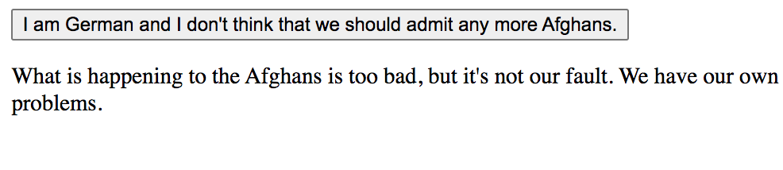
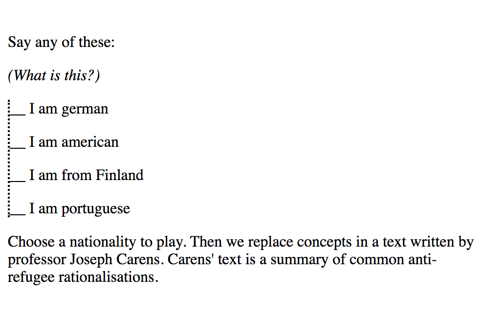
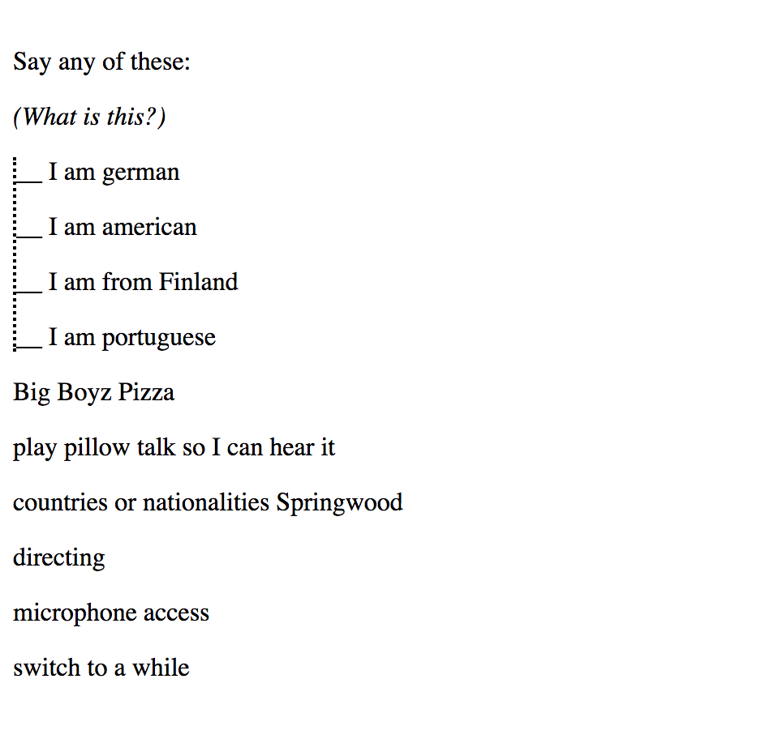
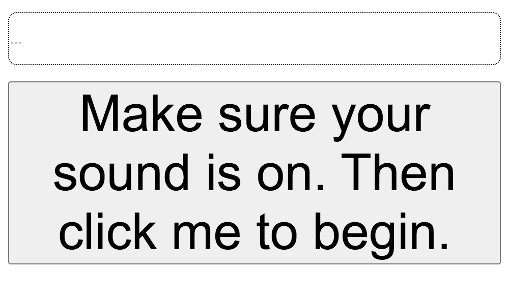
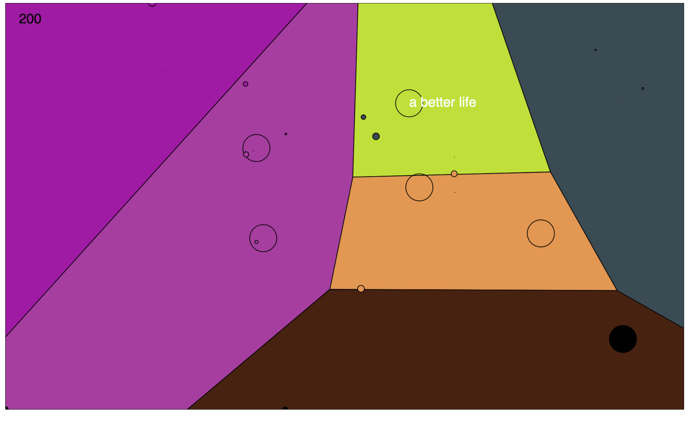
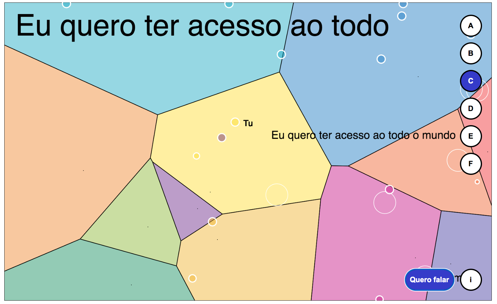
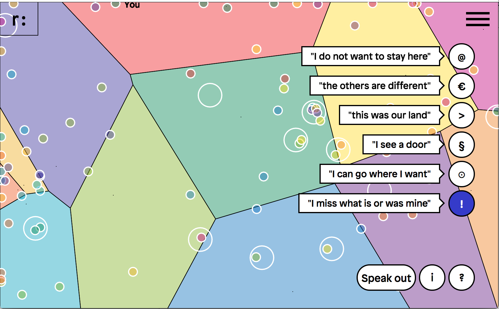
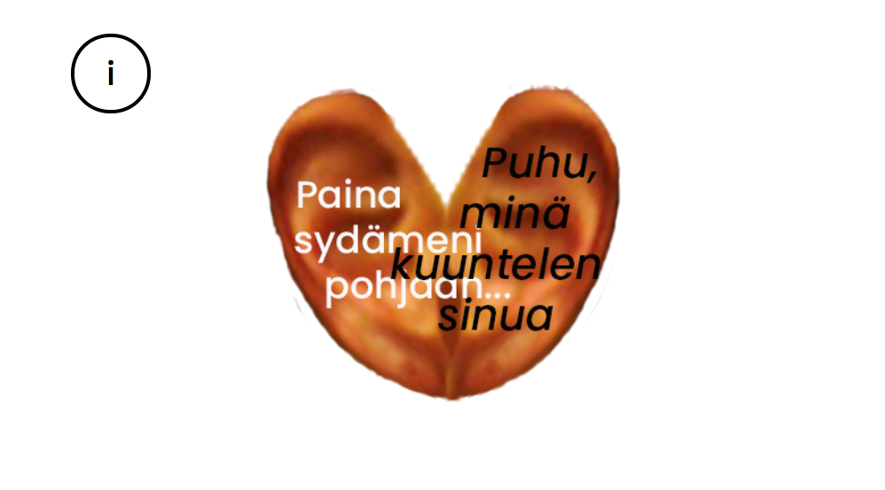
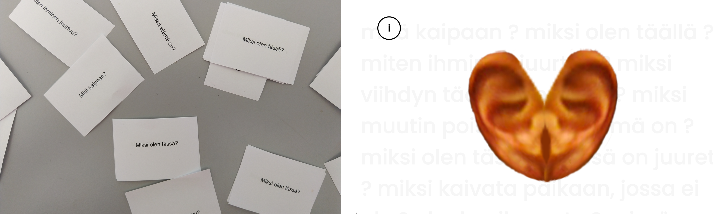

Abstract
In this artistic research I take the approach that digital works can be utilised for imagining and playing with yet impossible realities, for asking questions, and for portraying aspects of life such that we can explore these from a distance. This dissertation consists of three browser-based artworks programmed by myself in HTML, Javascript and CSS. These art experiences unfold on the screen, asking the person to interact with them in order to complete their meanings. The works incorporate, among other things, voice interaction through synthetic speech and speech input, the uses of which form an essential component of the works meanings. Each work is concerned with very different types of questions around migration, but overall, and as a triptych, the works explore what the movement brought about by migration implies from a human standpoint.
The themes encompassed extend from exploring perspectives on language, where movement results in linguistic accent which provokes a notion of the Other through external difference (in We cannot take them all), or exploring the movement induced by the tension between our body and our personal needs and desires, but that is governed by (shifting) borders (in Speak out) and finally, at exploring migratory movement through the ambivalent relationship between the here and the there, the simultaneous processes of (re-)rooting and of living with homesickenss (in Transplanted).
While this research may not depart from clear research questions, it nevertheless arrives at observations about the artistic strategies that emerge when migration is explored through notions of voice/interaction. The works themselves open up a space of contemplation about the respective themes, inviting participation through voice.
Keywords: migration, voice interaction, electronic literature, digital art, artistic research
☉
Resumo
Neste processo de investigação artística, parto da idea de uma obra de arte digital como ferramenta para imaginar e brincar com realidades (ainda) impossíveis, para formular questões e para retratar aspetos da vida de forma a serem exploradas à distância.
Esta dissertação é constituída por três obras interativas desenvolvidas por mim para o navegador web, programadas em HTML, Javascript e CSS. Estas experiências desenrolam-se no ecrã, mas contêm sempre um papel essencial para o utilizador. As obras incorporam, entre outros, a interação por voz através da voz sintética e reconhecimento de fala, o uso dos quais constitui sempre uma estratégia artística fundamental em relação a temática de cada uma das obras. As três obras têm temas diferentes, mas em conjunto, contemplam o significado do movimento causado pela migração, do ponto de vista humano.
Os temas abrangidos derivam da exploração da língua em si, em que o movimento produz um sotaque lingüística que depois provoca a idea do Outro através desta diferença externa (We cannot take them all), ou a exploração do movimento em si, provocada pela tensão entre o nosso corpo e as nossas necessidades e vontades pessoais, mas que é governado pelas regras sobre as fronteiras, que em si estão em fluxo constante (Speak out), ou a exploração do movimento migratório através da relação ambivalente entre o aqui e o alí, os processos simultâneos do enraizamento e o viver com saudades duma terra deixada para trás (Transplanted).
Embora esta investigação exploratória artística não parta propriamente de questões pré-estabelecidas, acaba na mesma por desenterrar algumas observações sobre estratégias artísticas à volta da migração no contexto da interação por voz. As obras em si criam um lugar para a contemplação sobre os respetivos temas, convidando a uma participação através da nossa própria voz.
Palavras chaves: migração, interação por voz, literatura digital, arte digital, investigação artística
☉
Acknowledgements
My deepest gratitude goes to my supervisors Professors Patrícia Gouveia and Diamantino Freitas, both essential in their guidance, and for providing me with opportunities to grow from seed to sprout in the profession of an artist-researcher. I am thankful to Professor Mirja Hiltunen from my alma mater for encouraging me to pursue doctoral studies, and to Professor Satu Miettinen for inviting me to join in the group exhibition Growth, Death and Decay that resulted in the creation of Transplanted. To Michelle Kasprzak and Claudia Laranjeira for proofreading pats of this manuscript. A huge thanks to Professor António Coelho who has always made things possible, and to Marisa Silva who solves all problems.
An enormous thank you to João Sousa (v-a studio) who contributed valuable graphic and interface design for Speak out during the raum.pt residency. Diogo Cocharro for support in the sound design of Speak out and for recording engineering for Transplanted. Thank you to Joseph Carens for blessing my transposition of his thinking into We cannot take them all.
When the Electronic Literature Organisation (ELO) hosted a conference in Porto in 2017, I felt I had finally found my artist-researchers spiritual home for the language-based practices that attract me. I am deeply honoured to have my 2016 work Give me a reason included in the upcoming Electronic Literature Collection 4. I thank Rui Torres for reading suggestions at early stages in my research process, Nick Montfort for taking the time to come see my presentation, Annie Abrahams for taking an interest in my work. It means a lot to be seen and heard by those whose work I admire. This community continues to inspire me.
I am forever indebted to my sibling Tero for being my mentor and patron saint
of programming: in the early days, an extension of stack overflow, in the past for refactoring my code and teaching me new coding principles, and for always being ready to help. Tero even promised to do my coding for me if need be. Curiously, that reassurance was enough for me to try my own wings. Furthermore, I still remember the look on the face of various engineering faculty members from the University of Porto when I expressed my doubts about being able to program my own ideas. Their faces always read: what on earth are you talking about?
. This look was accompanied by a comment along the lines of you can do it, it is easy
. Having this support and belief from practitioners of programming has been essential for demystifying the practice and for creating a sense of inclusion. p5.js itself (created by Lauren McCarthy), as well as the community around it and especially Daniel Shiffman’s The Coding Train videos were essential for allowing me to translate my visual idea about migration as movement into code. I laud the inclusive approach of the processing and p5.js community, and acknowledge its enormous impact on my practice.
Much thanks to my doctoral cohort in digital media 2016. To the universe and Kika for the chain of random events that brought me to Porto. Michela Magas and Andrew Dubber for organising the Music Tech Fest, since attendance at the hackathon in Ljubljana in 2015 solidified my resolve to pursue my dream of learning to program. Ana and Sandra, who cushioned my landing in Porto. Renu, for friendship and for collegial support. Kati for constant support and presence and Mirjam, the Girls Dinner group, have all made life more fun. Carla, Mafalda and Heldér. Johanna, since 1992. Tero (<3^2). My parents for the innumerable ways they have supported me along this way and all the way leading up to it. Diogo and Lili, whose importance I cannot even begin to put into words.
I acknowledge and am thankful for the financial support by Operation NORTE-08-5369-FSE-000049 co funded by the European Social Fund (FSE) through NORTE 2020 - Programa Operacional Regional do NORTE, as well as the in kind support of the raum.pt platform as well as the ITI/LARSyS research center.
Fonts used are Lora by Olga Karpushina (OFL-1.1. License, Lora-Cyrillic) and Montserrat by Julieta Ulanovsky (OFL-1.1. License, Montserrat).
This dissertation is published as an audiobook and a webpage (with documentation of the artworks as well as the works themselves) at terhimarttila.com/migration-as-movement. ☉
Introduction
When 2015 onwards various European countries saw an increase in the number of asylum requests, public discourse around migration boiled over. These discourses were in response to a tangible change in migration patterns which was felt, heard and seen especially in Germany
, the physical perimeter of ground on planet earth [ or: the place
] in which the currents of life had moved my body to [ or: the place or country I was living in at the time
]. The discourse touched deep into my personal experiences, instantiating an ongoing process of artistic research around the ancient phenomenon of the migratory movement of the human species.
A serial migrant myself, I have experienced both the ease of existence when our surroundings assume us to belong, as well as the friction, in at least some of its milder forms, of being where [ in a place
] one does not, so to speak, belong. Even the fact of having traversed a subset of this artistic research path, namely this dissertation, in Porto, is a further contribution to my personal and lived experience of being that foreigner. After five years here, I cringe when I hear myself speak [ == communicate
] in Portuguese.
I write from a position of privilege, a white woman pursuing a doctorate who has lived in several countries and whose migrations have always been easy: my parents were highly skilled, wanted migrants, the right kind of migrants. My personal migrations have been either inside the European Union where borders (for all practical purposes) do not exist, or as a university student under bilateral agreements. In a 2017 doctoral symposium presentation, my presentation title read: Migration is my right, borders an unnecessary obstacle
.
It is from this privileged position that I have come to live a life (like many other privileged white European persons) defined by a kind of effortless migratory movement where it feels as though we are free to move wherever we want. This is a wonderful way to experience life on planet earth, as a human being.
I wrote a poem about a moment which made an impression on me when I was volunteering with the refugees in Germany:
We sat on a park bench,
talking about his future,
his options,
his meagre options,
after an interview I had organised.
Me and him,
suddenly jolted out of structures,
out of the tent and the camp,
out of our roles,
the refugee and the volunteer.
A young woman, and a young man,
sitting on a park bench,
talking about his future,
and I thinking about mine.
His options, my options,
his meagre options, my ample options,
after an interview I had organised.
Me and him,
why and how,
are we so different?
A young woman and a young man,
on a park bench
talking about the future.
10.11.2016
It is this enormous discrepancy between my privilege and the reality of the human beings that I encountered during my volunteer work that brought a kind of fury to the front, asking, how is my migration any different from his migration? How is it possible for another human body to be sharing that park bench with me, yet at the same time there exist some invisible expulsive force exerting such great pressure on that other body, and on that other body only and not on my body, that their presence in this part of the world might after some time become impossible?
☉
The research that unfolds over the following pages is about deconstructing notions of countries, of belonging, of rooting, of homesickness, of borders, migration, language, some of the things that come to accrue a significance and come to define a human being when that human being, in some way or another, propagates from point A to point B. My research approach is artistic research, and I experiment with ways of using the voice/interface (that is: the voice, the interface and the voice interface) to approach my thematic concerns. I am not sure whether this research ever included research questions, or problems, but I believe I have arrived at some insights nevertheless about artistic strategies for exploring migration through repurposing voice/interaction.
☉
Motivation
In my previous artistic research project (MA dissertation) titled Give Me a Reason, completed in 2016, I found myself recording speech and then splicing sentences up to replay single words to create new meanings. Although Give Me a Reason is not part of this dissertation, I will make reference to it at times since some of the themes I touched upon during that process of inquiry continue to echo through this dissertation.
I found the process of creating Give Me a Reason intriguing and wanted to delve deeper into programming, language, audio recordings of speech and the practice of mashing up and recombining language. And what more, some time after completing that project I stumbled upon synthetic voices through google translate. As I played around with the voices, the translations and the texts, I found all kinds of funny uses for the widget which were, importantly, beyond those uses originally intended.
Delineating my PhD thesis proposal, I knew I wanted to continue to explore the theme of human migratory movement through artistic research. I continued to feel attracted to exploring the area of expression that somehow sits within the hazy zone demarcated by speech, texts, language, language processing, interaction and play in digital art.
Having worked previously with HTML and Javascript, I soon realised that, although still an experimental technology, the HTML5 Web Speech API would allow me to incorporate the dimension of voice input into my proposed project as well. Thus my inherent fascination with the human voice as material in artistic practice was further expanded as I realised that the modality of speech input was suddenly within my grasp as well. In the final moments of drafting my research proposal, this last artistic constraint made its way into my project proposal: to explore speech input or voice interaction as an artistic strategy.
☉
During my research process, I became curious about how people were experiencing my work, its themes, how they were approaching and experiencing the act of using their voice to interact with the work, and about how they perceived the use of synthetic voice or elements of play in my work. Seeing as the artworks I was creating were interactive, I quite naturally tended towards some degree of informal user research and evaluation in order to make my art work, to make it simple enough such that people could grasp it.
But as the art became usable, I found my conversations with people about my work evolving to addressing how people were making sense of the works themselves, and what types of thoughts or questions the engagement with the works would bring forth, in other words, how the work was being experienced. For this reason, besides the artistic process of iteratively creating the works, I also did an experimental and very small set of observations and interviews that resulted in a small corpus of data about the detailed experiences of some people that engaged with the work.
While this process of studying peoples experience with the works is an important component of this thesis, I still defend that the actual artistic process, and especially the iterative act of writing/composing and rewriting/recomposing code itself as a form of artistic practice and inquiry into human (migratory) movement, have been the most important outcomes of this dissertation. This inquiry through art practice is what guided and structured my entire research process. The practice itself has thus been my method, if we conceive of methods as "tools, tools for thinking with and tools for structuring that act of thinking with (Hannula, Suoranta & Vadén 2014, 37). The hands-on practice and craft of making the work is what led me to uncover important themes related to my chosen artistic approach. I will argue these methodological choices in more detail in the next chapter.
☉
Relevance and context
The title of this thesis suggests at two distinct areas of research: voice / interface and migration. In this section, I will argue that while my practice touches upon both the voice / interface and migration, my research has to necessarily be positioned in a third category entirely. My work is first and foremost about experimenting artistically at the crossroads of these two domains of knowledge. In other words, what types of critical angles can I, as a practitioner, unearth and explore with regards to the complex phenomenon of human migratory movement when I employ the voice / interface in my artistic practice?
Context: migration
Global migration and the tendency of us humans to move across physical space in pursuit of our life objectives will always be a topic worthy of study whether through our art practice, through artistic research more specifically or through any other research approach. To migrate, to move ones life (semi)permanently across physical space to a distinctly other area of our planet, is a central human tendency which will likely continue to exist. There are ample case examples of these migratory patterns of our species throughout history. To study, through artistic research, the ways in which the migration phenomenon can be conceptualised, or to address through art complex notions like xenophobia, is to further our understanding, in a more open manner characteristic to art, of this very human phenomenon.
Therefore, while my practice revolves around various aspects related to human migration, I can in no way claim that my (artistic) research will contribute towards any new understandings about migration in the sense of academic knowledge creation. Although I have immersed myself in books, journal articles and other academic texts published in various disciplines outside of the digital arts, areas like sociology, politics, philosophy and history, I acknowledge that my work will not contribute directly to the academic discourses in these areas.
However, I am highly indebted to these research areas insofar as they have informed my personal practitioner research, which Candy and Edmonds define as the type of research which practitioners engage in which is not shared with the wider community but serves to further the artists’ personal practice (Candy & Edmonds 2018, 66). These readings have challenged my own perception of migration as a complex phenomenon. Some of these insights are to be found in some form in my work, although the purpose of my work is not necessarily to convey any of these ideas.
Moreover, this process of questioning and making sense of the phenomenon of migration is in no way complete, as I continue to stumble upon novel perspectives in my readings. Studying the work of scholars in fields other than mine have definitely broadened my perspectives on human migratory movement. I also follow discussions in the comments section of news items related to migration to probe the types of attitudes and beliefs that circulate or are expressed publicly.
My work is contextualised in a broader realm of art, electronic literature and maybe even games which address a broad range of themes that emerge when we look into the phenomenon of human migration: refugees, language, xenophobia, belonging, adaptation, integration, homesickness, etc. I've found inspiration from a broad spectrum of areas, from data visualisations to sound art, and web-based generative and interactive literature. For the topic of migration, I’ve been more inspired by my readings into political science, sociology and political philosophy than by artworks about migration as such.
Nevertheless, a notable and recent artistic response, with enormous impact, to the perceptions of migrants in 2010s Europe is Olu Oguibe’s 2017 Monument for Strangers and Refugees for Documenta 14. The Obelisk was erected in a central square in Kassel, at Königsplatz, with inscriptions in the four major languages spoken in the city: German, Turkish, Arabic and English. The Obelisk cites a passage from the Christian Bible, Matthew 25:35 which reads "I was a stranger and you took me in. The monument was quietly taken down in 2018, due to political opposition especially by the newly arisen german right wing party AfD, but later, in 2019, re-erected in a nearby square. Bonaventure Ndikung, the curator who invited Olu Oguibe to Kassel, recently reflected on the significance of Oguibes work like this:
What provoked so much tension, so many emotions – varying from excitement to rage – around Oguibe’s monument, besides its conceptual and aesthetic brilliance, was the fact that it was audacious. The obelisk had the audacity to stand on the city’s 18th-century Königsplatz, which was named after Friedrich I, King of Sweden and Landgrave of Hesse-Kassel. The obelisk had the audacity to point at Germany’s Achilles heel: the question of migration. The obelisk had the audacity to reveal the bigotry hidden behind religious claims and democratic flags. The obelisk had the audacity to betray an essential and fundamental unspoken truth in this construct called Germany: that it is a conglomerate of tribes and peoples who fought against each other for hundreds of years. United to combat the Romans in the Teutoburg Forest in 9CE, to form the German Empire in 1871, to repair the devastation of World War II in 1945, and to reunify East and West Germany in 1990, the country’s common denominator – its underlying truth, too often denied – is its strangeness and pluriversality.(Ndikung 2021)
Another intriguing work is Say Parsley (2001 - 2010) by Caroline Bergvall which explores the idea that how you speak will be used against you
(this is the subtitle of Bergvalls work on her website). Bergvall’s work references the Haiti Parsley massacre, in which differences in the pronunciation of the word parsley" were used to distinguish between Haitians and Dominicans in order to send Haitians to their death. This practice in turn echoes the Sibboleth, a biblical tale of how the pronunciation of the word "sibboleth" was used to massacre one tribe. Bergalls work is about how language reveals our origins and also our own prejudices.
Another work which I have found meaningful is Bury Me, My Love (2017), a digital game by The Pixel Hunt. Bury Me, My Love follows the main character Nour on her perilous journey from Syria towards safety in a compelling instant messaging application style format, where we play Nour's partner, who stays behind in Syria and accompanies Nours journey over on his device. The game includes the option of playing in pseudo-real time, which means that sometimes we might not hear back from Nour for a day or two. The game is based on the experiences of Dana, a Syrian refugee, and an innovative concept developed by journalist Lucie Soullier, who published Danas journey from Syria to Germany as a whatspp conversation. Bury Me, My Love is primarily a branching narrative or interactive story, although player choices about how to converse with Nour influence factors like hope, inventory, mood etc., which in turn also affect how Nours journey progresses.
Context: voice / interface
Another important influence and context for my work is the creative use of the voice and voice interaction. I have familiarised myself with the technological development of the voice / interface, immersed in some of the academic debates around voice interaction in the areas of engineering, sociology, human computer interaction and so forth, yet, I am conscious that my work will not contribute directly to these debates either. I have not solved any major engineering problems, nor have I provided solutions for the ethical issues around voice technology. Nor does my work provide a critical angle on technology and voice interaction. Outside of the context of the creative repurposing of the voice/interface, my work may at most be able to contribute new ideas and knowledge in the context of human computer interaction.
Finally, the context and relevance of my work is to explore some unexplored avenues in the creative use of voice, of language and of voice interaction to talk about migration. I do so by employing notions of procedural rhetoric (Bogost 2007) and play (Sicart 2014) as a way to understand in part the role of speaking in the context of my work. I also discuss my own code through the lens of critical code studies (Marino 2020), showing how the rhetorics of my work also exist beyond the surface and on the level of code, in variable and function names and in my decisions of how to program the relationships within my systems.
My work is situated within the area of electronic literature, where creative practitioners working in the digital language arts have already explored the use of voice and voice interaction in various kinds of contexts throughout the last two decades. The relevance of my work is likely to be greatest in this area of research.
Voice user interfaces have been a subject of study for engineers and computer scientists for decades, as they have tried to figure out how to interface with computers through speech and natural language. With voice user interfaces becoming more prevalent in recent years, user interface designers have also highlighted some of the design considerations for designing voice user interfaces (see Pearl 2017). In the realm of videogames, worthy of mention is Allison’s 2020 PhD thesis titled Voice interaction game design and gameplay, which is concerned with the phenomenon of voice-operated interaction with characters and environments in videogames
(Allison 2020).
A highly effective and appropriate use of synthetic voice is in Kıratlı and Wolfe’s (in collaboration with Bundy) work Cacophonic Choir (2019). The artists collected sexual assault survivor stories from the The When You're Ready Project, a community for survivors of sexual violence to share their stories and have their voices heard, finding strength in one another
(Wolfe, Kıratlı and Bundy 2020) and trained neural networks on these to create new stories based on these. The stories could be listened to by moving close to lighted sculptures, which would then begin to read the texts in a synthetic female voice. In my opinion, the use of the synthetic voice is appropriate because it anonymises the difficult stories about sexual voices, yet at the same time brings some element of the human through the synthetic voice. For me, listening to video documentation of the work online, I cannot help but also think of how the eerie, disturbing and unnatural synthetic voice acts as a reflection of the eerie and disturbing nature of sexual violence.
Early forays into artistic experimentation with voice user interfaces go back to the late 90s and early 2000s in the works of Ken Feingold and Stelarc, among others. I will look here at Feingolds work in particular. Huhtamo writes like this about the work of Feingold:
He uses state-of-the- art technologies not as goals in themselves (as some ‘artist-engineers’ do), but as means of reflecting on their social and psychological meanings – particularly the anomalies and paradoxes that always accompany their implementation, including the question about ‘poorly designed’ or ‘badly working’ technology.
(Huhtamo 2019)
In many ways, Feingolds works are in my opinion some of the most interesting when we consider works that employ voice/interaction in a broad sense exactly for the reason that Huhtamo refers to in the quote above: because the technologies are used as means of reflecting on their social and psychological meanings
(Huhtamo 2019). By my personal experience of wandering around in the art context over the last ten years or so, I note that the use of synthetic speech is increasing, and that I am also ever more frequently stumbling across artworks, especially online works, that employ speech input in some manner. However, a vast majority of works use speech simply as a means of inputting data or as alternative to pressing a button without dealing deeply with the implications of the act of speaking or the machine/voice itself.
Feingolds series of works dating to the turn of the millennium are especially interesting because of the multiple ways in which they explore human relationships, conversation itself, language and metaphysical questions of existence through the use of sculpted robotic human heads, voice, synthetic voice, voice interaction and speech recognition.

Figure 1: If/Then (2001) by Ken Feingold, screenshot of video documentation (Feingold 2011a)
Feingold describes the work If/Then (see figure 1 above, previous page) in the description section of the video documentation of the work on his YouTube channel as follows:
Two identical heads, sculpted in the likeness of an imaginary androgynous figure, speak to each other, doubting the reality of their own existence. These two, in ever-changing and outrageous conversations with each other struggle to determine if they really exist or not, if they are the same person or not, and if they will ever know. I wanted them to look like replacement parts being shipped from the factory that had suddenly gotten up and begun a kind of existential dialogue right there on the assembly line. Their conversations are generated in real time, utilizing speech recognition, natural language processing, conversation/personality algorithms, and text-to-speech software. They draw visitors into their endless, twisting debate over whether this self-awareness and the seemingly illusory nature of their own existence can ever be really understood.
(Feingold 2011a)
Feingold alludes to the human through the sculpted head of course, but perhaps more importantly, through the use of speech and the voice. What I think is interesting about If/Then is Feingold’s artistic take on the discrepancy between our perception of the synthetic voice as somewhat human, especially when it engages in a conversation, and the impossibility of a machine ever being a human. Moreover, albeit the voices sound female, the heads themselves are sculpted purposely as androgynous, which in my perception critiques in an elegant manner our propensity to attribute humanised computer characters with gender.
Figure 2: The Animal, Vegetable, Mineralness of Everything (2004), screenshot of video documentation (Feingold 2011c)
In other works, such as Sinking Feeling (2001) and The Animal, Vegetable, Mineralness of Everything (2004) Feingold appears to have sculpted the heads to resemble his own (see figure 2 above) which I also find intriguing as it makes visible his authorship of the movements of mind of these humanoids. In these two works, the robots are Feingold, quite literally.
In a work form 2004 titled You (see figure 3 below, next page), two androgynous heads, one with a male voice and the other with a female voice, engage in an ever-ending generative argument about their relationship. As Feingold writes:
We see how oft-repeated phrases can have little real meaning, but a lot of power to do harm. The endlessness of their predicament is literally programmed and self-perpetuating, going nowhere - perhaps a way to think about those who cannot escape from similar cases.
(Feingold 2011b)
I find Feingold's use of procedures in the case of You extremely intriguing as well. In the work You, Feingold uses the perpetual loop in his code as a metaphor of the toxic loops that inflamed relationships lead us into, some of which are very hard, if not impossible, to get out of.
Figure 3: You (2004) by Ken Feingold, screenshot of video documentation (Feingold 2011b)
Another example is the use of natural language processing (and probably the use of keywords picked up by the speech recogniser) in works such as If/Then (2001) and The Animal, Vegetable, Mineralness of Everything (2004) to create a kind of perception of logical dialogue and continuity between the turns of speech in the meandering and perpetual conversations that these figures engage in. The thoughts expressed by the characters taking turns are interlinked but at times also disjointed, which is a reflection of the complexity and perhaps even the ambivalence of any existential debate. The limited scope of what the characters are speaking about also makes the randomly generated exchanges appear to follow a logical flow.
This is a classic approach in the design of any conversational agent, the earliest example of which is the psychotherapy bot ELIZA (Weizenbaum 1966), possibly the first chatbot or conversational agent created. ELIZA mimics the approach of a Rogerian psychotherapist, retorting to any user input with a question that references keywords that the user mentions, or by asking more questions or by saying I understand
. Due to the restricted context and the ingenious inner logics of the program, it can, at least momentarily, feel as though ELIZA really understands what is going on in the conversation: ELIZA shows, if nothing else, how easy it is to create and maintain the illusion of understanding
(Weizenbaum 1966, 42). I use a similar device in my work Transplanted, as I loosely link the feedback of the system to keywords that the person speaks, creating an illusion that the system is somehow making sense of what is being said to it.
☉
A recent project by a group of three artistic researchers (and their collaborators) at the University of Washington took a multidisciplinary approach to exploring voice interfaces in their project Voices and voids (Desjardins, Psarra & Whiting 2021). The researchers looked, through their practice, specifically into ethical concerns related to voice assistants. An ongoing five year research project in the humanities titled Talking Machines (2018 - 2023) by a multidisciplinary group of researchers from the University of Turku is looking at electronic voice and the interpretation of emotions and self-understanding in human-machine communication in 1960 - 2020
(see the Talking Machines project website), indicating that there is growing interest in understanding the place of voice interaction in our society.
Another indicator that the creative use of voice interaction is being explored is creative technologist Nicole He’s course in 2018, 2020 and 2021 at the ITP masters program at New York University called Hello Computer: unconventional uses of voice technology
. He challenges students to come up with creative uses and use cases for voice technology. Student projects include, for example, a beatbox-interface, where the person can drag and drop the words boots
, and
, cats
around to then have the voice synthesiser read these out loud.
Even Amazons Echo has been appropriated for artistic purposes, in John Cayley’s The Listeners (2015). The Listeners is a somewhat eerie interactive work (something between a conversational agent and branching narrative) for the Echo that, in a subtle manner, sketches the idea of the smart home speaker as a networked device that actually listens to its users in a manifold sense: if you let us into your homes, and into your hearts, we will, in time, understand you truly, and help you to achieve your dreams, and passions
(excerpt from Alexa speaking in The Listeners). Besides an experimental artwork, Cayley’s The Listeners is a product of Cayley’s theoretical-practical inquiry into the future of electronic literature. Cayley suggests that we may be entering an era of aurature:
Aurature. Linguistic work valued for lasting artistic merit that has been expressed in the support media of aurality.
—Based on the OED definition of 􏰶literature􏰷Aurality may be understood either as the entirety of distinguishable, culturally implicated sonic phenomena or, more narrowly and with specific regard to aurature, as the entirety of linguistically implicated sonic phenomena.
Aurature must be distinguished from oral literature (in orality or oral culture), for at least two reasons. In the first place, to emphasize that aurature comes to exist more on the basis of its being heard and interpreted rather than on the circumstances of its production (by a mouth or speaking instrument) and secondly, for historical reasons, because contemporary digital audio recording, automatic speech recognition and automatic speech synthesis technologies fundamentally reconfigure—in their cumulative amalgamation—the relationship between linguistic objects in aurality and the archive of cultural practice. Whereas, during the literally pre-historic period before writing (before there were linguistic objects as persistent visual traces), essential affordances of the archive were denied to oral culture, in principle, the digitalization of the archive allows aurature to be both created and appreciated with all the historical affordances and the cultural potentialities of literature.
(Cayley 2017)
Were Cayleys projections about a new era of linguistic culture in aurality to come true, it would suggest that the materiality of speech and voice interaction merits the scrutiny of researchers and practitioners in the creative arts, whether coming from the angle of literature or digital arts or something other entirely.
Aims and objectives
The initial driving force in this artistic research process was the desire to critically address the topic of migration through digital, interactive art. Besides this general mission, and as is characteristic to artistic practice, the initial aims and objectives of this practice-based research process were vague. I felt attracted to exploring the use of voice because of my past work, and saw my research interest growing into exploring synthetic voice and voice input as one of the means of addressing the topic of migration. The central aim of this thesis came to be to explore aspects of migration through artistic research and (as a by product) to build, through this practice, a richer understanding of the medium of the voice / interface from the perspective of a creative practitioner and in my particular thematic context of migration.
Over the course of my artistic research, and as I put together three distinct projects about migration where the voice / interface played an important part, I felt myself ever more drawn to the voice interface as a medium. I became fascinated by the many ethical issues related to this technology that is slowly finding a place in our everyday lives. So as I conclude this research process and write up this dissertation, I realise that, as is true to any research process, mine has led me to a redefinition of my initial research aims, objectives and even questions.
Research Questions
To my utter surprise, what this artistic research process has led me to are research questions that will be worth asking about the ways in which we contextualise human migratory movement and about the creative use of the voice / interface in the context of migration, rather than conclusive answers to any initial research questions. By keeping my senses open to what my theoretical readings, my practical work and my engagement with persons who interact with my works has revealed, I find that my initial questions were uninformed. The main research question which put my research process in motion was:
In primarily voice-based digital art, what are the main design considerations that lead to a playful and engaging experience which simultaneously raises awareness about the issues inherent in the work?
In the course of my research process, this initial question has eroded because it does not tackle the most interesting issues at stake. Rather, my process has caused new research questions to emerge. The reader may not find concrete answers to these questions in this dissertation, but rather, will see how the research process has led up to these refined research questions. Nevertheless, some of the questions which guided my practice could be formulated something like this:
As artists, what are the questions that we should be asking about the medium of the voice / interface?
and,
What are some of the worlds of meanings contained within voice, language, and voice interaction with computers that I as an artist can leverage to talk about the topic of migration?
and, most importantly,
What are some of the transdisciplinary perpectives on human migratory movement that could truly enable us as artists and thinkers to depoliticise and to reconceptualise migration as movement?
☉
Dissertation outline
Following this introduction, we would typically encounter a series of chapters delineating the research context (literature review or state of the art), elucidating the prior work in the field, the central challenges, debates and terminology. The purpose of these chapters would be to bring the reader on par with the readings of the author. Having attempted multiple times to write these chapters, I eventually had to give up because of one important reason. Because my methodology is practice-based, my research process has been driven by the artistic practice itself. That is to say that one of my first steps in the research process was to start programming. This I did after being inspired by some readings about the ethics of immigration.
As I worked, themes began to emerge. Before coding a rule into my system, I had to take a step back to think about what kind of a statement I wanted to make about migration. I had to think about why I design my interaction a certain way, what is the meaning embedded in making people engage with the work in a specific way. I stumbled upon privacy issues related to my chosen technologies, and realised that there was already an active ongoing debate about these issues both in technology and in the arts. My understanding of the theoretical and thematic context of my work grew in the process of working. My work does not emerge out of these contexts, rather, the contexts reveal themselves as a result of my practice.
Some of these realisations and trajectories became side paths that are not necessarily evident in the works themselves, yet seem very important from the perspectives of both migration and voice / interaction. For this reason, I have decided to begin this dissertation by discussing my work, so that the reader will understand the work and end by contextualising my work in the discussion, limitations and future work which follows. The discussion is like a collection of essays about various phenomena which my practice revealed. This discussion is extended in the limitations and future work section, where I probe into areas of inquiry which began to seem interesting and relevant during this exploratory research process.
But before addressing the works completed, I will take a moment in the next chapter to argue my methodological approach to this research. I will argue for how my artistic practice, along with this written dissertation, is to be considered research. I will also elucidate what is meant by exploratory programming as a form of artistic practice, and talk about my artistic approach to the voice/interface. I will explain why and how I chose to observe and interview a small sample of people about how they make sense of my work.
After so doing, the practical work will take the lead, each in their own chapters, and discuss their unique context, or the artistic inquiry that led to their becoming. I will then detail the iterative artistic process, highlighting decisions and observations made along the way. After narrating the artistic process and the decisions made along the way, I will reflect critically on the works. After thoroughly presenting my artistic work, I will engage some of the global or overall themes which emerge in the aforementioned essay collection -like Discussion.
Because my research has been exploratory, I have become aware especially towards the end of my process of the many gaps which I could have addressed but did not, each of which is like a black hole, inviting me with force to pursue its concerns in future work. I think that in many ways, these limitations and areas for future work are, alongside the artworks, some of the main outcomes of this research due to my practice-based exploratory approach. For this reason, I have designated a chapter solely for the discussion of these issues.
Following the discussion of imitations and future work, the reader will find me tying off my narrative in the Conclusion. In the appendix, we find a list of dissemination and publications related to this research, the research participation form, notes on where to find the source code of my work, an essay about voice interfaces and some comments on selected portions of my code.
☉
Finally, an important note to the reader, which will be reiterated throughout this thesis. This dissertation is written to accompany three distinct artistic productions, We cannot take them all (2019), Speak Out (2020) and Transplanted (2021). I do my best to describe the works, in chapters two, three and four, but because all works are interactive, they will necessarily need to be experienced in order to be understood. I strongly urge the reader to experience the works at terhimarttila.com/migration-as-movement, terhimarttila.com, github.com/trhi, or github.com/trhi/migration-as-movement and access the works or their video/audio documentation as well as the audiobook of this dissertation.
☉
☉
1 Artistic research through exploratory programming
One might ask, why an entire chapter devoted to the methodology? Isn’t it enough to describe it in a few paragraphs within the introduction?
. Indeed, it may not always be necessary to spend an entire chapter discussing what was done and why. However, I have struggled to clarify for myself, throughout my entire research process, how it is that what I ended up doing can be considered research. This is because artistic research or practice-based research is still not as established a paradigm of knowledge creation in comparison to other more evolved and senior forms of science. This has been an epistemological struggle and surely also a process of maturing towards the identity of an artist-researcher.
For the reader who is perhaps as bewildered as I was about how artistic practice itself can be research, and about how to approach the written dissertation which accompanies the practice, I invite you to follow my argumentation about how my chosen mix of methodologies and approaches is, I believe, valid as knowledge creation. My hope is that by articulating my own choices, others struggling with these issues as they search for their own unique approach may find yet another documented approach to artistic research.
After arguing for artistic research in a more general sense, I will position my work within the realm of procedural systems, language-based works and voice-based works, as well as position my practice in general as exploratory programming. Finally, I will devote some time to the notion of evaluation in the context of practice-based research in interactive arts and what this can mean from the perspective of knowledge creation.
☉
1.1 Notions of artistic research
There is ample literature on the sphere of knowledge creation within the university context which include artistic practice or art practice as one of the components of the research process, or the endeavour in which the artistic and the academic are united
(Borgdorff 2012, 3). This literature will include various terms and concepts which all denote more or less the same thing, albeit with slight variations. Some of the concepts currently in use in the area of fine arts by artist-researchers are:
artistic research (see Borgdorff 2012), practice-based research (see Candy & Edmonds 2018), practice as research (prevalent especially in the performing arts, see Nelson 2013), practice-led research (see Smith & Dean 2009), research creation or recherche-crèation (used in the French speaking realm, see Paquin & Noury 2020).
Practice-based or artistic research is usually said to date historically to the late 1970s or 1980s (Candy, Edmonds & Vear 2022, 74 — 75; Nelson 2013, 11; Arlander 2013). Candy, Edmonds and Vear point out that:
an important influential factor in shaping the way these initiatives take root and grow is a country’s university system and its regulatory standards, which affect the take-up and expansion of such initiatives. Without a suitable regulatory framework, a legitimate role for the designing and making of artefacts leading to post-graduate research awards is hard to justify. Opportunities for including artefacts in formal research remain limited on a world-wide scale.
(Candy, Edmonds & Vear 2022, 76)
For example, the Finnish national university laws position art universities and art faculties as separate entities from science
universities, meaning that art universities initially had more liberty to define how they would award doctorates. In Finland, art universities and faculties have since the 1980s awarded a Doctorate in Arts (DA or Taiteen tohtori
, TaT) instead of a PhD (Rinne 2016, 17 — 19). Any artworks submitted as part of the doctorate are pre examined and considered as official submissions alongside the written dissertation. This type of artistic research doctorates have been implemented around Europe and the rest of the world at varying speeds. According to a position paper on the doctorate in the arts by the European League of Institutes of the Arts, in general it seems that the tendency around the world is to increasingly adopt art-based PhDs (ELIA 2016).
In this dissertation specifically, I discuss three artworks which are integral to my research process, however, they have not been evaluated or pre-examined as an official submission or component of my dissertation submission. Rather, they are considered and examined through their textual representation in this written dissertation towards a doctorate in Philosophy. It is hoped that jury members will familiarise themselves with the works when evaluating the dissertation as a whole, since the works are available on my website. Yet, in theory, this dissertation could be evaluated solely based on this written submission.
The impetus for conceptualising different forms of art practice as research has also emerged through artistic training migrating from vocational training to universities (Borgdorff 2012, 35; Nelson 2013, 3-4 and 14-15), as well as the inflation of the university degree in general, with the PhD displacing the MFA as a terminal degree (Borgdorff 2012, 35; Nelson 2013, 13), leading to the consequent requirement of a PhD degree for teaching positions (Candy 2020, 238). In the European context, this transition towards a PhD in the arts has also been propelled by the Bologna process which sought to unify the European university degree system (Borgdorff 2012, 31; Nelson 2013, 15-16). The question of consolidating artistic practice and traditional notions of academic doctoral study and research has been widely discussed in the last decades in art institutions the world over.
This discussion is still lively, and has its forum in Journals such as the Journal for Artistic Research (JAR), Nordic Journal for Artistic Research (VIS), MaHKUscript. Journal of Fine Art Research, among others. The Society for Artistic Research (SAR) has developed the Research Catalogue, an online platform which provides a format for artist-researchers to present their work online in a format that escapes traditional page- and print-based publishing formats. Various academic conferences also tackle these issues.
If we expand the discussion of the role of the arts in research into an even broader realm beyond art institutions, then yet more terminology will emerge. Chilton and Leavy collected some of this terminology in 2014:
Figure 4: Table 20.1. Partial lexicology of terms for arts-based research (Chilton and Leavy 2014, 40)
These above concepts and approaches originate from a diverse set of areas of human activity where art, in any one of its many forms, have presence. These terms are thus arising out of areas like music, theatre, dance, literature, poetry, art education, art therapy, education, the social sciences, or the humanities. Behind each concept and within each field there will be differing interpretations and definitions of these terms and about how they contribute to knowledge creation in a research process. Central to these research methodologies as a whole is the notion that either the art artefacts themselves, the artistic process or other art-based practices and approaches can create a unique kind of knowledge which other methodological approaches cannot.
Biggs and Karlsson suggested 10 years ago that artistic research could in fact be a third category beyond either artistic practice or research:
The purpose of training arts researchers should be to prepare them as professionals in arts research. This is not the same as a career in traditional academic research nor is it the same as a career in existing professional arts practice. This is a third professional category that is as yet undefined.
(Biggs and Karlsson 2011b, 423)
Has artistic research become defined over the last ten years? Judging by the breadth of form that the PhD dissertation takes at some art institutions, it seems that arts research has indeed pushed the boundaries of both professional arts practice and academic research.
As an example of a bold approach I cite Otso Huopaniemi's 2018 dissertation titled Algorithmic Adaptations - algoritmiset adaptaatiot (Huopaniemi 2018), which is only published online and not as a pdf. This is because the "written" dissertation contains videos which are quintessencial to understanding Huopaniemis thesis, videos in which google translate and automatic speech recognition is employed as an artistic strategy in writing. The dissertation runs with an english and finnish version side by side on the screen, with the (mis)translation by google translate often available for both texts, again as important evidence of the central arguments of the dissertation.
Arlander, on the other hand, argues that artistic research is an acknowledged field of research and knowledge production, rather than a specific methodology. Artists undertaking research can use various methodologies
(Arlander 2013, 153). In many ways, Arlanders approach seems to sound true based on a review of a handful of practice-based PhD theses that I have come across. Each artist-researchers practice is different, and each artistic research process has different questions, tasks and objectives, and for this reason each must choose for themselves what type of process will best suit their particular inquiry. As a result, artistic research dissertations will invite at times an eclectic mix of methodologies most suitable for that particular research task.
Candy and Edmonds state that: a basic principle of practice-based research is that not only is practice embedded in the research process but research questions arise from the process of practice, the answers to which are directed toward enlightening and enhancing practice
(Candy & Edmonds 2018, 63). This is in part true by my experience, inasmuch as is concerned the components of my research in which I experiment with unconventional uses of the voice interface, or: repurposing the voice/interface, as I like to conceptualise it. In that aspect of my research, I study the ways in which people perceive the act of speaking to the computer (in the context of my works) in order to enhance my use of voice/interaction as a medium or artistic strategy.
Moreover, simply the process of experimenting with and exploring the use of voice / interaction allows me, as a practitioner, to build new knowledge about voice / interaction as an artistic strategy. I reflect verbally on my particular use of voice / interaction, and dwell on the rhetoric of the voice and of voice interaction in my works.
Another differentiating factor of presenting practice-based research is that a full understanding of the significance and context of the research can only be obtained by experience of the works created as distinguished from using them as illustrations
(Candy and Edmonds 2018, 65). This is in particular true for the works in this dissertation, which are process-based, digital and procedural interactive works. The works unfold in time in unique ways based on the way people interact with them. The experience of interactive art cannot be conveyed by images, nor by video documentation, since the crucial component, the experience of making a chain of choices, is impossible to portray through images or video.
☉
A further important contextualisation of my particular approach to artistic research is that my work is specifically interested in tackling philosophical, psychological, political and sociological issues related to the phenomenon of human migratory movement. My intention is to address these issues through language-based, time-based, interactive, browser-based art. My thinking is inspired by adjacent areas of research such as sociology and political science. I personally explore the issues as I think about how to represent dynamic relationships though code. But I also invite others to reflect on the topics through engaging with my work. My approach to artistic research can thus be considered transdisciplinary. Borgdorff articulates the specific contribution of artistic research in this type of context as such:
Much artistic research does not limit itself to an investigation into material aspects of art or an exploration of the creative process, but pretends to reach further in the transdisciplinary context. Experimental and interpretive research strategies thus transect one another here in an undertaking whose purpose is to articulate the connectedness of art to who we are and where we stand. Much of today’s visual and performing art is critically engaged with other life domains, such as gender, globalisation, identity, environment, or activism; philosophical or psychological issues might be addressed in artistic research projects as well.
(Borgdorff 2012, 166)
In this artistic research I take the approach that digital works can be utilised for imagining and playing with yet impossible realities, for asking questions, and for portraying aspects of life so that we may look at them from a distance and reflect on them. Each work is concerned with very different types of questions around migration, but overall and as a triptych the works ask what the movement brought about by migration implies from a human standpoint. The themes encompassed extend from perspectives of language, where movement results in accent which provokes a notion of the Other and a fear of the Other (We cannot take them all), the movement induced by the tension between personal needs and desires, but that is governed by (shifting) borders (Speak out) and at migratory movement as something which brings about homesickness but also a process of rooting in a new environment and a ambivalent relationship between the here and the there (Transplanted).
☉
My artistic practice is therefore the central force which drives this research process. I have created work in order to explore human migratory movement through different angles. In doing so, and in having to specify the rules of my computer programs and to think about how to tie in voice/interaction and my central themes, I have had to further reflect on my own understandings.
Throughout, I have conceptualised the migratory movement of our species as movement, and upon turning the metaphor into an interactive computer program which unfolds on the screen, I have had to further refine and simplify my ideas. I have shown my work to others and thought about what their interpretations and responses say about the work. I have formally interviewed people to obtain an even more detailed picture of how people are experiencing the work, responding to it and making sense of it.
☉
How then, do we evaluate artistic research? Borgdorff underscores the importance of assessing the research from the angle of the contribution that the artworks make in light of the issues they address:
The difference between artistic research and social or political science, critical theory, or cultural analysis lies in the central place which art practice occupies in both the research process and the research outcome. This makes research in the arts distinct from that in other academic disciplines engaging with the same issues. In assessing the research, it is important to keep in mind that the specific contribution it makes to our knowledge, understanding, insight, and experience lies in the ways these issues are articulated, expressed, and communicated through art.
(Borgdorff 2012, 166)
That is, for artistic research that takes place in an interdisciplinary context wherein the artistic practice tackles issues beyond art itself, Borgdorff is saying that evaluation of the artistic research needs to consider especially how these interdisciplinary issues are articulated, expressed and communicated through the art. I defend that all the works created are consistent in the sense that they address their respective themes in relevant ways, coming up with idiosyncratic ways to deal with the issues that they address.
It has not been obvious to me how to go about evaluating my research process and my research outputs. What are my research outputs? Are the artworks my research output? Or are the interview transcripts the outputs of my research? Is this dissertation (the written documentation of the artistic research process) the sole content which should be evaluated?
Borgdorff lists seven questions that can be used to assess an artwork or practice as research:
- It is indeed research?
- Does the research deliver or promise to deliver new insights,
forms, techniques, or experiences?- What knowledge, what understanding, and what experience is
being tapped, evoked, or conveyed by the research?- Is the description or exposition of the topic, issue, or question sufficiently lucid to make clear to the forum what the research
is about?- What relationship does the research have to the artistic or the social world, to theoretical discourse, and to the contributions that others are making or have made on this subject?
- Does this experiment, participation, interpretation, or analysis provide answers to the question posed and, by so doing, does it
contribute to what we know, understand, and experience?- Does the type and design of the documentation support the dissemination of the research in and outside academia?
(Borgdorff 2012, 212)
Borgdorffs proposed list of seven questions for evaluating artistic research can be thought of as complementary to other ways of evaluating research. One of the questions I have struggled with is whether I should be evaluating my work in the light of whether or not it magnates to successfully communicate my original intentions. As we will later on see with my evaluation of We cannot take them all, the work might in fact be communicating something quite different than what I intend, at least for some of the people who engage with it. But is this a problem? Or can the artwork be thought of as having some degree of agency, or freedom or room for interpretation, in the sense that it may be appropriate for the artist to cede control of its interpretation to those who engage with it?
☉
In the next section I will introduce the notion of (exploratory) programming as an artistic practice and as a method of inquiry itself.
1.2 Writing code as artistic practice
I conceive of my practice as exploratory programming (Montfort 2021), wherein the act of programming itself is what sometimes leads the way. That is, my artistic ideas are not necessarily fully defined to begin with, rather, some central notions guide me and only through the iterative, exploratory and at times even playful practice of composing code, do I arrive at my final results. The act of coding and trying out various kinds of ideas about processes as relationships helps me to think through my themes as well.
Moreover, I have always intuitively felt that the code I write, as a form of language and with its structures, function and variable names, as well as my comments, is as important as the experiences which it produces, and so in this sense the way I conceptualise my own programming practice and the code itself is informed by ideas circulating in the field of critical code studies that was initiated by Mark Marino in the early 2000s (Marino 2020; Marino 2006). Marino conceptualises the need to read code critically like this:
As code reaches more and more readers and as programming languages and methods continue to evolve, we need to develop methods to account for the way code accrues meaning and how readers and shifting contexts shape that meaning. We need to learn to understand not only the functioning of code but the way code signifies. We need to learn to read code critically.
(Marino 2020, 5)
Marinos critical approach to code, which looks at code and practices of coding amongst other through postcolonial and feminist lenses, has been very inspirational for me in that I have found my personal approach validated especially through Marinos naming of one of the toxic aspects of programming culture. Marino calls it encoded chauvinism, the:
denigrating expressions of superiority in matters concerning programming, which I see as a foundational element of the toxic climate in programming culture, a climate which often proves hostile—particularly to women and other minority groups—and is a kind of technological imperialism.
(Marino 2020, 134)
This encoded chauvinism may dictate for example that code should be as concise as possible in order to be considered elegant. I appreciate this type of concise coding, but I personally take an exactly opposite approach to coding. I call my coding style verbose, and I write it as close to prose as possible through function and variable names and frequent comments, in part for my own sake (so that I can also later make sense of what my code does), and in part so that especially novices that read it can make as much sense of it as possible through the long and expressive variable and function names such as goTowardsClosestAllowedZone(). Marinos inclusive and critical approach in critical code studies has been essential for feeling that my approach is also valid and important even if it may be out of line of the majority programming culture.
The ideas of critical code studies also inform my approach to presenting my work, because I not only describe what my code does, but also discuss selected snippets of the code itself. That being said, I acknowledge that my code can be read in a plethora of ways beyond my own reading, and look forward to critical perspectives that others may find in my code in the future.
I also want to discuss programming as artistic practice because I think that there are certain aspects of programming as practice which deserve to be highlighted to a reader that may not themselves be familiar with programming as a way of making things. Consider this idea:
Joseph Weizenbaum didn’t just design the first chatbot, Eliza, and then get someone else to do the programming later… These and dozens of other major breakthroughs were made by programmers who used programming to think, doing creative computing and programming as inquiry.
(Montfort 2020, 9)
What Montfort is saying here is that in the history of computer science, breakthrough ideas have to necessarily be worked on through programming itself. They are not created by someone sketching out an idea and another person implementing it, because so many important things happen in the actual process of making. Moreover, certain things can only be thought of by someone who has at least some idea of how programming works.
By my experience, it is this process of making or programming which slowly iterates and builds up to the final product
that will eventually become the explicit expression of the code, or the "work itself". But it has rarely been possible for me to arrive at this final product through a linear process, from specification through execution to final production. In fact, Montfort defines instrumental programming, as programming with the motive: to implement specifications and solve specific problems rather than using programming to explore
(Montfort 2020, 2). In this approach, I would sketch out an idea and then implement exactly what I had sketched out.
By contrast, Montfort suggests an approach called exploratory programming, where the purpose is to make use of programming’s facility for sketching, brainstorming, and inquiring about important topics
(Montfort 2020, 2). This approach is in line with my experience of programming as artistic practice, where the process of programming will be jagged and twisted and involve lots of avenues of trial and error, the implementation of aspects or functions that eventually come to be discarded etc. In total, the exploratory process itself is what builds my understanding of what it is that my work is actually about, what are its most important aspects and what are the directions that it should take. The notion of exploratory programming also allows me to play with different rules in my system and to see and experience how those rules change the meaning of my work.
Other concepts that are closely related to exploratory programming is the widely used notion of creative coding but also Winnie Soon & Christoph Coxs’ aesthetic programming which is strongly rooted in the idea that programming as a practice and software works themselves are a means to engage in a critique of our social contexts (Soon & Cox 2020). Aesthetic programming departs from the notion of political aesthetics:
Political aesthetics refers back to the critical theory of the Frankfurt School, particularly to the ideas of Theodor Adorno and Walter Benjamin, that enforce the concept that cultural production — which would now naturally include programming — must be seen in a social context. Understood in this way programming becomes a kind of
force-fieldwith which to understand material conditions and social contradictions.(Soon & Cox 2020, 15)
Like Montforts notion of exploratory programming, aesthetic programming places an importance on skill, on understanding and practicing programming as a means to deeply understand the systems in which software is rooted:
Aesthetic programming in this sense is considered as a practice to build things, and make worlds, but also produce immanent critique drawing upon computer science, art, and cultural theory. From another direction, this comes close to Philip Agre’s notion of
critical technical practice,with its bringing together of formal technical logic and discursive cultural meaning. In other words, this approach necessitates a practical understanding and knowledge of programming to underpin critical understanding of techno-cultural systems, grounded on levels of expertise in both fields… Such practicalknowingalso points to the practice ofdoing thinking,embracing a plurality of ways of working with programming to explore the set of relations between writing, coding and thinking to imagine, create and proposealternatives.(Soon & Cox 2020, 15 - 16)
Much like Montforts invitation of non-programmers
to embrace programming as a means to explore issues encompassing diverse areas of human existence, so aesthetic programming also invites a queering of the traditional divide between programmers and non-programmers to encourage a wider group of people to engage with the practice of coding:
By engaging with aesthetic programming in these ways, we aim to further
queerthe intersections of critical and technical practices … and to further discuss power relations that are relatively under-acknowledged in technical subjects. We hope to encourage more and more people to defy the separation of fields and practices in this way.(Soon & Cox 2020, 16)
I struggled at the outset of my PhD research with feeling like I would not be capable of programming well enough to use programming as a way to explore the issues that felt important to me. By the time I began my PhD, I only had a meagre 6 months of practical programming experience in javascript and HTML, so I felt as though I could not possibly pursue a practice of programming and its related artistic strategies. But the pull towards thinking in procedures and of making work where there was a role designed for users/interactors/participants/players/etc. was so strong that I resolved to overcome my fears and sense of not being capable of programming, because I very strongly felt that I wanted to explore these specific ways of creating and making. I was feeling especially intrigued by voice/interaction, and I knew that it would be possible to explore these artistic strategies if I made an effort to learn more about programming.
In this sense programming is just a one more tool or a material for implementing ideas, a process of engaging in a specific kind of activity in order to work through and on ideas. Nöe argues that artistic activity is always related with some form of craftsmanship:
To understand art, I propose, we need to look at it against the background of technology. Artists make stuff, after all: pictures, sculptures, performances, songs. And art has always been bound up with manufacture and craft, with tinkering and artifice.
(Nöe 2015)
In the same way that a sculptor is one who conceives of their idea and then executes it with their knowledge of the material in a process of manufacture and craft, as Nöe suggest, so my understanding of my own practice as an artist (that uses programming) implies engaging with the actual act and craft of programming. The act of using my tools and my material to create my work.
☉
First and foremost my process of exploratory programming is characterised by the pauses I need to take in order to ponder about the choices I make in my code. A crucial part of this is to realise my ideas so that I may see and experience them in their procedural form.
What are the implications of working by programming from the perspective of artistic research? Possibly the most important aspect is that code can easily be modified. Hence, I can declare my work finished only to modify it a moment later. Each time I modify one of the procedural aspects of my code, the meanings within the work will change, as we will clearly see in the following chapters as I discuss the work in more detail.
This means that programming, as artistic research, is dialogical. Once my ideas are embodied in the code, the code becomes a procedural system which expresses my ideas through language, through audio, through the visual and importantly, through different kinds of processes. In a way, the code is just the bones and when it compiles on my browser, what I see and hear and the processes which I experience are like my ideas in flesh. Seeing the form which my code takes on screen allows me to observe, to ponder and to reflect on my own ideas. Only once I see my ideas come to life on the screen am I able to understand where to take my work next. The process is thus naturally iterative.
Throughout the course of my iterative programming practice, I have pursued different kinds of trajectories which have not proven successful and I have had to take steps backwards and sideways to rethink my ideas completely. While the core idea of each of the works has always remained the same, much of the details of how I have implemented the ideas have changed along the way.
Additionally to my private and personal iterative and reflective exploratory programming practice, the input of others, both in informal and formal contexts of evaluation, have been crucial in allowing me to understand what my work is about and to make the work better able to express the ideas. In fact, each encounter with another person through my work has pushed the work forward and onto another cycle of iteration. I will speak in more detail about this in the next sections, and justify why I chose to engage in formal user research through video-cued recall and interviews.
☉
In the next section I will introduce the notion of a procedural system and explain how procedural systems can allow for play, two of the central notions which are responsible for creating meaning in my work.
1.3 Procedural systems and experience through play
My main material or tool is programming. As an artist, I am a programmer like someone else might be an illustrator or a poet. I am most concerned with expression through creating procedural representations of some aspects of the world which I am interested in addressing, and in portraying these aspects predominantly through language and concepts. I call upon the person engaging with my works to interact with them to discover the themes they address. In the case of Speak out, I have implemented some simple game mechanics in order to build a space for play as a means of interaction.
Let me clarify what I mean by procedural representations and what is the role of play in exploring and making sense of my work. Murray observed in 1997 that computer programs are intrinsically procedural: to be a computer scientist is to think in terms of algorithms and heuristics, that is, to be constantly identifying the exact or general rules of behavior that describe any process
(Murray 1997/2016, 73). In other words, to program means that we must think about how it is that we can represent some process through code.
For example, in Speak out, I modelled the behavior of some small randomly emerging particles such that they are free to roam around randomly on the screen. However, if they find themselves in a zone where they are not allowed to be, they will begin to bump against the limits of that zone. In order to produce this type of behavior, I had to write some code that would check whether the particle is in an allowed zone, if yes: move randomly, if not: go towards a zone where they are allowed to be. This constant checking in the code produces, visually, the behavior which I desired. At the same time, I am modelling an aspect of the natural world, spaces, both tangible and intangible, delimited by borders, which limit the movement of human beings.
Murray describes another very important aspect of a procedural system as opposed to a static animation:
Procedural environments are appealing to us not just because they exhibit rule-generated behavior but because we can induce the behavior … this is what we most often mean when we say that computers are interactive .
(Murray 1997/2016, 74 - 75)
So to again use the example of Speak out, I have made it possible for the person engaging with the work to actually change the rules of where the particles can go. If they change the rules, they will see the particles either getting more or less stuck on the edges of different zones. That is, within the predefined constraints afforded by the system I have programmed, the person engaging with it will be able to see it change according to the choices they make.
Although I am entirely satisfied with Murrays concept of a procedural environment or system and interactivity to describe my own work, I do want to mention one related concept which has emerged in more recent debates in the field, namely, the related notion of procedural rhetoric and that of persuasive games.
Persuasive games are videogames that make arguments about the way systems work in the material world
(Bogost 2007, 47) and which strive to alter or affect player opinion outside of the game, not merely to cause him to continue playing
(ibid.). By Raleys definition, in persuasive games, critical arguments are made via the emphasis on the effects of gameplay actions
(Raley 2009, 4). I want to acknowledge this concept and its definition because two of my works make arguments about the way systems work in the material world, even though I do not consider my work as situated in the area of persuasive games as such.
Furthermore, I hope that my work will inspire at least reflection upon the topics that they address by allowing for a simplification of some aspect of the world, and through this, a distanced observation of a phenomenon which might be too complex to grasp when lived in reality. In other words, my objective is to create some form of a procedural representation which will allow for a critical distance to a phenomenon. This is perhaps where my work diverges from any definition of a videogame and leaks into the definition of art:
When you stand before a work of art, you are bound to ask, What is this? And crucially, when we are dealing with art, although there are many answers we can give to this question, there is no one answer that we can take for granted at the outset... When we ask of a work of art What is this? What is this for? we need to come up with our own answer. And so we need to take a stand, a stand, critically, on our relation to the background, on our relation to that which we normally take for granted.
(Nöe 2015)
Videogames are understood as simulations of some aspect of existence, and rhetorics comes into play when computer game designers make choices about what aspects of the world to address and about how to express those consequential relationships in their games. Bogost defines procedural rhetoric as such, following closely in Murrays footsteps regarding the foundational notion of procedurality:
Procedurality refers to a way of creating, explaining, or understanding processes. And processes define the way things work: the methods, techniques, and logics that drive the operation of systems, from mechanical systems like engines to organizational systems like high schools to conceptual systems like religious faith. Rhetoric refers to effective and persuasive expression. Procedural rhetoric, then, is a practice of using processes persuasively.
(Bogost 2007, 2-3)
Another important point of procedural representation and procedural rhetoric is that the creator of a procedural system (such as a game) makes a conscious choice about what to model and about what not to model because they are making a statement about the world:
meaning in videogames is constructed not through a re-creation of the world, but through selectively modelling appropriate elements of that world. Procedural representation models only some subset of a source system, in order to draw attention to that portion as the subject of the representation.
(Bogost 2007, 46)
Sicart has, however, critiqued Bogosts widely adopted idea of procedural rhetoric because it tends to ascribe to games a predefined structure, leaving little room for the ambiguity and freedom of play:
Play is the unknown and the uncontrollable, and by building an ontology based on designer-centric reason, the proceduralists eliminate the myth and the ritual from play, and encourage an instrumental approach to games that is exclusively guided by the rules, norms and processes embedded in the game system.
(Sicart 2011)
In line with Sicarts analysis of the tension between procedural rhetoric and play, I have found that even when I embed (procedural) rhetoric in my works, people may well subvert my rhetoric and instead appropriate my work in a manner that suits them best, experiencing my work in ways that I did not intend. Again in Sicarts words:
Games structure play, facilitate it by means of rules. This is not to say that rules determine play: they focus it, they frame it, but they are still subject to the very act of play. Play, again, is an act of appropriation of the game by players.
(Sicart 2011)
Bogost frames the role of play in video games like this: this is really what we do when we play videogames: we explore the possibility space its rules afford by manipulating the game's controls
(Bogost 2007, 43). That is, by playing the game, the player will begin to discover the rules that govern the system. But what if they do not discover the rules created by the creators of the game, but instead discover something else? Although I do not position my work within the domain of video games, there is nevertheless a possibility of interaction and of play in my works. In Speak out especially, I invite the person to explore the possibility space afforded by the rules that I have programmed by manipulating game controls.
I will discuss my works in more depth in the following chapters, and comment here only shortly on how procedurality, procedural rhetoric, interactivity and play are present in my works. Language and concepts emerge through words on the screen and through spoken language (spoken both by the computer, the person engaging with the work as well as by my recorded voice). The visual and the two dimensional spatial (ie. things moving on the screen) are partially responsible for executing the procedural representations. All three works are procedural in the sense that it is necessary to observe the system and its behaviour, making observations about the processes that unfold, before any of the meanings inherent will even begin to make sense. The works are interactive in the sense that no aspect of the work, or only a limited part of the work, will unfold unless a person makes a choice within the work.
We cannot take them all and Transplanted will not unfold at all, and Speak Out will only reveal some layers of the meanings embedded in it if the person simply observes it. Once the person makes a choice within the work, we cannot take them all begins to speak in a synthetic voice, which is also imbued with important meanings, as are the words that the user needs to speak. Once a person speaks in Transplanted, they will hear a combinatorial poem, which reflects what they spoke and expands on the significance of those words. The act of speaking (by the user) also has a significance in terms of the meanings of the work.
In Speak Out, observation only gives access to limited layers of the work. The work is made such that the choices which a person makes will have implications on the system as a whole. A person can move their avatar, try to increase their score, or speak out to change the border rules. It is important to observe what happens after we make a choice, because there are meanings embedded in the consequences of each choice.
In the next section I will discuss my use of voice, language and voice/interaction as artistic strategies. These elements, together with the procedural interactive systems, explorable through play, are what together create meaning in my works.
☉
1.4 The voice / interface
While my works are fundamentally about migration, I am looking at migration (mainly) through the lens of voice, language and the voice interface, but also through the rhetorics of the act of speaking itself. I use the notions of the voice/interface and voice/interaction to denote a broad space which encompasses the voice, interaction and voice interaction, but that also points at an intricate connection and interchange between these three areas. I don't further specify whether the voice is a synthetic machine voice or a human voice, nor whether it is recorded or spoken out loud.
Out of the endless artistic approaches available to a human being in this world, I have felt drawn to (spoken) language, to concepts and words that float in the air and combine to create meanings. I have employed language, words, linguistic accents, speech recognition and the act of speaking itself as some of the ways in which I build meaning in my work. My work is not about any single one of these things, rather, they serve as tools and approaches in my inquiry into human migratory movement.
Having brushed shoulders especially with voice interaction, with synthetic speech and with automatic speech recognition, I have digressed from my core research paths and at times spent my days on long side streets trying to understand the cultural context of these emerging technologies. I have, to the best of my abilities, tried to understand their history and at least something of the science and engineering behind them, since it seems important in order to make sense of how voice/interaction manifests in the world at this moment in time.
Questions like whose language, whose accents and whose gender are represented as synthetic speech, whose speech is best understood by voice interfaces, what happens to the audio recordings which are sent to corporate servers for recognition etc. seem relevant to ask as a practitioner that engages with these technologies. Although my practice is not directly about these technologies, through my practice, I am pulled and led into the discourses that engulf them. My motivation to pursue these discourses has been the feeling that I need to understand my tools thoroughly. Because these issues are not the groundwork of my artistic inquiry, nor the central focus of this thesis, but rather something that has intrigued me and felt relevant, I will share some of my musings about these issues in appendix D - On voice interfaces instead of in the body of this dissertation.
☉
Because of my tendency to use not just language but also emerging tools which allow for new ways of using language in the digital domain, I identify with the practices of electronic literature (Rettberg 2019) and position my own work within this domain. In Rettbergs words, practice in the domain of electronic literature is much about:
trying out new tools and approaches and in some sense conducting experiments in the same way as scientists do in a lab, testing how materials work together, what sorts of reactions occur when new mixes of computational method and literary practice are cast into the same cauldron.
(Rettberg 2019, 6)
Although I do not conceive of my practice as literature per se, I nevertheless identify with Cayley's forward thinking notion of aurature. Cayleys concept of aurature speculates that the evolution of the technologies of writing and reading may suggest that future literature may evolve away from the production of writing and away from the consumption of this writing through reading. In doing so, humanity will reclaim the original literary condition not in orality, but in aurality. And thus, future "literary" experiences will unfold as aurature. Cayley argues that especially the advent of automated synthetic speech will push digital language art practices into this new space of the language arts:
Aurature must be distinguished from oral literature (in orality or oral culture), for at least two reasons. In the first place, to emphasize that aurature comes to exist more on the basis of its being heard and interpreted rather than on the circumstances of its production (by a mouth or speaking instrument) and secondly, for historical reasons, because contemporary digital audio recording, automatic speech recognition and automatic speech synthesis technologies fundamentally reconfigure - in their cumulative amalgamation - the relationship between linguistic objects in aurality and the archive of cultural practice. Whereas, during the literally pre-historic period before writing (before there were linguistic objects as persistent visual traces), essential affordances of the archive were denied to oral culture, in principle, the digitalization of the archive allows aurature to be both created and appreciated with all the historical affordances and the cultural potentialities of literature.
(Cayley 2017)
Cayley makes the interesting difference between the notion of orality and aurality: that where language arts in orality were necessarily unarchivable and always produced by a mouth, language arts in aurality are by default archivable and can just as well be produced by either a synthetic voice or a recorded human voice. What comes to be most significant is the act of hearing and interpreting this language, irrespective of how it is produced.
I am very attracted to Cayley’s idea of language arts refracting, at least to some degree, away from the silent and the text and towards the aural and the spoken. In this vein, my experiments in the context of this PhD research can be seen as an attempt to explore the creative space afforded in part by a computer mediated aurality.
Cayley has explored this space himself for decades. An early work by Cayley called Windsound from 2001 (see Cayley 2001) used synthetic speech, both as normal speech but also as a whisper, to read out a poem which, upon becoming muddled, becomes ever more abstract and begins to sound like hisses and perhaps somewhat like the sound of wind when read out loud by the speech synthesiser in a whisper (see figure 5 below):
Figure 5: screenshot of Cayleys Windsound (2001)
The work initially existed as a computer program, and is today accessible as a video documentation through the Electronic Literature Collection. More recently, Cayley created The Listeners, an eerie app for the Alexa home speaker which I will discuss in more detail in the discussion.
☉
Continuing on from the notion of language arts as aural and notions of voice/interaction, I also hypothesise that there is a particular meaning in the act of speaking itself in the context of an art experience. I hypothesise that this physical and embodied act of using ones physical organs, the mouth etc, in order to say specific words is in itself crucial for building the overall experience of the artwork. When I ask persons engaging with my work to speak and to use their own voice, how does this performative act of speaking contribute to the meanings which unfold through the art experience? I will talk later on about my own artistic intentions in this respect in conjunction with each of the artworks, and also share some of the insights that people have offered about the way they experience the use of speech in the works.
☉
1.5 User research: video-cued recall and interviews
Besides the process of iteratively creating three distinct digital artefacts, I engaged with people, both informally and formally, to both improve upon my works as well as to study and document the experiences of people as they engaged with my work. Informally, I would show my work and ask for feedback. Formally, I employed video-cued recall, asking people to comment on their experience as they watched a video of themselves interacting with the work. Thus I amassed video recordings of four interactions, as well as the subsequent commentary by the users during which I also asked questions (interviewed them) about their experience. In this section I will discuss the relevance of user research in interactive art, introduce a methodology called video-cued recall and describe how I engaged in a very small number of interviews with people about my works.
☉
Throughout my research process, I showed my work and incorporated peoples' suggestions, drawing inspiration from interactions I had with people through my work. This type of informal evaluation feels like a natural way to progress in the iterative development of especially interactive work. Candy and Edmonds suggest that this type of evaluation or user research tends to occur in interactive art creation because the domain of interactive digital art faces the particular problem for the practitioner of understanding how audiences engage with specific works
(Candy and Edmonds 2011, 122).
The evaluation and study of this user experience through user research emerges as something plausible, because the advent of interactivity in the digital age has changed the audience from viewer to a new kind of participant
(Candy 2014, 25). Because of the presence of this audience participation by making choices and navigating the work, the understanding of the experience that the work creates necessarily needs to consider accounts by these participants, and not just the artists intentions and expectations.
Candy ponders about the particular role that evaluation can play in the context of practice-based research in interactive art:
In the context of practice-based research in interactive arts development, evaluation has a particular role that facilitates a broader understanding of audience experience of artworks. It usually involves direct observation, monitoring, recording, analyzing and reflection as part of a semi-formal approach to generating understandings that go further than informal reflections on personal practice. Those who engage in this process are inevitably introduced to new ways of thinking about what their goals are and how to achieve them.
(Candy 2014, 33)
As suggested by Candy, this process of engaging with people through my works has inevitably made me think about my work in new ways, often paving new directions in the development of the piece and enabling me to understand what it is that I want to achieve with my works. According to Candy, evaluation of interactive art experience being a relatively nascent field, there is no recipe book from which to select and apply a set of procedures and techniques, but rather a set of rich scenarios encompassing various areas of creative practice
(Candy 2014, 46). In this section I will outline how I chose to experiment with bringing the inputs of users into my iterative creative process, both informally and formally.
Initially, this user research was of a very informal nature, simply showing the work to family, friends, supervisors and at conferences in order to receive verbal feedback about it. Candy also calls this formative evaluation, a type of evaluation that is internal to the creative process and privy to the artists subjective judgment (Candy 2014, 29). Despite being informal, these early encounters through the work were important because they allowed me to work on initial questions of usability but also to define more clearly what my work is about. This informal user research is more difficult to document, since I have not kept a consistent diary of this type of input and feedback, although I will address some of the central contributions by others when I discuss the gradual development of the works in the chapters that follow.
☉
My second approach to user research has been more formal, and it is important to note that I explored this approach through four interviews only since a broader user study is outside of the scope of my research given the prominence of the artistic practice as the central methodology. The formal evaluation throughout the iterative creation of the works has been a complementary methodology which I believe has enriched my works but also provided documentation of some intriguing insights on the experiences that people have with my works.
☉
But why bother about documenting the experiences which people have with interactive artworks? Muller and Jones have observed that unlike other forms of art, [m]edia artworks rarely exist as static, discrete and unique objects, but rather as collections of components, hardware and software, which together create time and process based experiences
(Muller & Jones 2008, 418). Moreover, these experiences will deviate from person to person so that ultimately, there comes to be a productive tension between the ideal, conceptual existence of the work, and its actual manifestation through different iterations and exhibitions in the real world
(Jones & Muller 2008, 418). For this reason, Jones and Muller propose documenting, through interviews, not just the artists’ intentions, but also the experience of participants, to create a more complete picture of what the work is.
Kwastek has also used this approach in an extensive analysis of interactive art in the book Aesthetics of Interaction in Digital Art (2013). By my experience with documenting a small sample of peoples experiences with my work, I would also say that there tends to be an intriguing discrepancy (or productive tension, in Muller & Jones’ words) between how I intend my works to be experienced and how people actually experience them. For this reason, it has seemed valuable to discuss my works by including perspectives on the works by a small group of people engaging with them.
Stern’s approach to describing interactive art experiences takes this one step further yet, and calls for the importance of documenting also the actual bodily movements and interactions as a source of information on the experience of users. Stern’s framework proposes to examine embodied action rather than accounts of how such works are experienced
(Stern 2011, 234). Stern thus suggests that there might be a discrepancy between participants’ accounts of the experience and the experience which their bodily movements belie. Stern’s framework places the body in a central place, suggesting that the ‘work' is the relationship that emerges and that we emerge from
(Stern 2011, 237). I will summarise some of these actual interactions that users have with my works when I discuss the works in the chapters which follow.
☉
Candy notes that one of the important differentiating factors between personal practitioner research and academic research is that any claims of new understanding that emerge through the creative practice need to be well documented and evaluated:
New works that emerge from this process are at the centre of the activity and in formal research, the significance of what has been done must be made available to others. Claims to have generated new understandings through this creation must be able to be scru- tinised and evaluated. This new knowledge includes the artefacts which are central to the research process and are essential to a full understanding of what has been achieved.
(Candy 2020, 238)
I document the process of creating the works though a chronological narrative that relays the iterative process, including transcripts of relevant portions of the interviews with my participants, especially those observations that led me to improve the works or to make important observations about the experiences which unfolded.
I want to note though that this idea of the creator of the work themselves analysing the experience of others as they engage with the work is, slightly problematic, as Kwastek notes:
Projects of interactive art come into being through an iterative process that includes conception, production, realizations, evaluations, and adaptations. The artist it too deeply involved in this process to be able to serve as an unbiased witness.
(Kwastek 2013, 68)
Undoubtedly, a third party would analyse the interaction between the work and persons in an entirely different manner than I have in this dissertation. I was always present when the person was using the work, and even during the interview, I would often go back to the work to show some new aspects of the work that the person hadn't discovered. My presence and input into their process had an impact on how people made sense of the work.
It does not necessarily mean that insights volunteered by my participants are not valuable. Yet it needs to be underscored that these interactions occurred in a very artificial
setting. If the same persons had stumbled upon my works on the internet or in a gallery setting, they would surely have traversed them in another manner entirely, or as one of my participants said:
Probably if I would open it on the internet I would close it soon after. But as I was here and yeah I figured its going to take some turns so I carried on until I… reached the end.
(interview with Rho about We cannot take them all)
In other words, I cannot use these interviews and observations to make any claims about how people might, in general, experience the works. But what I can claim is that in some instances and under certain conditions, certain kinds of experiences and readings of the work may emerge for specific people.
Video-cued recall
Video-cued recall is one approach amongst a wider set of methods for studying interactive art (Candy, Amitani & Bilda 2006), developed at the creativity and cognition studios at the University of Technology in Sydney. It has also been used by Kwastek and collaborators Muller, Spörl and Jones in Kwastek’s influential case studies on interaction in digital art (Kwastek 2013, 67; 348).
The user is first allowed to explore the work freely with little intervention from the researchers. The user interaction with the artwork is captured on video, and this video is used subsequently as a cue for recalling what they were experiencing at each point during the interaction. Video-cued recall is thus a form of retrospective reporting which allows the user to focus fully on the interaction as it is happening, instead of reporting on their experience while interacting (Costello, Muller, Amitani & Edmonds 2005, 51; Candy 2020 240-241).
Video-cued recall results in two sources of information for the researcher. First, the video of the interaction itself which may be studied and annotated to understand how the person engaged with the work. Second, the subsequent interview will provide the participants own insights into what was going on at that point in the interaction. The video can be paused at any time to give more space to the evolving conversation about the experience.
Interviews
Brinkmann reminds us that to converse is an age old means to obtain knowledge:
For as long as we know, human beings have used conversation as a central tool to obtain knowledge about others. People talk with others in order to learn about how they experience the world, how they think, act, feel, and develop as individuals and in groups, and, in recent decades, such knowledge-producing conversations have been refined and discussed as qualitative interviews.
(Brinkmann 2004, 277)
This notion of conversing in order to obtain knowledge about others is also why I sometimes refer to the interviews which I conducted as dialogues. Albeit, since all of my participants were conscious of participating in a study, the reality of the exchanges between myself and the participants is more often than not better described as an interview, as a formal and structured dialogue, rather than as a dialogue per se. In some cases, the semistructured interview did blossom into more equal exchange and pondering, in which case it began to resemble more of a dialogue and less of an interview.
I often expected more of a response from my participants than what they were naturally able to offer. In particular, I expected deeper readings of We cannot take them all, where most participants seemed not to be very moved at all by the work. Because of this, I at times tried to coach readings of the work out of my subjects during the dialogue, highlighting the notion that some of the meanings which we claim to hit upon during an interview may indeed be constructed in the very situation of the interview. This is referred to by Brinkmann in the following quote:
To sum up, the
meaningsthat qualitative interviewers are commonly looking for are often multiple, perspectival, and contradictory and thus demand careful interpretation. And there is much controversy in the qualitative communities concerning whether meanings are essentiallythereto be articulated by the interviewee and interpreted by the interviewer (emphasized in particular by phenomenological approaches) or whether meanings are constructed locally (i.e., arise dialogically in a process that centrally involves the interviewer as co-constructor, as stressed by discursive and constructionist approaches).(Brinkmann 2014, 288)
Be that as it may, in my case the choice to interview, or rather, to engage through my works in dialogue with participants was to see what kinds of meanings would emerge through this triad of interaction between me, the creator of the work, the work itself and a participant. Therefore, it also needs to be underscored that the purpose of these interviews is not to arrive at an exhaustive description of the meanings, readings and notions which arise as people engage with the works. But rather, the purpose of the interviews is to identify some such meanings which emerge, and to experiment with using the interview alongside artistic research.
☉
Candy has observed that the approaches to evaluation range from the quantitative and qualitative to the reflective and empirical, all of which provide insights into differing forms of the interactive digital arts
(Candy 2014, 46). In my case, I felt that observation, video documentation of interactions and subsequent interviews with people would allow for a deeper and qualitative understanding of what was going on as they engaged with the works.
I briefly considered surveys but felt that a quantitative approach would not be relevant since I was more interested in the detailed descriptions of the experience, and less interested in attempts at generalisation through numbers, which could give insights into more superficial aspects such as usability. Faults which were identified in usability I attempted to correct as they emerged in both informal and formal evaluation. Kwastek notes that:
The relevance of statistical surveys is also questionable when it comes to the interactions that actually take place. Though receptive experiences or interpretations may be considered more significant when they are supported by a representative number of similar reports, a single 'original' interpretation or experience might be considered particularly interesting.
(Kwastek 2013, 66)
Hook, Sengers and Andersson observed in the early 2000s, in what seems now prescient of the increasing importance of interaction in art, that there is a difference between an arts and an HCI approach to user interaction:
Grossly speaking, the major conflict between artistic and HCI perspectives on user interaction is that art is inherently subjective, while HCI evaluation, with a science and engineering inheritance, has traditionally strived to be objective.
(Höök, Sengers & Andersson 2003, 242)
Furthermore, the subjective approach means artists do not build systems for ‘normal’ or ‘average’ users. Artists are interested in the richness and complexity of unique, individual users, cultural contexts, and resulting variety of interpretations and experiences of their system
(Höök, Sengers & Andersson 2003, 242). In the light of this, it was difficult to see the value of a quantitative approach to studying peoples experience.
For this reason I judged the observation of interaction and interviews a more suitable approach. My experience was that the interactions (observations) and subsequent interviews would easily take anywhere between 30 and 90 minutes, and with a multiple of four to transcribe them, I quickly noticed a constraint on how many it would be feasible to do within the context of this dissertation. I also quickly noted a saturation in the responses, wherein people would have relatively similar experiences of the works albeit with small nuances. For this reason, I decided that a handful of in-depth interviews would be sufficient to provide some insights into the experience that these works can induce. Sometimes, I chose to interview people in order to spurn the artistic process onwards using the feedback from my participants.
The by far largest benefit of the interview format with recourse to video-cued recall was that I was able to also observe (in person) and document (using video) the interactions themselves, which is an important part of understanding how the works are experienced and navigated, artist’s intentions aside. Each interview in itself was a rich experience which uncovered all kinds of aspects of the works that it did not feel necessary to describe very many of these moments. The covid pandemic also put a constraint on the possibility of in-person interviews, and my attempt at online interviews made it clear that it was not possible to observe the participants in quite the same manner.
Selection and anonymisation of the study participants
I chose my interviewees quite randomly, or rather, I was not targeting a specific age or gender group or any specific background. Nevertheless, all of my participants are around 30 - 40 years of age. None of my interviewees had any prior significant exposure to interactive art. Thus the participants were coming at the works with little understanding of any conventions of interactive digital art. My interviewees all had some history of migratory movement (lived experience of migration), which seemed important because I wanted to understand how a migrant would respond to the themes of the works.
The observations and interviews always put forth a new iteration over the works, as it became easy either to pinpoint aspects of the interface which needed more clarification or because the engagement with people made me realise which other features I felt strongly about including. I assigned greek letters to my small group of interviewees: Sigma, Rho, and Kappa. This approach also anonymises the gender of the participants, since gender is not relevant for my study. I refer to my participants as they
instead of he/she in order to anonymise gender. When my interviewee refers to their birth country during the interviews or in interaction with We cannot take them all I have also anonymised this country name by using the form Rholand, Sigmaland, etc.
☉
All of the aforementioned research approaches and methodologies accumulate to define my approach to artistic research, namely that of the exploratory programming of playful, language-based digital artefacts with voice/interaction as an approach to exploring aspects of human (migratory) movement. Throughout, I have engaged in mostly informal but also in some formal user research in order to enter into a dialogue with people about my work. These insights from others have helped me develop the works thematically or to improve the user interface.
In the next chapters, I will discuss the three artworks that emerged during this research process. I will begin with We cannot take them all, and then go on to discuss Speak out and Transplanted. In each chapter, I will introduce the reader to the work, then explain the process of artistic inquiry behind the work, after which I will narrate the artistic process. Finally, I will engage in a critical reflection of each work. After discussing all three works, I will discuss some of the overarching issues that emerged during the research process.
2 We cannot take them all (2019)
Having illuminated my research methodology, I will now take the reader through each of the three artistic processes that structured this research trajectory as a whole. The first of these came to be called We cannot take them all. It can be accessed on my website terhimarttila.com or at github.com/trhi or at terhimarttila.com/we-cannot-take-them-all as either the interactive work itself or as a video documenting one interaction. It is optimised for Google Chrome desktop. We cannot take them all uses the Web Speech API which is currently (in 2021) classified as an experimental technology, meaning that works based on it may at some point become obsolete. It is a good idea to go experience the work before reading this chapter. Information about where to find the source code for We cannot take them all is available in appendix C. You can engage with the work (as on the 25th of January 2022 at the time of submission of this dissertation) below:
We cannot take them all (2019-) is a natural continuation of my prior work, and for this reason I will refer here to work which was completed before the PhD. It is in some ways a counterpart to (or the evil little sister of) my MA thesis project called Give me a reason (2016). While in Give me a reason I was exploring reasons for why people accept the presence of foreigners and seek contact with them (through volunteer work), in We cannot take them all, attention turns to why it is that people do not accept foreigners. What interests me in both projects are the concepts, the language and the logic of the arguments that are used to justify the position of either accepting foreigners or not accepting foreigners. It seems to me at times that We cannot take them all might better be called Give me a (xenophobic) reason, or something else that more directly alludes to the sarcastic tone of this work.
Where Give me a reason is based on real peoples’ actual reasons for helping refugees, We cannot take them all is based on a list of imaginary reasons proposed by professor of political philosophy Joseph Carens (Carens 2015, 193). These reasons have been augmented by my own poetic take on some of the key concepts. Visually, We cannot take them all makes reference to Give me a reason through both the layout of the work as well as through using the exact same button design.
Figure 6: General view of We cannot take them all
The proposition of We cannot take them all is simple. The user must first click "Listen to me" and then select a nationality by speaking out loud: "I am from Finland/Portugal/China/etc. (see figure 6 above). Upon selecting a nationality "to play" (as the system prompts us to do) we will hear a synthetic voice speak, in English yet with a linguistic accent of the country we selected. The voice will speak two sentences: the first will be some reason for why people from abroad should not enter the speaker’s country, and the second sentence is always the mantra of this work: And we cannot take them all. Not all of them
. An artist statement is available as comments in the code on lines 42-90, which I have reproduced here as a screenshot (see figure 7 below):
Figure 7: Artist statement for We cannot take them all in the comments of the code, lines 42 - 90
☉
What I did with We cannot take them all was essentially to translate the exact argument which Carens mounts in his text into an interactive artwork, making use of linguistic accents over synthetic voices to suggest the idea of persons from various parts of the world. In the work I simply wanted to enact the notion that anti-migrant or anti-refugee sentiment tend to be worded equally the world over. In fact, in my work, the wording almost never changes, with only minor alterations as described in the previous sections.
Had I worked together with Carens on the piece from the outset, this would have clearly been a collaboration, since the underlying ideas within the work, despite being universal, were developed and argued by Carens in his book, which I read and was influenced by. However, I went ahead pursuing my translation of Carens’ idea without even thinking of issues of authorship. Later on, I realised the pressing need to make him aware that I had referenced his work or rather, paraphrased it or transposed it, and so I approached him by email, here is an excerpt of what I wrote to him in June of 2020 (see figure 8 below):
Figure 8: My email to Joseph Carens
I was very glad to receive his blessing for my interpretation of his thinking and for my work of fleshing out his argument in another format. Here is an excerpt of his email response, reproduced here with his consent (see figure 9 below):

Figure 9: Excerpt of email exchange with Joseph Carens
☉
2.1 Artistic inquiry
In this section, I will outline the process of artistic inquiry which resulted in this work, highlighting the themes and topics which pushed me to create this piece. I was inspired to make this piece when I was reading politics philosopher Joseph Carens’ book The ethics of immigration.
As Carens puts it,
contemporary reflection about refugees begins in the shadow of the Holocaust. In discussing the topic of refugees, we should remember one fundamental truth: Jews fleeing Hitler deserved protection, and most of them did not get it.
(Carens 2015, 192)
Carens’ suggests in his text that there was a general anti-migrant sentiment in the air during world war two, because receiving countries felt burdened by the influx of people fleeing the war. They justified this lack of interest in accommodating strangers in their communities by reasons like they will never adapt culturally
or "we have to look out for our own needy first, reasons which at first glance may seem moderate and plausible. What is important here is that these sentiments are similar to those that circulate today, as Carens points out:
If one looks at the responses to Jewish refugees in the late 1930s, it is striking how many echoes one hears of contemporary concerns and attitudes. Remember that, at this time, the death camps had not yet been built, and the Nazi regime had not yet committed itself to the Final Solution. Everyone knew that Jews were suffering but there were differing perceptions about the extent of their oppression.
(Carens 2015, 193)
In his book, Carens composes an imaginary list of reasons that people may have given for why America should not admit (Jewish) refugees, noting that "some of those opposed to admitting Jewish refugees were overtly anti-Semitic but many people took a view that went more like this:
What is happening to the Jews is too bad, but it’s not our fault. We have our own problems. If we take in all the Jews who want to come, we will be overwhelmed. There are simply too many of them. Besides, while Jews may be subject to discrimination and occasional acts of violence, things are not as bad as their advocacy groups say. They exaggerate the problem. Many of the Jews really just want better economic opportunities than they have now at home. In fact, the ones who do manage to make it to North America to seek asylum cannot be among the worst off because they have enough economic resources to cross the Atlantic. Times are tough here. We have an obligation to look out for our own needy first. A large influx of Jews could be a cultural and political threat. They don’t share our religious traditions or our democratic values. Some of them are communists and pose a basic security threat, but it’s hard to be sure which ones, so it’s better to err on the side of caution in restricting entry. Many of them have shown that they don’t really respect the law because they have bribed officials abroad for exit permits and travel papers, they have purchased forged documents, they have hired smugglers to transport them illegally, and they have lied to our immigration officials. Finally, admitting Jewish refugees serves the Nazis’ own goals and does not help to address the underlying problems that have given rise to the Nazi phenomenon.
(Carens 2013, 193)
I was deeply impressed when I read Carens’ litany of imaginary reasons, because as Carens points out, many of these types of ideas continue to echo in contemporary discourses around migrants and refugees. This is because the types of reasons that Carens lists are mostly founded on the notion of xenophobia.
Lee defines xenophobia like this:
although xenophobia is often loosely characterized as individual prejudice, animosity, or bias toward foreigners, it is in fact much more. It is an ideology: a set of beliefs and ideas based on the premise that foreigners are threats to the nation and its people. It promotes an irrational fear and hatred of immigrants and demonizes foreigners (and, crucially, people considered to be
foreign). It defines immigration as a crisis, likening the movement of peoples to an invasion of hostile forces requiring a military-like response. It is born from a narrow and exclusive definition of who is American—and who is not. It is easily weaponized during times of change and anxiety, but it exists and flourishes during times of peace and war, economic prosperity and depression, low and high immigration, and racial struggle and racial progress.(Lee 2019, 24)
What is intriguing about Lees definition is the emphasis on how, although xenophobic reasoning may be justified with recourse to context (such as economic depression or war), it nevertheless tends to flourish in all types of contexts and times. This is because at the root of these fears is always the idea that those who are different from us are scary in some way. As Mbembe puts it:
Unable to distinguish between the outside and the inside, between envelopes and their contents, [race] sends us, above all, back to surface simulacra. Taken to its limit, race becomes a perverse complex, a generator of fears and torments, of disturbed thoughts and terror, but especially of infinite sufferings and, ultimately, catastrophe. In its phantasmagoric dimensions, it is a sign of neurosis—phobic, obsessive, at times hysterical. Otherwise, it is what reassures itself by hating, deploying dread, and practicing altruicide: the constitution of the Other not as similar to oneself but as a menacing object from which one must be protected or escape, or which must simply be destroyed if it cannot be subdued.
(Mbembe 2017, 10)
Especially Mbembe’s use of the idea of the envelope, of surface simulacra is interesting. That is, the other people are deemed different based on seeming external differences, with no consideration of the possibility that some major similarities might exist if those external difference are not considered, which then results in phobic, obsessive, at times hysterical fears, disturbed thoughts and terror, torments, where again Mbembe’s choice of words is so on point.
In We cannot take them all, I toy with this notion of seeming difference through language in particular, expressing this difference as a linguist accent (external difference) over the English language as spoken by synthetic voices. Meanwhile, the text content spoken by these voices is always the same (internal similarity) to underscore how xenophobic reasoning is similar no matter what context it is enunciated in.
☉
One American activist group has identified similarities in the seemingly harmless way that the Nazi regime initially treated and spoke about the Jews and other minorities, and with the way that especially the 2016-2020 United States government decided to deal with migrants. Especially the 2018 zero tolerance policy gained media attention because minor children were detained separately from their parents, with scholars concluding that it would be entirely possible for the International Criminal Court to prosecute the United States government because its policy illegally caused the separation of asylum-seeking parents from their children across national borders
(Frye 2020, 376). The message which the government thus sends to migrants is clear: do not attempt to come into this country, because we will not for a second hesitate to punish you by treading your basic rights to family union.
The activist movement, called Never Again, is made up of Jews, some of whom are descendants of holocaust survivors. The core statement of the Never Again movement is that the actions of the United States 2016 - 2020 Government against immigrants looked worryingly like actions by the Nazi regime during World War Two:
We come together as a group of differently affiliated Jewish organisers, recognising that we have seen this groundwork laid before. We were taught to never let anything like the Holocaust happen again. We know from our own history what happens when a government targets, dehumanises and strips an entire group of people of all their civil and human rights. We understand it to be our community’s obligation to stand up when we see history repeat itself and to declare, Never Again means Never Again for anybody.
(Never Again Action website, Who We Are section)
Especially notable is the idea that we know from our history what happens when a government targets, dehumanises and strips an entire group of people of all their civil and human rights
(Never Again Action website, Who We Are section, Accessed 17.7.2021, no longer available). This mission statement is instrumental to highlighting some of the similarities between the two situations, and also for underscoring how easy it is to take the critical last step from first rationalising why another group of humans is of lesser value, to then proceeding to use this widely accepted rationale for exterminating this group, with public approval.
On their current website (September of 2021), the organisation lists ten principles (see figure 10 below), of which the tenth alludes to just this link between general xenophobia (or anti-semitism or anti-immigrant hatred) and potentially more severe measures such as the persecution which was acted out during the holocaust:
Figure 10: Screen capture of the Never Again Action website (n.d.), 10th of 10 principles
Since the holocaust is a relatively recent historical event to which much of the living population has some degree of touch and connection through education and general knowledge, Carens notes that we should take away one lesson from that era:
Whatever principles or approaches we propose, we should always ask ourselves at some point,
What would this have meant if we had applied it to Jews fleeing Hitler?And no answer will be acceptable if, when applied to the past, it would lead to the conclusion that it was justifiable to deny safe haven to Jews trying to escape the Nazis. This approach will not settle every question about refugees that we have to consider, but it will give us a minimum standard, one fixed point on our moral compass.(Carens 2015, 194)
☉
A contemporary response to the 2015 refugee (or migrant?) crisis in Europe, brought about first and foremost because of the civil war in Syria, is that, since 2015, there has been a drastic increase in the building of physical barriers on the external border of the European Union. This issue is discussed for instance in a news article published on the 24th of August of 2021 in EUobserver, tellingly titled Poland to build anti-refugee wall on Belarus border (Rettman 2021). Under the subtitle Fortress Europe
, the article reads like this:
The latest upsurge in wall-building began with Greece, which said last week it had completed a 40-km fence on its border with Turkey to keep out potential Afghan refugees. And Turkey has started building a 3-metre high concrete barrier on its 241-km border with Iran for the same reason.
(Rettman 2021)
Coming back to Carens’ notion of the moral compass, what would this type of policy, of physically barring the one door or passage which would enable the exercise of the right to ask for asylum look like if it were applied to Jews fleeing the Nazis? The danger of any physical wall is that it will not just help manage migratory flows by controlling the spaces of entry. But additionally to this, by erecting a physical wall, we might also be fortifying the notion, on the level of thought and opinion in the general public, that entering is not allowed. This in turn will cause us to quickly forget the moral principles outlined in the United Nations refugee convention, that all nations have a moral obligation to provide protection to those whose own country cannot or is unwilling to do so. This type of evolution in mentality is suggested by the testimonies of two NGOs observing the current situation at the Polish border:
Some people were pushed over the border by armed Belarusian police who fired in the air behind them, according to Polish NGO Minority Rights Group.
Others were pushed back by Polish soldiers, who should have let them file asylum claims, while another 30-or-so people have been stuck in no man's land without food or shelter.
People were asking the [Polish] border guards for protection and the border guards were pushing them back," Piotr Bystrianin from the Ocalenie Foundation, another Polish NGO, told the Reuters news agency.
(Rettman 2021)
This notion of pushback has come to signify the procedure whereby those responsible for the enforcement of borders push, for instance, boats back away from a harbour where the persons inside could apply for asylum. In the case of a land border, pushback can mean that border guards literally push people away from the physical entry point. Clearly, the international right to asylum cannot be claimed if this is happening.
And this is exactly the big dilemma about the international rights of refugees: the plea for asylum is to be communicated in the country that would receive them, yet, by law, they are not allowed to cross the border. If a physical barrier is built, it becomes ever more difficult to exercise this right. All the while, these border crossings are described as illegal border crossings
, and the people entering are often called "illegal migrants. None of this works in favour of a person who would have a genuine claim to asylum.
The United Nations High Commissioner for Refugees (UNHCR) was created in 1950 in the aftermath of world war two, as the need became apparent for a intergovernmental organisation which could respond to the needs of those who no longer fall under the protection of their country of citizenship
(this is also the definition of a refugee, see UNHCR 2011). The 1951 Convention relating to the status of refugees outlined the rights and responsibilities of those who had been displaced and were seeking refuge due to events in Europe before 1951. The 1967 protocol extended the scope of the convention to any so-called refugee situation anywhere in the world. (UNHCR 2011). Thus this convention is todays’ guideline for how we deal with those who seek international protection and the refugee status.
Coming back to the central argument of Carens mentioned in the beginning of this section, what is important to understand is that even in todays "refugee situations as I will call them, ie. situations which cause people to leave their homes or home countries, we, the outsiders, can never be entirely sure about what it is that these people are attempting to distance themselves from. As outsiders, it may seem to us that they are fleeing for petty reasons, and we may call them illegal immigrants
or economic migrants
etc., making a value judgment about their choice to leave their home, and coming up with reasonable sounding claims about why they shouldn't be here. If we think about it from a personal perspective, what would make us leave our home? Might it be likely that we would do so because it seemed like the best possible thing to do?
☉
Let’s muse about what a language is. A language is a product of the necessity of human beings to communicate, and over time, regional languages (or in some cases we would say: dialects) have probably developed and evolved within groups of people in situations where these groups of people were likely to be relatively isolated from other groups. And this is true for today: when a person moves far enough away to another region or place or country, it is likely that they will find that the people they encounter there employ an unfamiliar language for communication amongst themselves. Luckily it is simply a matter of study to become acquainted with this new language, and so we see that human beings are able to learn other languages at least to some extent and because of this, are able to communicate with other groups of people with whom they initially did not share a language of communication.
Indeed, it is possible to learn any number of languages and thus extend the potential range of communication quite far from the scope provided by the original mother
tongue of any individual. However, more often than not, it seems to be the case that when a human being learns these second, third, fourth etc. languages later on in life, it is highly likely that they will end up physiologically performing them from within the frame of reference of their original mother tongue. This is what is known as a linguistic accent. It is hard to shake those first-learned uses of the physiology of our language apparatus. Because the specific ways in which we move our tongue, lips, teeth, throat, etc, and the musculature which we use to engage in these movements bring the characteristic sounds of our language into being.
When we force our mother tongue’s
physiology onto another language, linguistic accent emerges, and through this linguistic accent, the envelope of foreignness. Voice synthesisers are programmed to map specific characters and character progressions onto language-specific sounds based on the audio corpora they have been trained on (mapping sounds to text transcripts). It is therefore entirely unsurprising that synthetic voices replicate the linguistic accent. And it is very interesting also. This linguistic accent which synthetic voices are able to replicate is the central artistic strategy in We cannot take them all.
2.2 Artistic process
In this section, I will take the reader through the artistic process that spanned over October of 2018 and until August of 2021. I will describe the process by which We cannot take them all took its current form.
My vision was to literally translate Carens idea of the transnational nature of xenophobic or racist reasoning into an interactive work that would always play back the same sentences, only modifying the linguistic accent in which they were spoken (by a synthetic voice). This was my first attempt at using the Web Speech API to make use of both synthetic speech as well as speech recognition. I was very nervous about using the API and scared of failure. I began to scour the Internet for tutorials and code examples, and eventually managed to put together a very rudimentary alpha version of We cannot take them all, which was initialised as a repository on GitHub on October 11th of 2018. It was a page that read Why are you here? and upon moving the mouse, the background colour of the webpage would change. My first commit with anything related to voice interaction was made on December 18th 2018 and it looked like this (see figure 11 below):
Figure 11: first experiments with the Web Speech API
This small experiment essentially allowed me to choose the language of the speech input as well as of the synthetic voice. The Hello World -button would read hello world out in a synthetic voice in the language selected, ie. either in English or with a Portuguese or Finnish accent. The start recogniser and stop recogniser -buttons would start and stop the speech recogniser, respectively, and any speech capture would be displayed under the Say what I just said -button (see figure 11 above, where it has captured está sempre a mudar
). The Say what I just said -button would speak the transcribed speech in a synthetic voice in the language selected.
By the 28th of February of 2019, I had implemented an algorithm that would find and replace concepts in the original text by Joseph Carens to create versions of the text that applied to different kinds of refugee producing conflict situations (ie. substituting Jews with Afghans and North America with Germany). This version was only implemented back-end and did not have a working voice interface of any sort. On the 5th of March of 2019, I had gotten as far as to implement an interface that would output a random remixed sentence in a synthetic voice with the linguistic accent from the chosen country. This demo version only allowed the person to choose Germany (see figure 12 below):
Figure 12: synthetic voice speaking remixed sentences, demo from 5th of March 2019
This demo would output the chosen sentence as text on the screen and, at the same time, read it out loud in a synthetic voice (in English but with a German accent). A most pertinent observation was offered by my supervisor Professor Diamantino regarding this version, which called my attention to the importance of ambiguity and the general. At this initial stage, I had meant to literally transpose the Jews arriving in North America refugee situation
that Carens references, into some of the refugee situations experienced at this moment in time across the world, Afghans in Germany, Syrians in Turkey, etc.
But in dialogue with my supervisor Professor Diamantino, it became obvious that such allusions to real world tensions and problems would simply draw attention away from my artistic intention. We would become so focused on the real ongoing, and above all, politicised, situations, about which we might already have formed an opinion, that all meanings that the work could bring to mind would necessarily be associated with these real world conflicts. After this realisation, I obfuscated any reference to real world situations, resorting instead to concepts like the others, or them, or a place far away, in order to disentangle any real-world situations from this work.
By the 15th of March 2019 I already had a rudimentary possibility for voice input in the work, and the very minimal and notepad-style look of the work was already defined. The user would first have to press the click me button (figure 13 below, left hand image), after which they would have to allow microphone access (figure 13 below, middle image) and upon selecting the country or nationality, they would see the sentence displayed in the bottom (figure 13 below, right hand image) and also hear it spoken in a synthetic voice with the linguistic accent of the selected country:

Figure 13: first version of voice input for We cannot take them all, March 15th 2019
This version also first introduced the possibility to ask "what is this? which would result in a voice speaking out loud the instructions to choose a nationality to play, and then explaining that we then "replace concepts in a text written by professor Joseph Carens. Carens’ text is a summary of common anti-refugee rationalisations (see figure 14 below). The text that appears after selecting or speaking what is this, went through many modifications throughout the process.
Figure 14: instructions and text read out loud after the person asks what is this?
When I showed this version to my supervisor Professor Patrícia, a very anecdotal thing happened. At this point I had implemented the voice input such that after accepting the use of the microphone, the channel would be kept open. My reasoning was that the person would likely want to select various nationalities to listen to the reasons, and for this reason, the system should keep listening for when the person speaks. The problem with this is that one can easily switch to another browser tab, forgetting that the microphone is still on, which will result in the webpage listening to the user and transcribing anything they might say, such as in this small demo (see figure 15 below):
Figure 15: continuous microphone access can turn the site into a surveillance instrument
When I showed the work to Professor Patrícia, she accessed the work without having her computer sound on. This also made me realise the importance of priming
the user for the fact that the website would playback sound. In the next iteration of the piece, which I have only committed to GitHub on the 21st of August of 2019 (even though I am quite sure that I developed this feature earlier, albeit probably only locally on my computer), I have modified the click me
button to include these instructions. This aspect of the work has also stayed uniform since (see future 16 below):
Figure 16: Screenshot of button in We cannot take them all with instructions to turn on the computer sound, 21st of August 2019
☉
Following the realisation regarding the problem with leaving the microphone open in a browser tab, I committed to never setting the property of the recogniser to continuous = true, instead opting in this work to turn off the microphone after each utterance and to activate it again only once the synthetic voice had stopped speaking (see figure 17 below):
Figure 17: turning the microphone on again after the voice finishes speaking
The next major change to the work was committed on the 16th of March of 2020. This improvement introduced a Listen to me-button (see figure 18 below, next page, top of image) which would give the user control over when to turn on the microphone. A this point, recognition was no longer set to continuous, instead, the recogniser would listen for the end of an utterance and turn the microphone access off after this. This commit also introduced the transcript box (see figure 18 below, next page, below the Listen to me -button) into which the transcript of the persons speech would appear, but which would also communicate the state of the speech recogniser through a pulsing text, for instance …listening
when the microphone was turned on. This was my way of attempting transparency about microphone access.
Figure 18: Listen to me button- and transcript box/recogniser state (…listening)
Another major improvement in this commit was that instead of hardcoding languages onto the list, I queried the speech synthesisers available on the users system (using the getVoices() method). With this approach, each user’s list of countries to choose from will depend on the selection of synthetic voices that they have on their own system (usually operating system). Because many people will have quite many such voices, I decided to only show 6 possible countries. However, in order to give the possibility to try out many different voices, I randomly choose a new set of six between interactions (ie. after the person has listened to a set of reasons by the voice they selected). On March 20th, I added more possible languages that my system could recognise (they are listed as a json file using the bcp-47 language codes).
In April and June of 2020, I made some slight modifications, including modifying Carens' original text slightly to emphasise the absurdity of some of the claims with a poetic approach. I am still not sure whether I should twist Carens’ text even more with my poetic commentaries, or whether I should leave it as it is. On the one hand, I enjoy giving my two cents
about racist logics through humor and through observations about its absurdity, on the other hand, I have felt resistant to resorting to mockery. On the other hand, one of the problems with having the text sound logical and reasonable is that people may actually interpret the piece as being affirmative of racist logics, as became apparent to me in interviews with both Rho and Kappa. Rho seemed to agree in general with all the reasons presented for why "we cannot take them all:
and all of these [the reasons spoken by the voices] they made sense, their responses, um, yeah, they just got a bit repetitive towards the end but it’s about immigration, so, I quickly understood that, and reasons why countries don’t want to accept other people and then it just went on and on.
(Interview with Rho about We cannot take them all
Furthermore, Kappa tended to agree with the ideas of excluding others based on difference, also agreeing with the idea that wealthier regions of the world should protect their privileges by not allowing outsiders to enter:
We live in a world with lots of inequality, and lots of poverty, so it’s natural that people from the poor countries would want to go to the rich countries. But when they arrive, they are not able to adapt, not just the language, but also all cultural questions. Often their culture is so different from the local culture, and so they don’t respect the rules. I understand.I think that we could abolish borders if there was equality the world over, if all riches were shared. If that was real, if we could reach that point as humanity, then yes, it wouldn’t make sense to have borders.
(Interview with Kappa about We cannot take them all)
I suppose there maybe some truth to these notions, however, I do wonder whether my framing of these issues in the work through being simply a representation of xenophobic reasoning instead of a more obviously critical take on it also served to influence the way that Rho and Kappa thought about the sentences they heard in the work. In the light of these findings, I would say that We cannot take them all still deserves future iterations with the aim of trying to frame the reasons in a more critical light.
☉
On the 30th of July of 2020, I added a Listen to me -button that looks exactly like the Give me a reason -button that I use in a prior work. I also added some anthropomorphic elements to the voice interface itself, using the I" to refer to the speech recogniser or the listener itself. Thus I used "I am listening
(see figure 19 below, left hand image) to signify that the microphone access was open, or I am still speaking
(see figure 19 below, right hand image) to communicate that speech input is not possible because the synthetic voice is still speaking, or I cannot hear you
when the microphone access was turned off (see figure 19 below, middle image):
Figure 19: anthropomorphic features for We cannot take them all on 30th of July 2020
☉
At this point my focused shifted to the second work, Speak out. The next significant change I made to We cannot take them all was one year later on August 27th 2021 and was in part inspired by the ideas for the improvement of the user interface of Speak out. What is important in this change are small arrows (exactly like in the final version of Speak out) that point downwards towards the sentences to be spoken and upwards towards the Listen to me -button (see figure 20 below):

Figure 20: arrows that point to the listen to me -button and to the sentences to be spoken
At this point, I also wanted to make a slight play on the notion of linguistic accents and on being misunderstood, something which causes immense frustration especially in the real world, but also when we try to use voice interfaces. One of the things that tend to happen with voice input is that we are misunderstood by the speech recogniser for a variety of reasons. Often it is simply because the recognisers are not anywhere near as good as understanding spoken language as a human listener is.
But this misunderstanding can also be due to our linguistic accent since speech recognisers are often optimised to recognise only pure
or correct forms of spoken language due to the datasets on which they are trained. Because We cannot take them all is about notions of exclusion based on (linguistic) difference, I decided to allude to this in the interface design. If the speech recogniser does not understand
what the person said, I chose to communicte this to the person with a prompt that reads: "check your pronunciation (see figure 21 below):
Figure 21: We cannot take them all prompting the person the "check your pronunciation
☉
Also on August 27th, 2021, I decided to further modify the text that is read out loud when the person speaks what is this
. This latest version of the text will direct the person engaging with the work to further sources of information: holocaust survival testimonies, the United Nations refugee convention as well as the book chapter by Joseph Carens on which the work is based. By including these references, I am escaping somewhat from the notion of an artwork as something which is open to interpretation and various readings. In fact, given these references to information, We cannot take them all perhaps escapes the box of interactive art and perhaps comes to be at least in part about data representation, or an educational project to raise awareness about the issue at hand.
This portion of the experience where people ask what is this?
Is conceptualised as something on the spectrum between an artist statement and an informative text about the work. I want to ground the experience of the work, whatever it may be for each person engaging with it, in notions of xenophobia (aversion to or anxiety/phobia of strangers), racism and genocide (the holocaust, in this case) as well as the recent lessons learned (the United Nations convention).
When the person interacting with the piece asks for more information by saying "what is this?, I make sure to underscore, as is done by Joseph Carens in the original source material which I have transposed and rethought as this interactive artefact, these vitally important links between xenophobia and genocide. There is a historical relationship, which in contemporary refugee and migrant debates seems to often be forgotten by the general public, between the posterior realisation by the world outside Nazi Germany, of how grave and deadly the persecution of the Jews under the Nazi regime was, and the establishment of the international definitions, conventions and protocols which today govern the rights of refugees.
This informative text includes hyperlinks. The first link is to the Fortunoff video archive which is a collection of testimonies by Holocaust survivors hosted at Yale university library. The second is a link to the United Nations 1951 Geneva Convention Relating to the Status of Refugees, which is, additionally to the United Nations 1948 Universal declaration of human rights and the 1967 Protocol, one of the key documents at the foundation of the various national and supranational laws currently in place that govern the rights of refugees today. The third hyperlink directs to page 193 on google books of The Ethics of Immigration by Joseph Carens, which is the text and chapter on which We cannot take them all is based.
☉
Towards the end of this research process, my supervisor Professor Diamantino challenged me to think about how this work might be different, if instead of the synthetic voice, we heard a real human voice speaking these things. I will take a moment to reflect on this very important point. First of all, it would be nearly impossible to gather a similar kind of database of racist reasoning, where people from all over the world would be speaking in English yet with an accent characteristic of their country. One might then ask, why should these people be speaking in English? Wouldn’t it be sufficient to have their speech in their local language, with a translation into English or other languages?
Well, the first point is that yes, a collection of real racist reasons spoken in a selection of local languages would, as a whole, relay us to the notion of different countries through the actual language that is spoken, which would of course sound different. But the problem is, how could I find this type of material for a significant number of languages, seeing as I only speak a few languages myself? I would need to verify that the snippet of speech I have found really does contain racist arguments along the lines of their presence would be a cultural and political threat
. I would also need to transcribe and translate this speech into, for instance, English, so that many people could have access to these sentences.
This type of approach to the theme of the work is interesting as well. The human presence in a real human voice, of someone who is using their voice to communicate something that it truly believes in might very well transmit the "sign of neurosis—phobic, obsessive, at times hysterical (Mbembe 2017, 10) that Mbembe alludes to with respect to the racist logic. In the sense, a real human voice, convinced of what it is speaking, might well offer this work a much greater thematic depth. These extra-linguistic aspects of speech are in particular transmitted through the prosody of natural speech, which is made up of elements such as intonation, stress, rhythm, all of which serve to communicate paralinguistic functions of communication. Jurafsky and Martin define prosody as such:
Prosody is the study of the intonational and rhythmic aspects of language, and in particular the use of F0, energy, and duration to convey pragmatic, affective, or conversation-interactional meanings. Prosody can be used to mark discourse structure, like the difference between statements and questions, or the way that a conversation is structured. Prosody is used to mark the saliency of a particular word or phrase. Prosody is heavily used for paralinguistic functions like conveying affective meanings like happiness, surprise, or anger. And prosody plays an important role in managing turn-taking in conversation.
(Jurafsky & Martin 2020, 532)
Indeed, it could be interesting to explore this approach further using real recorded human speech in a future project.
However, the artistic strategy which I toy with here is specifically related to the synthetic voice. When I came upon Carens’ text, it made me think: truly, racist and xenophobic reasoning is the same the world over. Details do not matter at all: which religion or which skin colour or what language or country a xenophobe is so scared of and opposed to. I was intrigued by the conceptual idea of taking the very same text and altering only our perception of who is speaking this. I wanted to underscore that the text never changes, just as racist logic and reasoning never changes, no matter what the circumstances. This aspect was picked up upon by both Rho and Kappa, ie., they noted that the text was very repetitive:
Well, some of the things repeated, and the first part always repeated so that was kind of tiring in the end.
(Interview with Rho about We cannot take them all)
[watching the video of their interaction:] yeah that part for example, that was already the second or third time with the same text. Because I was thinking that each country has a different specific text according to that country but in the end, some of them were the same
(Interview with Rho about We cannot take them all)
I was expecting some other [words, sentences]. It just kept repeating, and I was just waiting for it to change to another question. Or another text.
(Interview with Kappa about We cannot take them all)
Nevertheless, at least in the short timeframe of experiencing the work, neither made the critical connection between this repetition and the repetition of racist logic universally, instead tending to agree with the statements presented as being true (as I discussed earlier). This is a grand failure on the part of the work that I still have not been able to figure out. For this reason, I feel this work is still in process, but I have not yet had a final epiphany on how to sharpen it so that it communicates what I intend.
Despite being unsuccessful in driving home the point that xenophobic reasoning is repetitive, I found that using the linguistic accent that is evoked when we give the speech synthesiser texts in a foreign language was successful in evoking the notion of foreign people, to the extent that my study participants Rho and Kappa were even led to believe that they were listening to speech in a foreign language. This effect of the linguistic accent is very evident in Rho’s experience with We cannot take them all:
The French one was horrible. The other ones… for example I think it was from China, or somewhere, or Russia, it was in their language, right? Without [the transcript on the screen] being in English, with a really heavy accent, so I didn’t even figure out that its English?
[It was in english!] It was!? [laughs a lot] Okay! So then there I got lost.
[Me: so you were listening and you were reading the text also I suppose?]
Of course! Yes, in order to understand anything. I was thinking that these, like more foreign languages or countries, were in their language because I didn’t really understand/pick up that it was english.
(Interview with Rho about We cannot take them all)
For Rho, some of the accents seemed like more foreign languages or countries
to the extent that Rho processed the speech as being literally in their language
, fully excluding the possibility that the speech might be in the English language (in a language that they understood).
Kappa’s reading of the foreign accents was similar, they also perceived the foreign accent as, literally, another language, and made an effort to try to understand what that language was:
I only understood that it was talking in other [languages], and me, I have to… try to figure out what is the language that they are using.
[watching the video of themselves selecting Kappaland:] Its the [Kappaland linguistic accent], when we put text into google translator, it talks, and talks…
[watching a part where they selected Russia] If it’s Russia, if it’s speaking in Russian, or it’s speaking in Spanish, anyhow, yes, then I tried to figure out what was the nationality [of the voice speaking] based on the way they were speaking. And I think in this first part I, um… understood. Or I was able to understand the functionality, or yeah, the functionality, I was able to make sense of it.
(Interview with Kappa about We cannot take them all)
Kappa also perceived the foreign accent as talking in other languages
. Moreover, Kappa’s reading of the work was that their task was to try to figure out what is the language that they are using
, revealing that their experience of the work included a layer entirely unintended by me.
I was utterly surprised that Rho and Kappa at times believed that the synthetic voice was speaking another language. I had not conceived of this possibility at all. If my subjects felt like they were listening to foreign languages even when they were not, and using the English transcript to make sense of the content of the foreign language, then indeed a real human voice might bring an added layer of meaning to the work through prosody. I will leave these thoughts for consideration for future work.
☉
What then, is the form that We cannot take them all finally took? The core functionality of the piece is simple. There is a list of 19 different imaginary arguments that a person might make, or reasons that they might have, for why they do not want foreign people to come live in their communities. For some of the portions of these sentences, I have defined an array of words or sentences, such as defining foreigner as either "other", or outsider" or
stranger
etc. This means that each of the 19 sentences can be ever so slightly changed by the program.
The only thing that the user can really do is select nationalities to play. Once a nationality is selected, the program randomly substitutes words in the original list of reasons according to my predefined options, and then randomly picks one of these slightly modified arguments. Then, the user will hear a (synthetic) voice speaking, in English, yet with a linguistic accent typical to the nationality selected. The voice will speak the reason randomly generated, and that argument will also be displayed on the screen. After the first sentence, the voice speaks a second sentence, but this sentence is always constant: And we cannot take them all. Not all of them
. This second sentence is like a mantra that accompanies us through the experience, also serving as the name of the work.
The first screen visible (see figure 22 below) instructs the person to turn their sound on and then click the giant screen-sized button once they are ready to begin.
Figure 22: Initial view, screenshot of We cannot take them all
After this, the initial instructions for the piece are displayed on the screen as text (see figure 23 below). This text is also heard, spoken by a synthetic voice, in english, but with a linguistic accent of the language that the user has their system configured to:
Figure 23: initial instructions in We cannot take them all
After this, the program displays the options for selecting the nationality (see figure 24 below), which can sometimes include what is this?
(not visible in figure 24 below). The list of available countries to play is determined by the synthetic voices that are available on the persons computer. From now on, this is the only screen that the user will see (see figure 24 below):
Figure 24: basic view of We cannot take them all
The person selects a country to play
by first pressing the Listen to me
-button. Once they see a pulsing "I am listening…, they speak out loud: I am from *country*
. At this point there are three possible scenarios. Either the user speaks the name of a country that is available on their system, and the system recognises this speech correctly, in which case it will proceed to speak the reasons.
A very common occurrence is that, although the person speaks the name of a country such that a human listener can easily understand it, their linguistic accent over English is strong enough that the English speech recogniser, which in this system is configured to listen for standard American English, will not be able to discern the name of the country spoken. In this case, the user will see a prompt from the system to check your pronunciation
(see figure 25 below, right hand image). The third possibility is that the person simply speaks something that the system is not designed to understand, such as "apples and bananas, in which case they will also be prompted to check their pronunciation.
Figure 25: misunderstood speech and prompt to check pronunciation in We cannot take them all
☉
If the user says one of the things which are meaningful to the system, ie. I am from (some country)
, or indeed if they just say one of the country names, then the system is finally properly activated. This activation means that the system will randomly choose one sentence (or reason not to allow foreigners into one’s country) to play back to the user. The sentences will be spoken in English, but with a linguistic accent of the chosen country. During this time the Listen to me
-button will be deactivated. Of the sentences displayed, the first sentence is random. The second sentence is always the same, like a mantra: "And we cannot take them all. Not all of them.
If the user explores the piece for some time, they will notice that there is a finite number of sentences that the system chooses from, and only very slight variations to their content between iterations. The only major difference is the linguistic accent which the user hears when they choose another country to play.
☉
2.3 Critical reflection
… exploring the role of linguistic accent in constructing The Other and performing national identity, or just an unadorned representation of hate speech?
We cannot take them all was born out of my immense frustration about xenophobic and racist attitudes that I kept being exposed to in public discourse and even among acquaintances. In many ways, it is a continuation of my work in Give me a reason. My central attempt was to create a machine that only plays back the same reasons, with apparent variation only provided by a change in the nationality of the speaker. With this constellation, my intention was to underscore how seemingly logical or case-specific rationalisations for not wanting foreigners in our communities are in fact part of an international list of xenophobic reasons.
When I hit upon the list of reasons
that Carens had come up with for why, hypothetically, people in North America may have been opposed to Jewish refugees, plus his argument of how these reasons were given from a position in which people had limited knowledge to base their judgment on (ie. not being aware of the mass exterminations of undesired people), as well as the observation that these same reasons continue to be given in this day and age, I felt like finally I had arrived at the essence of the entire dilemma with xenophobia. That is, any situation the world over and at any point in time will produce the same type of discourse irrelevant of who is fleeing and whereto, because the essence of xenophobia is the same: that person looks/acts/thinks/speaks strange, and therefore I am wary of them.
That is to say that when a person A in some region fears that Other, then a person B in anOther region may equally fear that person A. Each will argue that the Other is too different to be trusted, ad infinitum. Meanwhile, if we ask ourselves, what is there to fear about me? The answer will probably come quickly: nothing! And so perhaps more or less all the people the world over think: there is nothing to fear about me. Might it be? Does a person become scary and threatening simply by virtue of moving from A to B?
I thought of how I can use the linguistic accent over English (or over any other language, for that matter) in speech synthesis to evoke the idea of a person from another country. This works because many of us are familiar with the way that people sound when they speak some (to them) foreign language in their native accent. It is easy to identify that it is an American speaking German, for example, because they often have a characteristic accent. And so on.
Repetition to dilute xenophobic logic?
My motive was to take this repetitive xenophobic nonsense and push it through all the accents in the world
to underscore how the discourse repeats itself no matter where we are on the globe. The reasons delivered are purposely curt, so that people will listen to as many iterations as possible so that they may see the pattern emerge, namely, that the texts
are always the same.
In fact, this repetitiveness in the sentences was observed by Rho on three different instances during the interview:
Well, some of the things repeated, and the first part always repeated so that was kind of tiring in the end.
Yeah that part for example that was already the second or third time with the same text. Because I was thinking that each country has a different specific text according to that country but in the end, some of them were the same.
… and all of these [reasons spoken by the voices], they made sense, their responses, ummm, yeah, they just got a bit repetitive towards the end.
(Interview with Rho about We cannot take them all)
BUT, and now comes the bit BUT: Rho, in general, agreed with all of the reasons that We cannot take them all, saying things like: and all of these [reasons spoken by the voices], they made sense,
(Interview with Rho about We cannot take them all), or at a later stage, when I asked whether they really felt that the voices in the work were right
for not wanting to take in migrants, Rho replied:
from one perspective it is, I guess.. and from another it isn’t, it depends. Because yeah I don’t think that countries should be responsible for other countries immigrants and problems. They should be rather solved in the source. Umm… and it would be more helpful, in general.
(Interview with Rho about We cannot take them all)
When I challenged Rho about the fact that they themselves are a migrant, they underscored that their migration was not problematic because it happened inside the EU, but also because they were not part of a mass of people:
Yeah I guess going from one European country to another I know its not different but they do have a different opinion about people they accept and in their country also have a different opinion of me coming from Rholand for example or coming from another country where they have masses of people coming in and having more people, they probably cause more problems or put more pressure on economics so I think its a bit different situation because as I came alone, not with thousands of others, I don’t have an impact on the system here so in that way it is a bit different, because I come here, not asking any help but doing what I do, um, and at the same time immigrating with the system here.
(Interview with Rho about We cannot take them all)
Especially the fact that Rho referenced the idea of the mass, of a large group of people coming from a specific country, makes me wonder whether they were inspired to mention this notion because We cannot take them all keeps repeating: we cannot take them all, not all of them
?
This type of reading of the work by one participant makes me realise that the work might actually be interpreted in exactly the opposite way that I intended, as anti-migrant: as a system that just present legitimate reasons for why countries shouldn’t take in immigrants in general, reiterating always that we cannot take them all
. In this way, the work begins to look a lot like hate speech, even though that may not have been my intention.
☉
Therefore, according to a limited set of dialogues with people, my original intentions, meanings and arguments are not necessarily successfully conveyed. In fact, there seems to exist a tendency to interpret the work in exactly the opposite sense compared to what I intended. My intention is to create an abstract and very simplified representation of xenophobia while at the same time clothing these xenophobic reasons in several linguistic accents to suggest that any person from any linguistic group could be thinking in these kinds of ways about any other person from any other linguistic group. My purpose is to create repetition of the reasons so that we may interact
with these notions, observe them and reflect on what is meant by them. My hope is that these repeated reasons will resonate with people in future encounters with xenophobic reasoning
But in my analysis of a small set of interpretations of this piece, the outcome seems to be that the person interacting nods in agreement with the voices, thinking or even saying out loud yes, it’s true
. In other words, the work seems to remain on the level of representation or simulation without the critical edge which would make it possible to begin to uncover some of the logical fallacies contained within the sentences.
In other words, this work settles at representing xenophobia through its external expression as seemingly plausible reasons for why one might not want a foreigner in ones community, but fails at reframing xenophobia through exposing it as a generalised fear of foreigners and a belief that foreigners will in all cases be bad for ones community. Were the work successful in reframing xenophobic reasoning through a focus on the phobia -component, critical reflection could ensue regarding the reasons themselves. The work attempts to reframe fear of foreigners by presenting background information under the what is this?
- option by drawing a parallel to the holocaust, since the holocaust is a widely documented and recent case of xenophobia taken to its extreme. However, the piece does not provide enough clues to allow those who engage with it to make the final critical leap about how small feelings of mistrust can build up towards the rejection of an entire group of humans.
In light of these observations, I would say that We cannot take them all may not always perform
as I would have wished in the sense of conveying a critique of xenophobic reasoning. This is of course in part due to the fact that I cannot control how people make sense of it. Based on my few interactions with people around We cannot take them all, I think that one of the pitfalls is that, on the level of the source text used (the words and sentences), We cannot take them all mostly mirrors xenophobic reasoning, creating a rather literal representation of the way people may talk about those they perceive as not belonging.
This is because the critical angle is not so much delivered on the level of the language and the ideas themselves as it is on the level of highlighting our perception of otherness through linguistic accent. However, it is possible that this concept is somewhat far-fetched and hard for people to wrap their heads around. I am attracted to the idea of inserting more hints also on the level of the source text so that more people could have an epiphany through We cannot take them all about xenophobic reasoning.
☉
Suscitating the notion of a country through accent
One of my artistic hypotheses
or strategies with We cannot take them all was the notion of suscitating the idea of a person from another country through the use of linguistic accents from different countries over English in synthesised speech. Rho was entirely confounded by the accent, thinking that the voices were actually speaking in foreign languages:
The French one was horrible. The other ones… for example I think it was from China, or somewhere, or Russia, it was in their language, right? Without being in English with a really heavy accent so I didn’t even figure out that its English? [me: no, no it was in English] It was!? [laughs a lot] Okay! So then there I got lost. [me: so you were listening and reading the text also I suppose?] of course! yes, in order to understand anything. I was thinking that these, like more foreign languages or countries, were in their language because I didn’t really understand, pick up that it was english.
(Interview with Rho about We cannot take them all)
This is a very interesting effect that can be made use of as an artistic strategy. I think that this aspect of synthetic speech could certainly be explored more and exploited deeper for a variety of artistic purposes. In this respect, I think that We cannot take them all makes idiosyncratic use of synthetic speech as a medium to create a coherent and consistent artistic approach to subject matter of xenophobia. The use of the linguistic accent in synthetic speech makes sense in the light of the theme of the work.
☉
Focus on the english language
The final critique which I have towards my own piece is that it is centred on the english language, evoking linguistic accents over the english language only. Because I play with linguistic accents from all over the world over english, I end up once again underscoring the position of the Anglo-American sphere in global migration as one of linguistic and cultural superiority over those countries from where migrants originate. I am submitting all world languages to the English language, presenting world languages through their characteristic accents over the English language. Because of the computational nature of this work and the use of synthetic speech, it would in fact be trivial to implement this piece so that the source language were any language in the world.
All I would need is to translate the source texts to a handful of languages, perhaps with the help of collaborators. The user could select which language they wanted to experience the work in. Upon selecting a country, they would hear the text spoken with a linguistic accent from that country. For example, the source text could be in Finnish, and I could select I am from Germany
and then hear the Finnish spoken with a German accent. This approach to the piece would dismantle the dominance of the english language also through the design and the rhetorics of the work. This type of approach to We cannot take them all would result in the possibility to hear, perhaps for the first time ever, ones own native language spoken with a linguistic accent from a very unlikely place which could be interesting on its own. I think this is a valuable observation about language and voice/interaction, and an important aspect to consider in future work.
☉
2.4 Concluding remarks
I want to here call attention to one important aspect of We cannot take them all, which is perhaps quite a high-flying interpretation of it as an art experience, but nevertheless something that has always felt important to me. One of the central aesthetic devices employed in We cannot take them all is the employment of the performativity of voice and the act of speaking itself. This manifests through the use of the sentence "I am from *country* as one of the two affordances which are granted to the person interacting with the work. The other one is to use the voice to ask what is this?
. Following the initial interaction prompt, Now, choose a nationality by saying ‘I am from *country*’
, most users will speak the truth and proclaim their own national identity: I am from *my country of origin*
, eg. I am from Finland
, in my case.
However, in subsequent interactions, if the person is interested in seeing the experience of the artwork unfold, they will necessarily need to speak sentences that do not have any truth value, eg. I am from Portugal
, in my case, or I am from India
, etc., proclaiming and claiming a nationality that is in fact not theirs. This is a very conscious choice for designing the interaction, which is meant to echo the theme of the work itself. As such, if we were to observe the person interacting with the work, we would become witness to again, a type of mantra: the person repeatedly claiming they are from different countries.
What is the significance of this act of speaking, using speech to confess to different nationalities? On the level of the individual engaging with the work, I do not expect this act of speech to destabilise anyone’s national identity in any way. But were an outside spectator to observe the person interacting with the work, this act of confessing, through spoken language and our very own voice, to various national identities might come to gain some significance.
Furthermore, this specific use of voice interaction is a commentary on voice interaction itself. The sentence I am from Finland
, so often spoken in response to the question where are you from?
is here simply relegated to the function of pushing a button
, revealing the absurdity of voice interaction itself. The voice interface appropriates the human act of using speech, something which to date has been reserved for real-world live interactions between living beings.
☉
Using a linguistic accent on the English language is a quick and direct way to proceduralise the notion expressed by Joseph Carens in his book, that xenophobic attitudes the world over tend to be expressed and justified through more or less the same verbal rhetorical. In other words, if I speak to a German, an American or a Chinese person who is opposed to foreigners in general, it is likely that the reasons they name for why they don’t wish to see foreigners in their country, will be more or less modified versions of the sentences that are included in We cannot take them all.
This simple idea, of the universal nature of the opposition to a human that is considered other and foreign, expressed in We cannot take them all through linguistic accents, would be much harder to achieve in media other than the voice. In this way, We cannot take them all creates a digital, procedural, interactive an even performative representation of the universality of xenophobic reasoning.
But is We cannot take them all successful in taking a critical angle on xenophobic attitudes? It seems that there are some critical steps missing, because the work mostly regurgitates xenophobic attitudes about migrants without very obviously framing them in a critical light. The fact of repeating the same text and speaking it through synthetic voices that invoke different countries through linguistic accents over English may not be enough to dilute the rhetorical power of the xenophobic ideas because my conceptual framing of the issue may not be obvious enough. For this reason, this work feels still as though in progress, and I am anxious for the epiphany that will eventually allow me to solve this artistic puzzle.
In the next chapter I will present the second work, Speak out.
☉
3 Speak Out (2020)
All ideologies of progress proceed from the assumption that we are moving forward. This much is obvious: we have two eyes that point forward, and our legs take us in that same direction. We are beings that want to follow our noses. Put another way: we go to meet our death, and on the way we encounter obstacles that we either deal with, leap over, or avoid. This encounter between ourselves and things is what we call experience [Er-fahrung]. But anyone who takes a closer look will recognise that this conception is not correct and that progress is somehow lacking. If we were to record our steps on a flat surface, we would see that we are not moving forward so much as oscillating back and forth. That our path through life consists primarily of movement out the door and then a return home through the door. Put another way: we go out into the world to experience, and we lose ourselves in the process; we then return home to find ourselves again, and we lost the world that we experienced. In other words, we don’t follow our noses but rather move in and out, and our path through life is not one of progress but one of swarming. The model we are patterned on is not so much the lone coyote who follows his prey to experience it but rather the anthill.
(Flusser 2003/1991, 65)
The second artwork that emerged during this research process is perhaps the central and largest, most complex of the three works. It is an ongoing work into which I have invested lots of effort, whose central ideas date to late 2018 and which I have continued to modify and increment in 2021. It’s working title is particles moving / moving particles, because the role of movement and the notion of a particle continue to be important in my ongoing artistic-intellectual process. Like Flusser observes in the quote above, our path through life is not one of progress but one of swarming
(Flusser 2003/1991, 65).
So also in Speak out, particles swarm over a multicolored space in the pursuit of their life objectives. This pursuit is either complicated or facilitated by borders, which the interactor can influence by reading out loud lines of poetry. In the summer of 2020, I created a small mantra that says: if you want something to change you have to speak out
, which then became the title of the web page (ie. what you see as the name of the tab in the browser). During an online residency at raum.pt, the curator of the residency and my thesis supervisor Patricia Gouveia suggested I distil the name of the piece simply to the elegant form: Speak out, which is also what is written on a button in the interface.
Thus the work came to be called Speak Out and was initially completed in late 2020 during the residency. This initial version is available at raum.pt/en/terhi-marttila. The most recent iteration of the work can be accessed on my website terhimarttila.com or at github.com/trhi or at https://terhimarttila.com/speak-out as either the interactive work itself or as a video documenting one interaction. This work may also come to be published on the nokturno.fi platform in late 2022. It is optimised for Google Chrome desktop. Speak out uses the Web Speech API which is currently (in 2022) classified as an experimental technology, meaning that works based on it may at some point become obsolete. It is a good idea to go experience the work before reading this chapter. Information about where to find the source code for Speak out is available in appendix C. You can engage with the work (as on the 25th of January 2022 at the time of submission of this dissertation) below:
☉
My philosophical aspiration and thematic starting point is outlined in figure 26 below which is a screenshot of my presentation slides from the Consciousness Reframed conference. It was for this conference presentation that I first formulated the idea of likening humans to particles of some sort in an organic system, and by consequence, of migratory movement as particle motion governed by natural forces.
Figure 26: Screenshot of presentation at Consciousness Reframed
My presentation was met with extreme responses: two participants felt thoroughly threatened by the mere idea of thinking of themselves as mere particles within a greater system and vehemently denounced my approach as dehumanising during the Q&A, while others expressed their delight at such a posthuman approach to the politicised issue of human migratory movement. Since that first public presentation of the idea, I’ve developed the work into a visual and time-based artefact that includes some elements of play and several layers of ideas. The beta version was completed during the RAUM residency. This work still feels in progress, pushing me towards further iterations, tiny improvements and slight modifications.
Recently, the central idea and aesthetic of this moving particles -project has also bled into a fully offline and not-at-all digital (crochet) project which feels very related to this one (I will discuss this in more detail towards the end of this chapter and in conjunction with future work). Nevertheless, many of my central ideas and the procedural rhetoric that I have envisioned have been incorporated and expressed in the iteration of the work that is currently on my website in early 2022.
Considering that this work still feels incomplete or unfinished, I realise that this project has been and continues to be very slow scholarship. In part this is due to the fact that I am not yet so good and fast at programming, which makes my working pace quite slow when I program. I am also not very familiar with creating interaction, so for this reason I need to work through trial and error in order to see my ideas fleshed out in order to understand what works and what is confusing or unclear. But also, in the spirit of exploratory programming, I also find the process of thinking through my ideas and concepts through code and processes stimulates my thinking about my ideas themselves, and for this reason also, I acknowledge that this work is still in process.
Speak Out also evolved to become quite a big project, with different ongoing processes that work together to define its world of meanings as it plays out on the screen, and for this reason it is necessary to build new components incrementally. It consists of four main .js files: world.js (821 lines), particle.js (483 lines), attractor.js (116 lines) and interface.js (552 lines) as well as other .css and .html files. The code is not necessarily elegant, so arguably the necessary things could be communicated to the computer in less lines. However, I prefer a verbose approach to my code, variable names and comments, so that even the code itself is relatively easy for a non-expert human to read. This approach is in part inspired by ideas from the realm of Critical Code Studies.
There is still some functionality which I dream about incorporating, but which hasn’t yet seen the light of day. My scholarship is also slow because I have needed the space and distance away from this work, once an iteration is more or less complete, in order to understand better what the work is actually about and therefore how to refine its various aspects so that it better expresses my intentions. Engaging through the work with people has always been valuable for pushing it towards new realms of signification.
Figure 27: the game version of Speak out from 2021
Speak out is about recreating a small portion of our reality as a simulation so that we may critically examine this sliver of human existence from afar. For this reason, Speak Out might be theoretically positioned within the realm of critical play (Flanagan 2009). As Flanagan puts it, to apply critical play as an approach means is create a platform of rules by which to examine a specific issue—rules that would be somehow relevant to the issue itself
(Flanagan 2009, 6). Although Speak out is not exactly a video game in a classic sense, it makes use of one significant game element. Users can increase their score (see top left corner in figure 27 above) by helping the You-particle meet their objectives. This is made difficult by ever changing borders, which, however, the user can change by reading out loud some poetry while pressing down the Speak out-button. Therefore, Speak Out can also be conceptualised as an activist game, since it highlights a social issue (Flanagan 2009, 13): the ethics of migration and border policies.
Flanagan highlights the power of games as models of real-world systems because of how they allow us to step away and think critically about those systems:
Games are frameworks that designers can use to model the complexity of the problems that face the world and make them easier for the players to comprehend. By creating a simulated environment, the player is able to step away and think critically about those problems.
(Flanagan 2009, 249)
Furthermore, if a designer or artist can make safe spaces that allow the negotiation of real-world concepts, issues, and ideas, then a game can be successful in facilitating the exploration of innovative solutions for apparently intractable problems
(Flanagan 2009, 261). In Speak out, my main intention is to suggest that people are put in motion by their needs and desires, ranging from the mundane (go get some milk) to the fundamental (pursue livelihood). And that these trajectories are very much influenced by man-made rules about who gets to go where. Nations and borders, that is.
Border rules continuously change in Speak out, reflecting the nature of borders in the human world over large time spans. But in Speak out, border rules can also be changed by the person engaging with the work. When we try to change the rules with the click of a mouse, a mantra calls upon us: if you want something to change you have to speak out
. Border rules in Speak out can only be changed by using the voice. Border rule changes are triggered by specific words contained in six different six line poems. These poems are reflections about borders, about moving and about belonging.
In the next section I will discuss how ideas and theories from adjacent areas of scholarship informed my process of artistic inquiry 2018 onwards. After that I will take the reader through the narrative of my artistic process with the work through the years 2019 - 2021.
3.1 Artistic inquiry
The roots of the thinking at the foundation of this process of artistic research date to late 2018. At the time I was in the process of studying especially the thinking of political philosopher Joseph Carens, whose work I addressed already in the previous chapter about We cannot take them all. Of Carens' thinking, I was especially attracted to the ethical arguments for open borders as a means of balancing global inequalities.
Later on, I stumbled upon the work of Nicholas de Genova through the University of Gothenburg PARSE conference series, which had a special focus on Art & Migration in late 2018 - early 2019. The series of dialogues is available through the PARSE platform, including videos of all the talks. It was organised together with the Centre for Global Migration, and implemented by Björgvinsson, De Genova, Keshavarz and Wulia. Some of the topics covered are referred to in the spring 2020 PARSE journal issue number 10, titled Migration (Björgvinsson, De Genova, Keshavarz & Wulia 2020).
The work of Carens and De Genova were highly formative of my understanding (at that point) of some of the ethical and philosophical perspectives on global migration. What really gave me the push to begin to grasp at my own artistic take on these ideas was the 2019 Consciousness Reframed Conference, to which I submitted an abstract in late 2018.
I cite part of the call for papers:
Just as new paradigms of feeling and communication are beginning to form around our interaction with life at all levels of our perception, from plants and trees to fungi and bacteria, we may see matter as inhabited mind, media as necessarily moist, and technology as a tool of the Tao.
Thought is spreading through all our systems, places and products. We need cities that are not only smart but sensitive: schools that think, roads that remember, buildings that feel, art that is as much extra-sensory as interpersonal.
(Consciousness Reframed (2019) Call for papers)
I looked at previous editions of the conference, initiated by Roy Ascott in 1997 (see Ascott 1998) to familiarise myself with the types of approaches that the community was engaging with. Citing from the introductory remarks of the conference proceedings of the first edition, Ascott defines this new field of practice and inquiry
as a field of creativity empowered by new technologies — digital, neural, telematic, bionic — which in turn amplify our postmodern notions of how form and meaning arise, through the agency of their systems of interaction and transformation
(Ascott 1998). Through challenging myself to think through the frame proposed by Ascott and the conference, I found myself making the last critical step between my readings on ethical issues regarding immigration to solve the puzzle of how to distil to a very simple essence the phenomenon of human migratory movement and how borders play their part from the perspective of an individual human being.
I began to conceive of human migratory movement as a natural or biological force that is created when a desire, a need, a purpose or a goal comes to be within any human being. This desire may often, but not always, result in a need to move across physical space in order to fulfil the desire. But to complicate matters, in some cases, the human being, upon attempting to complete the trajectory between themselves and their desires, will find a border perpendicular to this trajectory. In some cases, this border will not interfere in the execution of the movement across the intended trajectory. But in other cases, it will interfere in the movement of the human being. In these cases, the border will result in friction that either slows down movement or stops it altogether or in fact, results in complete eradication of that living human being from the surface of the earth, or rather, that plane of existence and presence in which exist those who are alive.
Foucault introduced the notion of biopower, where political systems are understood as institutions erected with the objective of nurturing life (Foucault 2008). As an extension of this notion, Mbembe has introduced the idea of necropolitics, for which the opposite holds true (Mbembe 2019). The necropolitical order erects political systems with the objective of not nurturing certain types of life. This is in particular evident in todays processes of borderisation, in which the selective impermeability of specific political borders is becoming ever more enforced by those with the power to erect them:
In fact, everything leads back to borders—these dead spaces of non- connection which deny the very idea of a shared humanity, of a planet, the only one we have, that we share together, and to which we are linked by the ephemerality of our common condition. But perhaps, to be completely exact, we should speak not of borders but instead of
borderization.What, then, is thisborderization,if not the process by which world powers permanently transform certain spaces into impassable places for certain classes of populations?(Mbembe 2019, 99)
Moreover, any historical perspective on borders makes it evident that political borders as we know them at this point in time have not always held the same type of value or importance. O’Byrne calls for a critical examination of the institution of the passport, because the passport "carries a further, political, meaning which not only upholds the nation-state system …, but also legitimates it (O’Byrne 2001, 403). On the even larger scale of the history of the human species, which dates back millions of years, the legitimacy of the passport system as a means of managing the collective movement of our species on the planet has, in my opinion, every need to be criticised and scrutinised.
Indeed, the opening line of Mongias article titled Race, Nationality, Mobility: A History of the Passport reads like this: the global monopoly of a system of states over the international movement of people seems an unremarkable fact in the present world
(Mongia 2003, 196). Let’s repeat: an unremarkable fact. That is to say, the legitimacy of borderisation and of the national identity (and passports) are not in general questioned, debated nor criticised. But it is out of this unremarkable fact that arises the notion of the illegal immigrant, which ultimately translates into life turning into death for a selected subset of human bodies on earth, in line with Mbembes notion of necropolitics.
Meanwhile, the human species, as an organism, is ever more connected both through the internet but also due to technological advances in movement. For the privileged, wealthy and predominantly white portions of the human species, movement remains relatively unrestricted, but for those from poorer and less desirable areas, movement is very restricted. Yet:
The world belongs to all of us, equally, and we are all its coinheritors, even if our ways of living in it are not the same, hence the real pluralism of cultures and ways of being. To say this is not to deny the brutality and cynicism that still characterize the encounters between peoples and nations. It is simply to remind us of an immediate and unavoidable fact, one whose origins lie in the beginnings of modern times: that the processes of mixing and interlacing cultures, peoples, and nations are irreversible.
(Mbembe 2017, 182)
That is, not only does the world belong equally to all of us, as humanity, but that due to the historical course which we have taken, previously separated peoples are continually more intermingled, interlaced and mixed. What is important is that while at some point in history this mixing was not possible due to distance and due to lack of technology, now, this mixing is possible and this process of mixture is irreversible.
I was recently made aware, in a casual conversation, of an interesting detail regarding the control of movement. Namely that, prior to the regime of passports, which is said to date to around the 11th century (O'Byrne 2001, 400), and the controls around the movement of persons, the movement of persons was hardly regulated at all. At this time, significant movements were possibly also more difficult to engage in by persons, because distances were longer, technologies of movement were slower and possibly more costly. However, at the same time, what was highly regulated, documented and taxed was the movement of goods. According to my interlocutor, historical documents that detail the quantities and qualities of goods which entered a country still exist in archive and can be consulted. My interlocutor noted the curious fact that by contrast, in this day and age the movement of people is very restricted, controlled and documented, and at the same time goods seem to travel the world with none of these inhibitions.
Mignolo speaks about this discrepancy between the right to movement of peoples vs. goods as well: one of the main features of the present moment, a global era that started in 1500, is that while people are stopped at the borders, money and commodities have a free ride; people shall be ‘regulated’, but trades shall be at all cost ‘liberated’
(Mignolo 2000/2012, xv.).
In an interview with Maury and Krivonos, Nicholas De Genova recounts the recent history of borders in the world of man:
nationalism partitions the whole globe and subdivides humanity into separate populations. Of course, that is not a transhistorical fact of the human condition. The division into states is quite recent, but even more recent is the nationstate as the presumptive and ubiquitous form of political life, and in a way it is the product of decolonization. It was not long ago that the world was divided into competing empires. The anticolonial struggles broke the back of colonialism which then produced the reconfiguration of the world in which the nationstate model, as a specific feature of the postcolonial world order, became the norm and the universal form for the organization of our politics.
(De Genova quoted in Maury, O. & Krivonos 2020)
Borders, as we know them at this point in the known history of the human species, are thus a relatively recent construction. De Genova points out that the renegotiation of the colonialist world order through anti-colonial struggle is what brought about this most recent change in border rules. Doesn’t this suggest that any future struggles and processes of resistance could just as well change the current status quo?
In the above cited interview, De Genova goes onto define borders as a:
means of production for the maintenance of differences across space that contribute to the nation-state project of producing its people, which opens up the affinities between nationalism and various kinds of racialized constructions of difference among us.

(De Genova quoted in Maury, O. & Krivonos 2020)
So in a way the current world order of borders and nation-states can only be upheld as long as each and every one of us believes in the social construct of nationalism. And on the other hand, because our everyday life and especially our life possibilities over an entire lifetime are so strongly structured and determined by the current border rules, it begins to seem to make sense that there is such a thing as Finland and the Finnish people as an entity of some kind and separate from other such entities.
From this dynamic between nation-states and nationalism emerge also these various kinds of racialized constructions of difference among us
(De Genova quoted in Maury, O. & Krivonos 2020), the idea that those who do not belong to our particular genetic pool should not enter within the confines of our nation-state and mix with the populations that are physically situated there.
Carens speaks about the role of migratory movement in counteracting global inequalities, suggesting that the presence of wealth in one region and the lack of it in another will result in a kind of migratory pressure from the areas with less wealth to areas of more wealth, as individual human beings seek out better opportunities for themselves (Carens 2015, 226 - 228).
After all, as far as we know, a human being cannot choose where they will be born. And since life conditions are not equal the world over, this birthplace lottery will to a large extent determine ones chances in life. If we believe that all humans are equal and therefore have equal rights, and if for some people opportunity exists in places other than where they were born, then you have to be able to move to where the opportunities are in order to take advantage of them. So, freedom of movement is an essential prerequisite for equality of opportunity
(Carens 2015, 228).
Inspired by the conference call for Consciousness reframed, I began to conceptualise of this phenomenon of migratory movement in order to seek out opportunity as similar to another process of the physical, biological world, osmosis. Osmosis is the process by which water is able to move across cell membranes. In osmosis, an imbalance in the relative concentrations of solutes (opportunities) in a solution (people) across a semi-permeable membrane (border) will result in what is called osmotic pressure. This imbalance will cause the solution (people) to pass the semi-permeable membrane until both sides of the membrane have an equal concentration of solute (opportunitites) relative to solution (people).
So in my thinking, in a context in which these semipermeable membranes called borders have been erected, I began to play with the idea that migratory pressure and migratory flows may inherit some characteristics from the natural world and from processes like osmosis.
In this metaphor, individual human beings become particles that ebb and flow within structures as the natural world, as a whole, seeks to find balance. Unwittingly, I had perhaps thus found my way to the concept of posthumanism, a frame of thinking in which we begin to see the natural world as an interconnected whole in which there are few divides, or as Hayles defines it:
What is the posthuman? Think of it as a point of view characterized by the following assumptions. (I do not mean this list to be exclusive or definitive. Rather, it names elements found at a variety of sites. It is meant to be suggestive rather than prescriptive.) First, the posthuman view privileges informational pattern over material instantiation, so that embodiment in a biological substrate is seen as an accident of history rather than an inevitability of life. Second, the posthuman view considers consciousness, regarded as the seat of human identity in the Western tradition long before Descartes thought he was a mind thinking, as an epiphenomenon, as an evolutionary upstart trying to claim that it is the whole show when in actuality it is only a minor sideshow. Third, the posthuman view thinks of the body as the original prosthesis we all learn to manipulate, so that extending or replacing the body with other prostheses becomes a continuation of a process that began before we were born. Fourth, and most important, by these and other means, the posthuman view configures human being so that it can be seamlessly articulated with intelligent machines. In the posthuman, there are no essential differences or absolute demarcations between bodily existence and computer simulation, cybernetic mechanism and biological organism, robot teleology and human goals.
(Hayles 1999, 2 — 3)
Furthermore, my intention with particularising humans in the context of my work was also a conscious move away from the anthropocentric and towards an understanding of our own species as yet another within the animal kingdom.
But whether or not there is any sense in this notion of migratory movement as a means of the natural world to seek balance, what we might more easily be able to agree upon is that when we think about human movement in a very general sense, we might be able to identify something very universal about what it is that puts humans in physical motion.
I observed my own body to understand what it is that puts me in physical motion. Over a longer timeframe, I can identify processes of migratory movement, where I have moved my entire existence to another place on the planet in order to pursue my goals, or driven by emotion (e/motion?). But on the timescale of one day, the bare necessities dictated by the fact of human existence being an embodied existence, I find myself physically moving to go to the bathroom, to look for food, to run an errand, and so on. In Hayles’ terms, my body, as the original prosthesis, necessarily translates needs, desires and wants into movement. This abstraction of the relationship between an individual and their desires came to be one of the main themes in the work. Putting the larger and smaller factors that induce movement on par with one another in the work, I wish to question whether there is after all any significant difference between movements that take us to the other side of the street, and those movements that result in us crossing a national border
.
Mbembe goes on to point out that, thanks to technological advances in the vehicles which we use to move over the globe, distance is no longer in any way an obstacle to migration. And that perhaps because of this, it is even easier to verify that there is a pressure from poor areas to seek the opportunities available in richer areas:
geographical distance as such no longer represents an obstacle to mobility. The major migration pathways are diversifying, and increasingly sophisticated measures for bypassing borders are being put in place. As a result, if, being centripetal, migratory flows are moving in several directions simultaneously, Europe and the United States nonetheless remain the major points of fixation for the multitudes in movement—in particular those from the planet’s centers of poverty.
(Mbembe 2019, 12)
Another important point introduced by Mbembe is the idea in the citation above that increasingly sophisticated measures for bypassing borders are being put in place
. In my reading of this phenomenon, I cannot help to think again about the idea of the physical world seeking balance by putting these forces in motion. In the metaphor of human migratory movement as movement, the attempts of the human species to construct (?) often invisible borders based on social agreement (laws) is read as something inferior to the natural force of movement, because the natural force succeeds in overcoming these invisible and negotiable structures. Furthermore, by overcoming these negotiable structures, and even when it does not, my reading is that the natural force of movement simultaneously makes a strong counterargument about these laws.
Now that I have touched upon the notion of law, I must mention that there is extensive debate about the implications of globalisation (and this increased mobility) on law and especially international law regarding refugees, human rights but also state sovereignty more generally. Gammeltoft-Hansen summarises some of the problematics brought about especially by the privatisation of migration control. That is, airlines will a check passengers’ visa under threat of a fine, thus making it impossible for an asylum seeker to travel by plane to seek asylum. In this process, the sovereign state relegates the exercise of border control to a private company. Gammeltoft-Hansen outlines this problematic as such:
The case of refugees and migration control could be seen as signifying a more fundamental shift in the way states organise themselves and respond to global challenges. Just as migration control is being offshored, so are functions ranging from commercial business to the detention of terrorist suspects.
… the traditional assumption that states remain free to exercise sovereign powers within, and only within, their own territory is challenged, which in turn prompts questions on how to organise sovereign responsibilities relating to national and international human rights obligations.
These questions have occupied numerous political scientists and lawyers for well over the last decade. From very different viewpoints, scholars of both disciplines have heralded the developments above as evidence of the decline or even the ‘end of sovereignty’. First, those emphasising sovereignty as a de facto property of the state have argued that immigration is just one example of the fact that sovereignty, in the sense of the state’s ability to control transborder flows and exercise power within its territory, is waning as a result of globalisation. Like migration, the global flow of capital and goods, the rise of transnational corporations, international crimes such as drug trafficking, and the effects of climate change all seem to undermine the state’s ability to assert effective jurisdiction at its borders and within its territory.
(Gammeltoft-Hansen 2011, 17 - 18)
Former Director General of the International Organisation for Migration, William Lacy Swing also makes a strong case for opening up the freedom of movement to larger portions of the human population. Lacy Swing observes the absurdity of the difficulty of movement over the planets surface for some in the face of the ease of movement over the planets surface for others in an age marked by the ease of movement over the planets surface in general, thanks to technology and air travel in particular:
On the one hand, freedom of movement is virtually guaranteed for a privileged and surprisingly broad global citizenry, for whom it has become natural to move safely, freely and relatively inexpensively around the world. This includes tourists, students, visiting family members, migrant workers from the global south (over 2 million Filipinos and 1 million Sri Lankans, etc.) as well as the businesspersons who keep our globalized world humming.
If we stop to think about the strict and mandatory rules which enable over 34.5 million flights per year that enable the equivalent of 44 per cent of the world's population to take off and land safely, it should be possible to find some common rules in order to allow many more to travel, migrate and return home freely and safely.
We need to offer hope to those facing economic despair, to provide legal pathways for more migrants or circular migration options for those who wish to work and return home… because if we don’t come up with solutions the smugglers will do it for us, at great cost to human life and to the fabric of our societies.
(Lacy Swing 2017)
Mbembe also observes that even though there are attempts to bar this force of nature of human migratory movement using borders, the mixing of people continues and:
new agglomerations are rising up and new polynational cities are, in spite of everything, being built. The ordeal of these new international movements is yielding little by little and across the entire planet—diverse assemblages of mosaic territories.
(Mbembe 2019, 12 - 13)
I find especially this idea of diverse assemblages of mosaic territories very beautiful and highly descriptive of human societies. After all, if we do not discriminate between migration into cities by non-nationals and by those from outside of the city, then we can observe that any major city will be made up of locally born citizens, but also of those who were born outside of the city and moved in to seek its opportunities, and of course also those from beyond the entire nation-state, who moved in to seek its opportunities. Nationals will blend in better than non-nationals, but nevertheless, if we look closely, then indeed any city which was the object of any type of migratory movement will necessarily appear as an assemblage of mosaic territories
, if we look at these places as a mix of different kinds of bodies and backgrounds.
Migration scholars Lucassen & Lucassen also distance themselves from the conceptualisation of migration as only that form of migration which results in a permanent move to another location, suggesting instead that all human movements should be considered in the study of migration because of the significant impact on any type of geographical human mobility will have on the people around them as well as the persons themselves:
Finally, it is remarkable that migrants who display extremely mobile behaviour, not with the aim of staying but as a consequence of their profession, such as travelling artisans, seasonal workers, sailors, and soldiers, are frequently also excluded from migration histories, as they do not fit the ‘from A to B and then stay’ format. However, their geographical mobility could be of great significance, as well as the impact they have on others and which others have on them.
(Lucassen & Lucassen 2014, 8-9)
Lucassen & Lucassens argument for the dismantling of the membranes between binary concepts and definitions of migration as either permanent or temporary are in my opinion pertinent. The deconstruction of the notion of migration as a permanent move to another place allows us to reconsider any trajectory of movement through the lens of the idea of the impact which the encounters between bodies from afar will have on one another.
☉
3.2 Artistic process
And so, inspired by my own intuitive way of making sense of human migratory movement but also by the readings I have come upon from fields outside of my own, I began to conceptualise migration simply as movement: a force that is put into motion through the attraction between a body and something that it pursues. At an early stage, I thought of migratory movement as a process similar to the physical process of osmosis, inspired by Carens’ notion of the moral right to migrate because life opportunities are not equal the world over. I was thinking of humans as water, where migratory pressure is like the osmotic pressure of water (see blue particles in figure 28 below) as it crosses a semi-permeable membrane (the border, represented as a line in the middle) so that after passing the membrane, both sides of the membrane have an equal distribution of solvent (life opportunities, the yellow and red circles) to water (human beings, albeit the visual in the last image looks like there are unequal water on both sides of the membrane):

Figure 28: gif animation to describe osmosis by Juan Ignacio Ruiz Sáez, courtesy of https://transportekarla.blogspot.com/p/transporte-pasivo-y-transportactivo.html
However crude this animation is, what I found attractive about it was the notion of this movement of the mass of water to the other side until a balance is reached across the membrane (border) between what in my mind began to look like opportunities and humans. Initially on the left hand side there is a huge swarm of people for every opportunity and on the right there are more opportunities than humans. Osmotic pressure pushes people over the border until in the final image, there is an equal ratio of human to opportunity across both sides. Of course, this is a simplistic way of looking at human migratory movement, nevertheless, the visual poetics of this idea was attractive to me.
I also pondered whether migratory movement could be likened to the physical process of diffusion, where particles dissipate with time to cover the entire area of the container they are in (figure 29 below).
Figure 29: Diffusion (image courtesy of JpRol, Wikimedia commons:
https://commons.wikimedia.org/wiki/File:Diffusion.svg
{kind=link}
Multidisciplinary research, especially anthropological findings combined with the recent area of study of ancient DNA give us ever more accurate data on how the human species spread over the land available on planet earth (Reich 2018). This crude illustration that roughly outlines the current hypothesis of how the human species migrated over millions of years (figure 30 below, next page), again brought to my mind the notion of diffusion:
Figure 30: Spreading of homo sapiens over the world (image courtesy of NordNordWest, Wikimedia commons: https://commons.wikimedia.org/wiki/File:Spreading_homo_sapiens_la.svg
I then came upon a data visualisation about how the Europeans spread out over the North American continent, an animated .gif that visualises changes in population density over the years 1790 to 2020 (see figure 31 below). This animation makes the process of the re-population
of the North American continent by Europeans appear very similar to a process of diffusion. In the figure below, I have taken screenshots of the animation as it advances in an attempt to illustrate the process:
Figure 31: gif animation titled Animated map of population density in the U.S. (1790 – 2010) credited to Ben Schmidt of (creatingdata.us), and available through the vividmaps website at https://vividmaps.com/us-map-population-density/
What is also striking in this animation is that when gold is discovered in California in the late 1800s, population density increases very quickly in that area. This made me think that the geographical location where some form of interesting opportunity is present becomes like a magnet that attracts humans.
I was also inspired by a data visualisation of UN migration data created by Max Galka (see figure 32 below):
Figure 32: All the Worlds Immigration Visualised in 1 Map, animation by Max Galka, available at http://metrocosm.com/global-immigration-map/ What I found attractive about this data visualisation is the idea that if we observe human movement from far above the surface of the planet, then single humans and groups of humans and migratory pathways begin to look like tiny dots that move on specific axes (see video of animation below). The animation conveys the visual idea of migration as the motion of particles, which I found very inspiring.
Equipped with this idea of migration as movement within in a natural system that seeks to find balance through the poetics of osmosis and diffusion, and the idea of humans as particles or as small components of a larger natural system that move due to these natural forces, I nevertheless struggled to find a way to express these ideas in ways other than through text. It was initially not at all evident to me how to put these ideas into something interactive, and even less evident how to include voice / interaction. I was very attracted to the idea of making something visual in the spirit of the images of particles and movement which I showed above, but did not have the skillset in programming to do so. But slowly and with determination and commitment to these ideas, the pieces began to come together. In the next sections, I will outline how my artistic idea began to take shape through my discovery of p5.js.
☉
Having thus far only worked with pure html, css and javascript, I was completely at loss how to transform any of these very visual ideas into a code-based work. I even considered presenting these ideas in the form of writing, but then again, that would have been out of line with my artistic research problematic of incorporating voice/interaction. In late October of 2019, I presented my work We cannot take them all at our PhD doctoral symposium, and a minor audience response had a huge impact on my artistic practice. Gilberto Bernardes engaged with me after my presentation and expressed how intrigued he was by my work. In the flow of the conversation, he asked me whether I was using p5.js to implement my work. p5.js is an opensource javascript framework created by Lauren McCarthy that rethinks the processing programming language for the web. I had come across p5.js, but had not really looked into it in detail. After the doctoral symposium I started exploring p5.js in November of 2019, the library and its logics, and realised that I could easily use the library to create particles that would move around, much like in the vision I had inside my head. I studied the library by working through Getting Started with p5.js (McCarthy, Reas & Fry 2016) and by watching Daniel Shiffmans wonderful The Coding Train -videos and by experimenting with sketches by community members available through the web editor.
While working through the book and tutorials, I came upon some code to make a JitterBug
(starting in Example 10-1 in McCarthy, Reas & Fry 2016), a small circle that would move randomly or jitter
on the screen (see figure 33 below):
Figure 33: defneones implementation of the chapter 9 jitter bug functions, available at: https://editor.p5js.org/defneone/sketches/8mAVnNgxY
I began to play with this piece of code, and the bug.move(), bug.display() -logic became the foundation for how I programmed my moving particles in Speak out. I was not happy with the jittery motion that was brought about by the totally random selection of numbers that determined the next x and y coordinates of the particle, and soon changed the random movement to be determined using Perlin noise because it resulted in a more smooth random trajectory.
I left the movement at that albeit I am still attracted by the idea of programming different types of movement for the particles, so that it would make it look like different particles had different character
based on their movement. I have scoped this part out of the work because it is not essential for conveying my core ideas, but, I would still like to play with this idea in a future iteration because I think it might make the work more interesting to look at.
I then discovered a library on the p5.js website called p5.voronoi (created by Francisco Moreira), which immediately attracted me with its multicoloured polygons that to me looked like an abstract representation of a map (see figure 34 below):
Figure 34: p5.voronoi, a library by Dozed12 (Francisco Moreira)
https://github.com/Dozed12/p5.voronoi
In early December of 2019, I created a sketch in the p5.js online editor called Voronoi particle generator cells
, which was based on Moreiras p5.voronoi library combined with the JitterBug code example. Unfortunately, the p5 web editor does not support version control, so my early trajectory towards Speak out is only documented in two .js files.
One of the files is a single .js file which I downloaded from the online editor on December 19th, and which was probably more or less the state of the project in early December of 2019. . Here we see a rudimentary combination of the jitterbug code jittering around on the voronoi diagram:
The other early documentation constists of a set of files represented by the last save I made on the web editor, which dates to January 6th of 2020.
On January 6th I initialised a GitHub repository and started working in the Atom editor instead of the p5 online editor in order to keep track of the evolution of the project through version control. On the one hand I regret not having saved my early progress, but on the other hand, the ease of using the web editor in the early phase was crucial for learning to work with p5.js.
Although the early code is lost, I have some screenshots from along the process, and the first one is from December 4th, 2019 (see figure 35 below). In many ways, the central visual idea has not changed much along the course of the artistic process.
Figure 35: early screenshot of particles moving // moving particles, December 4th 2019
I played with different values for the jitter
of the border between the coloured zones which makes the border either a straight line or a jagged line. At a medium level of jitter, the zones begin to resemble a map (see figure 36 below), and I think I chose to not have any jitter because I wanted to get away from such a clear association with geographical maps of nation-states.
When I showed my work to people in informal settings, some suggested I use an actual map so that there would be a more clear association to countries and borders. But I prefer the more abstract coloured polygons to maps of current nation-states exactly because they refer to the abstract idea of any demarcated zone, rather than alluding to the visual shape of the maps of the current historical period. Below are some more early experiments with what the map
aspect of the work could look like (figure 36 below):
Figure 36: early screenshot of particles moving // moving particles, December 4th 2019
A particularly exciting moment was when I experienced for the first time the power of open source software. I realised that I would benefit from being able to read the color of the cell based on cellID of the voronoi cell. I opened this as an issue in GitHub on the 11th of December in the library and the author of the library Francisco Moreira (Dozed12) implemented a function voronoiGetColor, which I used in an early version of the logic of how the particles move (see figure 37 below, next page):
Figure 37: suggesting an addition to the library and experiencing the power of open source
By the 20th of January 2020, I had already implemented some rudimentary logics for particles to be aware of whether they are inside their own home
zone or not. By February 14th, I had attractors
appearing on screen, towards which particles would swarm, and on the 19th of February added a functionality based on my child’s idea, that the user could click to create more attractors (see figure 38 below).
Figure 38: screenshot of the alpha version of Speak out on 19th of February 2020, and clicking to create new attractors (large circles)
This idea was fun because the user would then see particles swarming towards the attractors. My child said look, they are all coming to eat from the plate
, which I thought was an interesting metaphor for a life opportunity.
Also in late February of 2020, I played with the idea of a repulsor (see figure 39 below as well as the early part of the demo above), a black circle that would appear and make life in that zone hostile, pushing all particles out of that zone, effectively making the zone uninhabitable. I think this is an interesting aspect to model about our relationship with movement, however, I decided to remove it on September 13th.
Figure 39: screenshot of Speak out in late February 2020 featuring the repulser (bottom right hand corner)
Another important realisation came when I showed this alpha version from February 2020 to Professors Satu Miettinen and Mirja Hiltunen who were visiting Porto. At this point the attractors
(the large circles in figure 39 above) represented very grande and abstract things such as "love, freedom, peace, study because my inspiration for factors that make people move or migrate had been in the classic push and pull factors of migration theory by Ravenstein (1885). I asked Satu and Mirja if they could think of some other factors that made people move across the border and Satu laughed heartily and said IKEA
.
This is because in northern Finland, the closest IKEA is on the Swedish side, and it is quite common for people from Rovaniemi to go to Sweden, to cross the border
, in order to go shopping at IKEA. Of course, the border between Finland and Sweden does not exist for all practical purposes (it is an open border) for Finnish citizens and residents, so crossing it to go to IKEA is much like crossing into another municipality in order to go shopping at IKEA. I was at first baffled by this notion, but as I mused over Satu’s comment, I found my notion of migratory movement shifting radically.
Where I had up until this day been concerned with migratory movement as a response to some grand need or desire that results in geographical movement over long distances and always over political borders, I now began to ask myself whether there is really any relevant difference in the event of the movement itself when it takes place over a political border or not. This made me realise that all movement of the human body are brought about by a force that comes into being when a human body becomes aware of any sort of need. Thus, the urban subject will walk to the supermarket in search of food. I will physically move my body to be with a person whose company I seek. I will move my body to another country or another city in pursuit of my livelihood. And so forth.
This movement brought about by the force exerted on the body by its desires or needs is always equal, and always urgent, otherwise, there would be no movement and no force. However, these trajectories of movement are not equal, for some bodies are barred from certain areas for whatever reason, and thus impeded to live out the magnetic relationship between body and desire/need/opportunity/etc. This can even be understood in the sense of an invisible border.
☉
At this point in my research process, the covid-19 pandemic began and I effectively had to abandon this project, because our child was at home and our working time was very limited. The mental and emotional anxiety brought on by the pandemic in general also had an enormous toll on productivity in the few hours available for work per day. I discontinued work on this project and reverted instead to writing.
☉
Fast forward half a year and my thesis supervisor Patrícia Gouveia approached me in July of 2020 to ask if I would participate in a residency curated by her on the online platform raum.pt. I agreed and decided to resume the development of particles moving in the mental space afforded by the online (virtual) residency. During the summer months I devoted some time again to sketching out my ideas in code so that at the start of the residency I would have a more sturdy vision of how to take the project into its beta mode by the end of the residency.
Although at this point I only had the particles moving, the attractors appearing and particles were able to go anywhere they wanted, I had a strong vision that I would build into the system different "passport modes. These would be rules that would dictate what zones each particle is allowed to go into. My idea was that these passport modes would keep changing and could be changed by the user in order to highlight the idea that border rules are (historically) always changing, and to highlight the enormous impact they have on movement.
As is evident from the early screenshots of the work (as in figures 35-39 above), I was using random colors and the effect was not very pleasing to the eyes. In February of 2020, I settled on a 12 color palette with the primary, secondary and tertiary colors and with an alpha value (transparency) set to something around 120 just to make the visual impression a bit softer (see figure 40 below), which I eventually incorporated into the work on September 7th:
Figure 40: evolution of the color scheme of Speak out
Setting the colours to transparent also has an interesting symbolic meaning in the context of the work in that it places the particle color and the color of the host zone into a relationship through mixture. For example, it seems interesting that a yellow particle, when entering a blue zone, would turn green for the duration of their stay in that zone. It also seems interesting that complementary colours cancel one another: thus a red particle in a green area will turn gray and vice versa.
After limiting my color palette down to these twelve semitransparent colors, I began to wonder about how I could use the colour palette to represent the passport modes I was envisioning. I didn’t want passport rules to be completely random, but rather, I wanted them to be related to the natural relationships that colors have. That is, I wanted to divide the multicoloured voronoi surface on the screen into different kinds of unions of zones" that delimited areas where movement was allowed by particles born into them. I chose the following four approaches from color theory: monochromatic, analogous, complementary and triad. These palettes are illustrated in figure 41 below, next page:

Figure 41: the four main passport rules inspired by colour theory, Image courtesy of https://htmlcolors.com/color-wheel
The monochromatic passport mode (far left in figure 41 above) means that particles can only move within their own cell (in their own color). This type of border rule is supposed to represent a situation in which we are not able to move beyond our own zone. Analogous passport mode (second from left in figure 41 above) means that particles can access zones with colours adjacent to (similar to) themselves. Here I was thinking of constructs such as the European Union or the Scandinavian countries, where movement is free, easy or unregulated within (due to some notion of similarity or unity) but closed to those outside. The triad (far right in figure 41 above) represents a very similar idea of a negotiated union between three zones which again are inclusive for those within and exclusive for those beyond.
The complementary passport mode (second from the right in figure 41 above) means that particles can access zones with colours that are opposite to them on the color wheel (ie. maximally different). Here I was thinking of the brutal power imbalances between colonisers and their colonies or nowadays, their ex-colonies, and about my observation of the cultural impact on Portugal by its former colonies such as Mozambique, Angola and Cabo Verde. Somehow the colonial link continues to result in mobility and exchange between these two poles of power, the coloniser and the colonised.
☉
While thinking about the passport modes in early 2020, I decided that I would design the piece such that the only way to change these border rules would be through voice interaction. I was not sure at this point what I wanted the user/player/interactor to say in order to change the rules, but in a moment of inspiration I recorded a mantra in the summer of 2020 that said "If you want something to change you have to speak out. This sentence was literally referring to the idea that the user needs to speak to the work in order to change the border rules/passport mode.
In the same moment of recording the mantra, I envisioned a button that would appear that reads Speak out
, and the idea would be to hold down this button in order to use the voice interface, "to speak out". I prototyped another button i
(as in: information, see figure 42, top left corner), that, when clicked on, would start playing back this audio instruction. After the mantra has played a few times (as a loop), the speak out button would appear (see figure 42 below, top right corner). My idea was thus that the mantra would first call the persons attention in general and mention the speak out -button, so that when the button appeared on the interface, the person would be driven to engage with the button:
Figure 42: screenshot of pre-residency version of Speak out
I also added a You -label onto one of the particles (see figure 42 above, centre of screen), with the intention that this would catch the persons eye and be the persons’ avatar of sorts. I also added arrow controls to this You -particle, ie. made it possible for the user to control the movement of this particle by using the arrow keys. I added a second functionality to the "i" button, which was that when the user hovered their mouse over it, it would display a flickering text instruction to use the arrow keys to move the You-particle.
Prior to the beginning of the residency, I also reprogrammed the logic behind how particles calculated what cell they are in. Previously, I had been checking the particles own color against the background colour (ie. color of the zone) to see if they were in their own cell, but because I was using a transparent palette, this logic no longer worked. In any case, I knew that in order to implement the passport modes, I would need to handle this logic in a different way in order to allow for more flexibility. In this new (and improved) approach, particles checked what zone they were in by checking the cellID of the point at its current coordinates against its own birthplace coordinates. This was an important change in preparation for implementing the passport modes.
Going into the residency, I made a dev demo which would allow me to communicate all the central ideas and functionality I wanted to implement during the residency (see figure 43 below, next page), with the i
button that would cause the Speak out mantra to play and the speak out -button to appear. In this version, particle movement was limited to all the cells with a number lower than the particles own cellID, which allowed for getting some idea of how the passport modes would later work to limit movement beyond specific zones.
Figure 43: screenshot of Speak out, pre residency dev demo, 4th of November 2021
☉
The first meeting between myself and Patrícia Gouveia and the raum.pt representative João Sousa took place on the 4th of November 2021 over video call. Patrícia suggested I distil the name of the work from the mantra if you want something to change you have to speak out"
to the concise Speak out, which I thought was a great idea since it refers to one of the themes of the piece very nicely. On the 18th of November, João and his team sent some suggestions (see figure 44 below, next page) about how to improve the graphic design of the work in general, and also about how to lay out the work as well as accompanying text out on raum.pt, of which we agreed the blueish layout was nicer than a black (not shown in figure 44):
Figure 44: João Sousa and v-a studios graphic design suggestions for presenting Speak out and text on raum.pt
João’s graphic design suggestions made a huge improvement on the way the piece looked, and I incorporated them into my code soon after. I also set to work on implementing the passport modes that I mentioned above, which was the major hurdle to be tackled during the residency. A few weeks after the initial meeting I managed, after lots of panic and sweat and tears, to successfully rewrite large portions of the particle.js -file and especially the entire particle.move() -function so that users could toggle between different passport modes by pressing buttons on the right hand side of the screen.
These were an extremely stressful few weeks as I knew I wanted to get my code to work in the context of the residency. At this point, the forcefield acting on them was defined not just by whether they were in their own cell or at an or going towards an attractor, but by the passport mode currently in force as well as the attractors. At this point, the user could control the passport modes simply by clicking on a button. Additionally to the four passport modes based on the color palette, I decided to add two more border rules with symbolic meaning. The fifth represents open borders. The sixth is exile, where the particles can move in any zone except their own.
After having succesfully rewritten the code that describes the movement of the particles, I was expecting to struggle with implementing the voice interface, but to my utter surprise I had it working immediately. This was probably because I was already versed with using the Web Speech API and was using more or less the same approach to the interface as in We cannot take them all (ie. print the transcript on screen, look for a keyword in the transcript and make a selection based on this). I had already implemented the push to talk -aspect of the button in the summer, so I did not have to spend time on that now. Thus, on the 25th of November, the work was already looking like this (see figure 45 below):
Figure 45: screenshot of Speak out, first version of the voice interface
☉
Now that I had met all my programming objectives and the work was doing what it needed to do, an entire other process began to unfold which unfolded over a period of three weeks. The curator of the residency and my supervisor Patrícia Gouveia had composed a concise two page text tying the themes of my work elegantly in with notions of decolonisation quoting Mbembe and diversity, with reference to hooks. This text also included reference to some of my early artistic research questions that set the process in motion, including the references to the notions of osmosis and diffusion, explanations about the different passport modes as well as my instructions about what the user/player could do in the work: move You with the arrow keys, click to create attractive place, press continuously to record your voice (to speak out
), etc.
On the 27th of November we spoke about the text with Patrícia, and Patrícia suggested I include a few words in the text about the technical requirements of accessing the piece, because at that time it was only reliably accessible using the Google Chrome browser, which we figured might leave people wondering why it is so. When we consider this technical constraint, it leads us to notions of the power of large corporations over language and speech corpora, notions of privacy and surveillance (capitalism) and to questions of whose language is understood by the voice interfaces of today. Seeing as voice interfaces are emerging in the context of digital art, it seemed interesting to make a note about these debates when introducing the work through the accompanying text.
Patrícia was inspired to expand on her portion of the text, reading Speak out through the lens of yet more authors and especially feminist and black voices, authors such as Walter D. Mignolo, Grada Kilomba, Humberto Maturana and Francisco Varela, Gina Rippon and Silvia Federici among others, contextualising notions of, for example, the freedom of movement, acceptance of difference and the ability to speak and be heard within broader discourses within and beyond the academic world. The text grew from the initial two pages proposed by Patrícia to a total length of 10 pages (not including references), over the course of a two week process of editing and proofreading, after which Patrícia still made the enormous effort of translating the text into Portuguese. The text is available at raum.pt/en/terhi-marttila under the "i"-button. João then translated the pdf into html for the raum.pt website, a tedious and time intensive task due to the many references and footnotes (hyperlinks) in the text.
☉
In mid December once the text was finalised, I returned to the artwork to finalise aspects of the interface with João and to develop the poetry behind the passport buttons. João again made a major contribution in terms of the interface design in two respects. First, he designed a box that would appear in the centre of the screen for the transcript of the speech (see figure 46 below, left hand image), and second, he found a jQuery plugin called Tooltipster which allowed for an elegant way to implement tooltips for all the buttons.
Figure 46, screenshot of Speak out on 15th of December 2020, with tooltips and the "speak out box for transcripts
This meant that the user could now hover over a button to have it display instructions (see figure 46 above, middle and right hand images). This meant that the speak out button would instruct the user to "press down continuously to speak, and that the passport buttons would each display one sentence which was intended for the person to read out loud in order to select that passport mode. The sentences were related to some of the ideas about border rules that I was juggling when I came up with the different passport modes, and served as a rough draft for the voice interaction in the work.
An early draft of the passport buttons had read passport A" etc (see figure 47 below, left hand image) which I immediately discarded in favour of letter A-F (see figure 47 below, middle image) because I didn't want to reference passports so directly. On December 22nd 2020 and in the final commit to the project before it was published on raum.pt, I decided to change the passport buttons to symbols instead of letters for the sake of mystery (see figure 47 below, right hand image):
Figure 47: screenshot of Speak out, evolution of the passport buttons
By this time I had also decided to compose six-line poems for each passport mode. The idea is that each poem can be read with the six lines in any order, ie. there is not static order to the lines. Once the person reads a line out loud to select the button, the system at the same time changes the lines, displaying new ones, entering into a kind of dialogue with the person speaking to the work as in figure 48 below:
Figure 48: screenshot of Speak out, dialogue through poetry
The last line shown by the system stays on the screen, and the person can even select/speak multiple lines, only to have lines from the six different poems recombined again into a single poem. In this way, the work also offers an entirely unintended opportunity for play as it becomes a kind of combinatorial poetry creating platform, where people can re-read lines out loud in order to compose their own poem (by changing the lines displayed), as I have done in this screenshot below (see figure 49 below):
Figure 49: screenshot of Speak out, composing my own poem
The purpose of these poems is to incite critical reflection about our relationship to place, to movement, to restrictions to movement vs. the freedom to move, but also about how we relate with other people and other places, asking questions like "what is the difference between exploration and colonization?" or "who are the others?. I purposefully will not print these poems here in this static pdf/printed document, because that type of presentation might suggest some kind of order for these lines, where in reality there is no notion of order related to the poems.
☉
What I have described up until now is the version of the work which was published on raum.pt on December 27th 2020 and will be there forever archived. You can play with it below or at raum.pt/en/terhi-marttila:
☉
I decided to show the work to Rho on July 20th 2021, whose interactions I recorded with video and used video-cued recall and an interview to study their experience of the work. Rho engaged with the work on their own for a total of 13 minutes, after which the interview lasted for another 25 minutes. I will share some of the insights from this moment between Rho, myself and Speak out and then explain some of the major changes I made to the work inspired by this interaction with Rho.
Overall though, Rho felt that the work was quite confusing, although also attractive. Rho was overwhelmed by the length of the text that accompanies the work on raum.pt and abandoned it after a few paragraphs, saying that it seemed interesting but would have preferred to read the long text on paper than from the screen:
[it is] confusing…. It looks nice. Yeah, looks nicer [than we cannot take them all], more interesting. But yeah, complicated. It’s confusing. The text [on raum.pt] probably is interesting and maybe better from a book. I’m really bad personally reading from the screen. But at least it has some explanations so probably it would clear out some doubts.
(Interview with Rho about Speak out)
In their global review of the work at the end of the interview, they said that they felt that the part about reading the poetry was the part that was most accessible in the work:
[regarding the poetry] yeah I think this is a clearer part of the whole thing because with words of course you can explain more
(Interview with Rho about Speak out)
Regarding the clicking to create attractors and the movement of the particles on the screen, Rho noted that they were confused and didn't understand what they could do. Nevertheless, they discovered that they could click to create attractors and spoke like this about that aspect of the experience:
And here I really can’t understand the purpose of these things, euh… moving around [the particles] or what I should do. I think I was just clicking on empty areas [clicking to create attractors]
[when you were clicking (to create attractors) and this text appears (describing the attractor), were you reading this text?]
yeah. Um, it’s different aspects of our lives? And some of them repeated later on. Uhh, but yeah, that’s basically it.
And then I was just seeing if the bubbles are multiplying and they were I guess [which bubbles, the small ones?] the big ones, every time I would [click]… there would be more of them. And they stay.
(Interview with Rho about Speak out)
Rho was at least reading the texts that describe the attractors (the large circles) and parsing some meaning out of them as different aspects of our lives
. Rho also had a mental process going on regarding the attractors themselves, noting that they would stay on the screen once created, and observing that once they clicked to create them, more would appear. In fact, more attractors would appear because the system randomly generates them all over the screen, but interestingly enough, Rho perceived these random attractors appearing as relating to their own actions. Although this is not how the system works, it is intriguing that Rho would experience the world of Speak out in such a way.
Regarding the poetry itself, Rho observes that they seem to address different sides to issues:
it, uh, makes sense. It shows the different, um… perspectives of certain issues. And I guess the purpose is to, to think about these things. Yes? [laughs]
(Interview with Rho about Speak out)
However, they felt that the instructions for selecting buttons by reading the poetry out loud (through the audio recording and the written instructions behind the "?" button on the interface) and was very confusing and only made sense once I explained it to them during the study:
[you tried to click on the buttons and then you heard this voice, do you remember what it said?]
the same as at the beginning. That if you want to change something, to speak your mind?
[what do you think about the instructions?]
I got a bit distracted? And yeah I didn’t understand in the end if this is referring to these here [passport buttons]
so yeah, I read this [the instructions], um, briefly, but then it was more helpful when you actually said what I have to do. In terms of the sentences here. And then I just carried on discovering.
[but you understood the idea of holding down the speak out button to speak?]
yes, but at that point I didn’t understand what I had to say
(Interview with Rho about Speak out)
Although Rho had immediately understood that they needed to hold down the speak out button to see their speech transcribed in the box, their first attempts were to say hello? Olá? Bom dia
(observation and video of Rhos interaction), and it was not clear to them that they needed to read out the poetry.
Once they understood the aspect of reading out the poetry to select the buttons, they seemed to find it quite engaging. In reference to the kind of dialogue which is set in motion by speaking the lines of poetry and then seeing new lines appear, Rho says:
I say the sentence, yeah, but then it has a response, no? Or something? That was kind of to show the other side of that same problem or issue or idea? Yeah, and it all made sense because, you know, everything has two sides.
[do you like it that they show up different sentences?]
When I select or when I speak? Yes? It’s like an answer, no?(Interview with Rho about Speak out)
I was happy to have this feedback from Rho, because it validated my artistic approach to the combinatorial poetry, and to the idea of showing new lines to the user after they had spoken one line, a type of feedback but also a turn of speech from the system, relating to the topic at hand. It seemed that Rho was excited about this kind of dialogue (or "response", as Rho says) that their reading of the poem out loud brought about.
However, I was not able to gain any deeper insights through the interview into how they perceived this process of reading through speaking and a kind of turn taking with the system. It would be interesting to know more about how this type of process of ergodic traversal or reading of the combinatorial poems through voice/interaction takes place and contributes to the reflections about the themes in the poems, but for understanding this aspect of the experience, I would need to design an entirely other study that focuses only on this aspect. Indeed, I am so intrigued by these observations that I feel strongly inclined to explore this phenomenon further (through practice) in my future work.
One major drawback of this approach to the poetry reading was that as I observed Rho interacting with the work (and also when I later on watched the video of them interacting with the work), it was clear that as they were reading the poetry out loud and watching new lines appear, their focus and attention was entirely on the passport buttons and the poetry next to them. Importantly: at the detriment of observing anything else happening on the screen. This is problematic because the whole purpose of changing passport modes is to then observe how particles behave and move differently because their ability to move is either increased or decreased. I prompted Rho about this as we watched the video of their engagement with the work, and Rhos reply was this:
[when you spoke these different sentences, did you notice any change on the screen?]
I didn’t pay attention so…. [why didn’t you?] Because I was waiting what’s gonna happen from that button? [referring to new text displayed at the passport button] And there’s movement all the time so I didn’t notice if there is anything different happening.(Interview with Rho about Speak out)
I had also experienced this effect myself when engaging with the work. It was so intriguing to involve oneself with the poetry that ones eyes became glued to the passport buttons and all attention focused on exploring the poetry through reading it out loud and seeing what the system would spew out next. While this is not a problem per se and can be understood as an interesting facet of the work, it nevertheless means that the attention given to the poetry is at the detriment of observing the motion of the particles. This inspired me to change this aspect of the work in the next iteration and I will discuss this change shortly.
On the other hand, it is possible that a person might first involve themselves entirely with the poetry aspect of the work, and then, having exhausted that aspect, they might move on to explore other aspects such as the effect on changing modes on the movement of the particles. I was not able to gauge, based on Rhos interaction, whether this might happen, because of my own involvement with their interaction as they asked me for help about what to do next in the work. In this sense, the chosen approach, of the researcher and artist being present during the interaction will be detrimental in this respect, although in other respects there will be benefits to my presence, such as being able to discuss the work in real-time. It could be interesting to design the study with no artist-researcher presence in order to observe how the interaction would evolve when there is no external input.
Another interesting aspect which came up as Rho engaged with the work was their desire to see some game like response or effect of the act of driving the You particle around. While watching the video of themselves interacting with the work, Rho commented that they were:
trying to understand if I could lock it myself at one of these things but I think I can’t? [similar to how the other particles would swarm at attractors]
… yeah, put it on some of the circles and then if something would happen. But I guess there was no… reaction.
(Interview with Rho about Speak out)
Here Rho was trying to drive the You-particle around the screen and into a big circle to see if something would happen. I had been thinking about implementing this kind of game element into Speak out, where the driving of the You -particle into the large circles (the attractors) would result in some kind of reward. Making a note of Rhos natural
tendency to expect this behavior from Speak out, I made sure to include it in the next iteration of the work, which I then had the opportunity to evaluate with Sigma. I will discuss this shortly.
During the interview I asked Rho whether they noticed any difference in the motion of the particles after reading the poetry out loud, to which they said no because they were engaged with the poetry (as discussed above). Rho asked me if there is any change to the particles, and after I said yes, they began to change the buttons and observe the particle movement:
But something different happens? [yes] [Rho reads:] I want to stay here [observing the screen] [Rho reads:] We are very similar [observes the screen for 15 seconds] okay I guess here different dots are trying to go to different spaces, no? But they can’t? They get stuck? Uh-huh. [Rho reads:] This land continues to be ours [Rho reads:] I can go where I want… okay now they’re moving around, and staying in different areas. Uh-huh… anything different with these? [yes, they are all different] [Rho reads:] I am scared of returning? [Rho reads three times:] I need air [observes for 15 seconds] yeah all of the other ones [border rules] are similar in the way that they get stuck on the border, no? [that's it] [Rho reads:] I want to stay here [observes for 15 seconds] Ok, now all the colours went to their place? The others I tried already I think.
(Observing Rho and speaking about their experience of Speak out)
So after being informed by me that the different passport modes had an effect on what was happening on the screen, Rho explored this aspect of the work and was able to verify that there was indeed a change in the way the particles moved depending on the rules, observing, however, that most rules were so similar that there was hardly any perceptible difference. I made a note of this also, and in the next iteration changed the passport rules slightly so that these differences would become visually more obvious.
☉
Inspired by the insights from Rho, I proceeded to make some changes to Speak out:
* change passport rules to make differences more obvious,
* change passport modes randomly every few minutes
* Score functionality that increases when You meets desire
* do not display new line of poem when read out loud
* clarify instructions for voice interface
Unfortunately, I was working locally without committing the changes to the project, so I do not have a snapshot of the state of Speak out prior to interviewing Sigma on August 5th 2021. However, the only major change made after the interview was to clarify the instructions of the voice interface as Sigma suggested. The rest of the changes were implemented in the version that Sigma played with. This is the version of the work at the time of concluding this written dissertation and it looks like this (figure 50 below, next page):
Figure 50: screenshot of Speak out in 2021
Sigma explored this version of the work for a total of around 33 minutes and the interview afterwards took another 30 minutes. What is notable is that they spent the first three minutes simply observing the work. That is, Sigma’s initial assumption was that there was no interactivity. They seemed enthralled simply by observing and looking at what was unfolding in front of them, reading out loud concepts and watching the behaviour of the particles. Sigma also quickly found the particle labelled You, immediately adopting it as their avatar:
Oh! These are all different things. I guess each thing stands for something. Oh, I’m somewhere there? [pointing at You] Time? … Ahh… I see… [shaking head] I dunno… sleep? Ha. I guess these are what people need or something: sleep, drink, eat, entertainment, yeah, sure…
(Observing Sigma interacting with Speak out)
Sigma soon noticed the Score in the top left hand corner of the screen and asked in a slightly sad tone:
Why does the score say zero? [because you still didn’t meet your life objectives] what life objectives?
(Interview with Sigma about Speak out)
Sigma found the Score and got curious about it, but at that point there were no clear instructions about what the score meant. Following the interview with Sigma, I modified the Score so that it would show instructions when we hover over it with the mouse (see figure 51 below, left hand side). I also added concise instructions for using the piece under the (i) button (see figure 51 below, right hand side):
Figure 51: screenshot of Speak out displaying Score (top left corner) as well as information on how to increase it, and the information under the (i) button (right hand image)
I explained to Sigma that in order to increment the score, they must successfully drive the You -particle to meet its needs. Sigma began to move the You -particle around and to my utter astonishment, played this aspect of Speak out for a total of 11 minutes while visibly enthralled by the experience, and as is evident in this transcript of the interaction:
…entertainment… oh nice! ok there! Go go go go go! I did! [continues pursuing another large circle] oooooh!! nice!! [gets it, claps and smiles a lot] Okay where is it? Work? Now I need work [with lots of determination] where is work? Where is work? [in a sing-song voice] okay there it is! .. oh oh oh [trying to navigate the You particle] I think I did. I need some rest! There, there, there… [trying to reach it] ohhh.. this is cool…
(Sigma interacting with Speak out)
This act of moving to reach the objectives (the words), is intended as a highly involved, ergodic, process of reading, where nontrivial effort is required to allow the reader to traverse the text
(Aarseth 1997, 1). This type of process of reading is evident in the transcript above, of Sigmas interaction with Speak out, as they read through the concepts as though they really are things that Sigma themselves is looking for, commenting things like now I need work, where is work?
. Sigma also refers to experiencing the gameplay in this manner during the interview afterwards:
no, this interface I like. You know, the game like of, dragging yourself, but you’re also kind of thinking of what you need, right? and the process. So I like that game, you know. Just these bubbles and dragging it into it...
because you’re playing this game, then you pay attention to the bubbles and what it says and, you know, what you need and all that.
(Interview with Sigma about Speak out)
After immersing in the piece for 11 minutes, Sigma resurfaced and asked me if there is anything else to discover in the piece, their eyes trailing across the screen and only at this point noticed their score: "Oh my god, I got a score of 15! [in an excited tone of voice]. Besides being evident that Sigma committed to the experience of Speak out by playing for over ten minutes and by identifying with You and its narrative through the process of reading, it is also noteworthy that Sigma grew attached to the Score, and felt motivated to increase it and then felt happy to have gained such a high score.
Much like Rho, Sigma also made small readings of the work that I had not intended. Sigma made a connection between what they were reading out loud to the Speak out button, and the words describing the attractors that would appear randomly, or words describing what the You particle is looking for:
[Sigma reads:] I miss what is or what was mine [laughs, as it is misinterpreted] okay that didn't work… [Sigma reads:] only one of us is in a position of power. Okay, now let’s see, freedom [reading the word on an attractor that appears] is that why its showing freedom? Because of what I just read out? So this has nothing to do with that? [Sigma reads:] Who are the others? but then this is linked to that [meaning a link between the passport sentences and what the particle is looking for]
(Observing Sigma interacting with Speak out)
This kind of appropriation of the space that Speak out creates and a reading beyond my intentions is very interesting to observe, and shows that the work can likely be experienced and understood in ways that are beyond my control as its creator.
Sigma then notices that the system is changing the instructions
or the lines of the poem after they have spoken them:
and why does it change the instructions? because here I remember it was something else? Something about colonisation. Everything has changed. Once I’ve read it out, now its something new. Right?
[Sigma reads:] Who are the others? See, its changed to "we are very similar" [Sigma reads:] we are very similar. They cannot enter. They cannot enter. I’m not scared. I’m not scared. I’m not scared. The others are different. The others are different. The others are different. They cannot enter. We are part of something greater. They cannot enter. Hmm… [Sigma reads:] I cannot enter. Isn’t it related to this one? [Sigma reads:] I do not open the door.
(Observing Sigma interacting with Speak out)
Here again Sigma is making sense of the interconnections between the themes in the various poems, seemingly creating their own understanding of the meanings that the work offers.
Possibly the most intriguing moment in Sigmas interaction with Speak out was when they began to explore the poetry behind the monochromatic passport:
Ok let me see this, [Sigma reads:] Because I do not need to go. I will never leave. Because I do not need to go. Or maybe that is my only choice? I will never leave. I will never leave. I will never leave. I do not want to stay here. I want to stay here. I want to stay here. [begins to smile] I do not want to stay here. Because I do not need to go. [looks at me in a sly way] what are you doing there? [smiling] are you trying to change my mind?
(Observing Sigma interacting with Speak out)
At this point in their life, Sigma was in the process of moving back to their home country after a long stay abroad, so possibly these words were resonating with them in a particular way due to their ongoing personal reflections related to leaving. Observing Sigma interacting, it is interesting to note how the first few sentences are read much like the other ones, in an almost recited manner and with little connection to the content of the lines, but as Sigma repeats the lines of the poem, it looks as if their meaning begins to slowly sink in.
During the interview, Sigma commented on how reading the poems out loud made them think more deeply about what was being said in them:
This speaking out, um… again, speaking something out loud is kind of, you know, puts it out there…
and here also because you’re kind of saying something, also things kind of kind of closely related… it’s kind of like these… you know… struggles people have, I guess.. with life in general, so you say it out and you’re kind of, you know, putting words to your feelings and thoughts
(Interview with Sigma about Speak out)
Yet despite these meaningful experiences with Speak out, Sigma, like Rho, did not make the connection between the passport modes and the particles' movement being either more or less restricted. Sigma did experience this restriction as they were playing and trying to reach the objectives of You, but did not understand that the difficulty was caused by a border. Nevertheless, they learned strategies to circumvent the restriction on movement, namely clicking to create the large circles closer to themselves:
[clicking to make circles] ok there! [now driving toward the large circle] oh no, its gone, some rest, some rest… [clicking more] ok there! Go go! It’s not going… [not able to pass the border] um… you think I got it? [frowning as the You particle cannot move] ok there! I think I passed that… time. Where is time? [clicking on the screen to make circles, until time appears, then tries to go towards it. Not working because of borders] there… there [gets it by somehow being able to slip over the border] food…. [clicks around again] hmm, …. hmmm, ok there… hm, do you think I got it? Yeah. some rest.. I don’t think it’ll go that far though [realising through experience that You is not able to go to certain areas]… no….. [clicks around to make large circles closer to where You particle is. Drives the particle towards it.] oh! I got it! [smiles a lot!] a glass of water… [clicks to make more circles, and then starts driving the particle towards it. But cannot, because of the border rules. Gives up, makes more circles closer. Tries to drive it again. Still doesn’t go because of border rules. Tries very hard. Then starts making circles even closer to themselves. Finally gets it] Yeah! [smiles, turns to me, is visibly pleased]
food… [clicks to make food], then starts to pursue it. ] yeah [smiles] work…. Look at that. [clicks to make circles] sleep… [clicks to make it. Then tries to pursue, but border rules don’t allow You to go there. Continues clicking. ] theres no sleep. oh, there… [and then tries to drive You there, but frustrated as it is not possible, clicks to make more. Drives You there.] yay!(observing Sigma interacting with Speak out)
After the interview with Sigma, I proceeded with one important modification to the work, namely disabling the possibility of clicking to create attractors. Now that it was possible to drive the You particle around to increase its score, it became far too easy to increase the score simply by clicking to create attractors right next to You or in the zones where You was allowed to go. In the current version of Speak out, my hope is that people will be charmed by the Score to attempt to pursue the objectives of You.
In the current version, I have also set the passport rule to open borders when the person first accesses the work, so that this task is easy. However, after a few minutes, border rules will begin to change every minute or two, making movement more difficult. My hope is that, having now become enthralled with the objective of increasing their score, that the person will feel frustrated due to the restrictions, and will for this reason begin to try to figure out how to change the border rules, leading them to exploring the various passport modes. I have also modified the €
passport mode such that while it is selected, attractors will only appear in the top left corner of the screen. The purpose is to underscore visually a difference in this passport mode, and to also make it likely that in this passport mode, only half of the map will have access to opportunities. In this case, the red-orange-yellow spectrum has access to the attractors, while the blue-purple-green does not (see figure 52 below):
Figure 52: screenshot of Speak out, just as the € rule goes into force (left), life under the € passport regime (right)
Sigma also suggested in the last part of the interview that I include more detailed instructions about what to read to the speak out button as well as a prompt to observe what is going on: and this here, to also ask them to observe what is going on
(Interview with Sigma). I solved this by adding the instruction to speak and then observe under the Speak out -button (see figure 53 below, next page, left hand image) as well as a button with an arrow in the top right hand corner above the passport buttons with the instructions "speak these sentences to change the rules" (figure 53 below, right):
Figure 53: screenshot of Speak out, new instructions to observe (left) and to speak these sentences to change the rules (right)
Now that I have taken the reader through the narrative of the iterative development of Speak out, I will conclude by describing the key elements or aspects of gameplay of the work.
Gameplay 1: moving You
Lots of small circles appear on the screen, floating around. Amongst them is one designated as You. In parentheses, a word like food, rest, a glass of water, a coffee, warmth etc. The person can use the arrow keys on the keyboard to move this You around on the screen. You thus becomes the users avatar.
There are other similar small circles also floating around on the screen. We can hover over them, in which case we will see a description, someone else, again followed by another word in parentheses (sleep, a way out, a hug, etc.). We cannot move these other small circles.
The range of movement on the screen of the You -particle will always be determined by the border rules currently in place.
Gameplay 2: meeting life objectives of You
If the trajectory of the You -particle coincides with one of the larger circles on the screen, one of two things may happen. If the You -particle is at that point not in search of that particular thing, then nothing will happen. If, however, the large circle represents exactly that which appears in the parentheses behind You, eg. You (a way out), then the large circle will turn black and the Score in the top left corner of the screen will increase by one.
The person may find either that they can navigate the You -particle anywhere on the screen, in which case it is very easy to pursue the large circles representing that which they are currently in pursuit of. But equally so, an attempt to move the You -particle towards to right, for example, in pursuit of (a glass of water), may prove impossible despite focused effort to press down the right arrow key as hard as possible.
This is because in the current border regime in place, You is not allowed to go to the zone on the right.
Gameplay 3: speak out to change border rules
If a person tries to press any of the buttons
that represent the different kinds of border rules, then all that they will hear is a kind of taunting voice that tells them: if you want something to change you have to speak out
. This sentence repeats a few times.
So, in order to change the rules about who can go and where in Speak out, the person must literally use their voice to change the rules. However, the system is not programmed to understand
the user, and instead will only respond to specific words. In fact, the person is to use their voice to read out loud lines of six different six-line poems. These six poems are reflections on different aspects of going and staying, of exclusion and inclusion through border policies.
In the context of the work itself, nobody is going to be able to actually change the world, but the prompt to speak out in order to change something (in the game) is meant as a metaphor of how things work in the real world. The entire game mechanic of randomly changing borders, but also of being able TO change the borders is meant as a reminder of how borders, over longer time frames, have always been up for renegotiation. The user function of having to first scrutinise the words on the screen and then to literally use their own voice to read these words aloud is to make a non-trivial effort to change the border rules.
☉
3.3 Critical reflection
… radically open to the world or simply stuck in the status quo?
Overall, I think that Speak out is captivating, intriguing and mesmerising for those who encounter it. I think that it deserves credit for the idiosyncratic way in which it places the voice/interface as part of the procedural representation of how ever shifting borders are a product of the negotiations (through language, speech and voice) and social agreements of the human species. Speak out is visually appealing and attractive, with its bright colours and the multicoloured circles that float on the screen. The general response of most people seems to be that they feel attracted to the work because of these elements, and appropriate it in their own manner even if few of the meanings that I have included in the work open up to them as they engage with it. Nevertheless, having experienced some intellectual growth through this artistic research, I would like to now proceed to critique my own work and the ideas it is founded on as well as offer some perspectives which could have been valuable to consider in the (migration) theoretical foundation of the piece.
My critique may at times seem harsh, but for me all the points of critique are seeds for future work. These musings may also seem fragmented, because they emerge as afterthoughts in an intellectual process that is unfolding as I conclude my research process and grasp for depth, for new ideas and new directions.
☉
Speak Out was motivated by the vague and even naïve idea of militarised or enforced borders as a manmade structure, against nature, which causes unnecessary friction in the biological system that is the natural world. The work strives to make this friction visible, since every time a particle is unable to reach its goal and destiny because of a border, it begins to jitter unconsolably at said border, causing a general visual sense of anxiety on the screen. Moreover, the person engaging with the work will also feel a physical resistance in their fingers, as they attempt to press the arrow keys even harder in order to try to make the You -particle move where they want it to move to. In Speak out, the only solution is to open all borders, and once this is done, we observe a general peace settle over the movement of the particles, as they now meander about, only surging urgently towards their desires once these appear on the screen.
This is, of course a very cute way to think about both the natural world and about human migratory movement. There are various kinds of perspectives on migration and on the ethics of migration and on border control. The right-wing nationalist conservatives of this day and age will say, for fear of cultural differences and exploitation of the welfare system, we cannot take them all in. The left-wing liberals will argue for their right to enter to seek humanitarian asylum or a better life because opportunities are not equal the world over.
☉
However, on the final sprint to tie up this research process, my supervisor Patrícia Gouveia alerted me to the work of Hannah Cross, and especially her 2021 book titled Migration beyond capitalism. Cross takes a Marxist perspective on the migration debate, arguing that the types of low skill migration flows from poor areas to rich areas, which the liberal left are willing to take in, are in fact simply playing into the capitalists’ master plan of tapping into an endless source of exploitable, cheap labor (Cross 2021). From Cross’ theoretical standpoint, open borders will simply cause further exploitation of the global working class, and cannot therefore be a solution to the current migration debate (ibid.).
Cross cites Sassen’s work form 1999, which shows that migration patterns are primarily determined not by levels of restriction but by the needs of migrants and the labour markets of receiving countries
(Sassen 1999, 136 referenced in Cross 2021, 176), which would suggest a kind of pattern of the natural world seeking balance, much like in the metaphor I grasped initially. However, and this is Cross’ most important point, much of the migration in the world today is driven by the needs of capitalism. Argument inverted: labour markets of the receiving countries pull or attract labor resources from anywhere in the world in order to satiate their needs. And this is where the problem of uneducated and lower socioeconomic class, often illegal
, migrants comes to play. Wealthy western democracies need lots of cheap or even underpaid labour, and it is exactly this type of labour markets which attract the poorest of migrants.
In other words, if, by my vision, borders were to be done away with, Cross argues that the true winners would be the capitalists, who would benefit immensely from a large supply of uneducated and low class workers. Cross’ Marxist perspective on migration is thus relevant to any discussion on migration and borders, and interesting since it reveals the labour and market perspective, a perspective which is often given less attention in discussions focused on human rights and ethics, such as in the work of Carens, whose thinking inspired the initial thoughts behind Speak Out.
A critique of borders
A colonized territory might become independent, but there were plenty of nationalists eager to blindly replicate Europe’s disastrously xenophobic forms: national borders, cultural homogeneity, and defensive sovereignty. Consequently, anticolonial thinkers in this period allowed themselves the freedom to imagine wildly implausible postcolonial worlds.
(Elam 2021, 7)
Only in hindsight have I realised how fundamentally nation-centered my thinking has been in creating the simulation of people, life objectives, movement and borders in Speak out. As Elam notes in the above quoted introductory words to a collection of writings by anticolonial thinkers, to think through nationalism is to think through xenophobia and is to think through colonialism. As such, the questions that Speak out poses about open borders vs. selective borders is ultimately not very radical, nor very open at all, because it is created from within a frame of mind in which nationalism and the nation-state is accepted as a precondition for social order. In order to participate effectively in the debate on the liberation of human movement would require a further large critical step, and to imagine wildly implausible postcolonial worlds
(Elam 2021, 7).
The reason why the critique of borders in my work does not really pose any radically new or alternate position on the debate is because I have been inspired by the last one hundred years or so of European history, observing that the map of Europe has looked very different over the last century, with different kinds of political alliances between the demarcated geographical areas. The reason my inspiration was drawn from the last one hundred years only is simply due to ignorance: my knowledge of history and of world history is lacking, since I have never studied these subjects very deeply. Importantly, this PhD process has (as it should) also taught me how to read research areas adjacent to my own, and to process extensive assemblages of abstract theories and ideas.
What has been highly influential to my own growth as a thinker is the understanding which I have only managed to attain at the eve of this research process, having expanded my historical perspective to the Modern period. The modern era was defined by colonialism, which in turn was based on a belief that different human "races" were of different value. The modern era entirely reconfigured the world and was fundamental in defining the current world order. This means that to understand any fault in the current world order, as well as possible solutions, we must rekindle collective memory of this period of history in order to understand why racism is so deeply ingrained on all levels of our society. It is my utmost conviction that the angle of colonialism and decolonisation could have contributed great intellectual depth to my work, since it seems that questions of human migratory movement will always touch upon questions of racism, the foundation of xenophobia.
Can we change anything by speaking out
?
Speak out departs from the utopian idea that to change the borders, we just have to first realise that they are up to negotiation and to then proceed to renegotiate them. However, matters are not this simple. Ziai quotes Focault on the notion that speaking and effectuating change is always necessarily linked to questions of power:
As Foucault has shown in his inaugural address
to speak is to do something(1972, 209), to discursively construct what we perceive as reality according to certain rules, and the right to speak is often linked to certain professions, institutional sites, and subject positions (50–54). The question of who speaks and in general the production of truth through language are always linked to questions of power (Foucault 1980).(Ziai 2018, 118)
Ziai looks at the whole notion of speaking from the lens of postcolonial studies, where a history of speaking on behalf of the less privileged, giving voice to
etc. is generally understood as further repressing and disempowering those on behalf of whom we speak (Ziai 2018). In reality, people from less privileged areas who would wish to partake in the riches of the privileged Western world have no agency whatsoever to use their voice to change anything at all about international border rules, because those border rules are created in the context of the privileged wealthy portions of the world in an attempt to protect the privileges in these regions.
In this sense, the proposition contained within Speak out is tragic, as the work is situated in debates around borders and migration. Generally speaking, movement is more restricted in all respects for the less privileged, who then also have less opportunity to participate in negotiating borders because they do not have access to the arenas in which borders are negotiated.
In other words, when the less privileged speak, whomever that may be, there is a great likelihood that their voice will not be heard or that what they speak will not manifest in reality. Spivak first raised this issue in the influential 1988 essay Can the subaltern speak? (Spivak 2010/1988), concluding that no, they most certainly cannot, or even if and when they do, they will not be listened to because they are not in a position of power. Morris paraphrases Spivaks definition as such, subalternity: "is the structured place from which the capacity to access power is radically obstructed (Morris 2010, 8). It is a place in which one is, for all practical purposes, mute. In the light of this observation, the prompt to speak out if you want something to change
becomes taunting, an ugly reminder of the incapacity to make ourselves heard in relation to those in a position of power.
Kilomba also reiterates the importance of speech and the entire notion of the mouth in the context of opression:
The mouth is a very special organ, it symbolizes speech and enunciation. Within racism, it becomes the organ of oppression par excellence; it represents the organ whites want - and need - to control.
(Kilomba 2010, 16)
Kilomba is here referring to the masks that plantation owners used to literally silence enslaved persons. Kilomba further speculates on the lack of the presence of the colonised from the centre (from discourses or even from physical spaces in which power is enacted):
The very absence of the voice of the colonized (from the centre) can be read as emblematic of the difficulty of recovering the voice of the colonial subject and confirmation that there is no space where the colonized can speak.
(Kilomba 2010, 27)
Language, culture and colonisation
I cannot at this point do justice to the incredible writings of Frantz Fanon, whose work I have only begun to discover. Fanons acute observations are made in the 1950s and 1960s, an era in which a belief in racial difference and superiority/inferiority was perhaps less questioned than it is today. Fanon approaches speaking especially through the idea of the perceived superiority of the colonisers' language as more advanced or cultured, observing that:
All colonized people—in other words, people in whom an inferiority complex has taken root, whose local cultural originality has been committed to the grave—position themselves in relation to the civilizing language: i.e., the metropolitan culture.
(Fanon 2020/1952, Chapter 1)
Fanon also observes that "a black man behaves differently with a white man than he does with another black man" (Fanon 2020/1952, Chapter 1), underscoring the notion that in different kinds of situations and contexts we adapt our language, and therefore also behavior and, in many ways, our culture to match our envionrment:
To speak means being able to use a certain syntax and possessing the morphology of such and such a language, but it means above all assuming a culture and bearing the weight of a civilization.
(Fanon 2020/1952, Chapter 1)
In Fanons critique, this adaptation happens at the detriment of that which is truly ours, as we strive to aspire to the culture that is perceived as higher
than our own. Intermittently through supression of our language, the idea of the cultural superiority of the colonisers is also transmitted.
This same type of repression of culture through language and vice versa observed by Fanon also occurred and occurs in the context of the Sámi in Finland. Aikio did extensive research in the 1980s onwards on the Sámi language as well as on language shift, whereby language is lost first through loss of context to speak it and then through death of the language itself. Aikio suggests that the primary reason for this language shift is the decline in the status of the minority language directly caused by the pressure from the majority culture
(Aikio 1991, 95), which is exactly the phenomenon that Fanon addresses.
Furthermore, Aikio found that the loss of language was further exacerbated by beliefs imposed by the school system most older Sami refuse to speak the language to children because they have been indoctrinated by the school system into believing that the teaching of Sami weakens the children's knowledge of Finnish
(Aikio 1991, 96). The sámi case shows that through the purposeful suppression of language by the coloniser, language shift can occur over a few generations and may even succeed in killing the language completely. Because language and culture are so closely related, this phenomenon has dire consequences for colonised peoples.
☉
Each of the thinkers I mention here, as well as many others in their lineage, merit thorough scrutiny and deep reading. I am pulled by these readings because they truly dislodge the status quo inside my head. I realise that we cannot talk about today without talking about the past and how past manoeuvres have led us to structure reality as it is structured today.
Given my perception of this specific limitation of my thesis, why not write this dissertation from a lens of a critique of colonialist thought? To be honest, because my thinking has only, at the end of this research process, matured to the point of beginning to understand how to place my own work and thinking within these contexts. I argue that, were I to embark on my research process now, in early 2022, all of my work would take on distinctly different kinds of forms. Perhaps this has been the beauty of this process for me on the level of personal and academic development. But it would be out of line to claim that any of these important discourses from postcolonial studies or notions of decolonisation in general, informed my thinking prior to making my work.
At the eve of this research process, I admit that tackling the subject of migration in the 2020s in an academic context would most definitely need to be looked at from the lens of decolonisation, because it is becoming more and more obvious that the large challenges in the management
of global migration, the problem of xenophobia and racism, are perhaps products of the current world order, which in turn was at least partially brought about by the colonial era in world history. Therefore, to truly challenge the status quo, I believe that we (collectively) need to inch our ears and minds closer to and become ever more intimate with that which the voices of the subaltern say, because in regards to migration and borders, only the subaltern have anything relevant to say.
☉
And to further complicate matters, Speak out, as an artwork, is only accessible to Portuguese and English speakers. That is, if we think very metaphorically, only speech in Portuguese and English will effectuate any change to the borders. And even for those who speak Portuguese and English, the respective speech recognition models will exhibit different levels of accuracy. That is, the Portuguese speech recognition will have a hard time understanding my foreign accented Portuguese, and the same goes for anybody speaking English with any kind of accent. Speech recognition does not exist equally for all the languages and accents of the world. Since most speech recognition is developed out of commercial interests, companies have targeted the largest language groups because this will allow them to maximise on the number of users and clients.
Open source efforts do exist, but are dependent on voice donors, which itself has ethical implications as one cannot know how these audio recordings will be used in the future. They could, for instance, be used to create a synthetic voice that sounds similar to ones own, giving reason to hesitate in sharing ones voice with such efforts (see Scott, Ashby, Braude & Aylett 2019). Moreover, synthetic voices created based on a single real human voice could be used to fool voice-sign in systems or other humans in malicious ways (Wenger, Bronckers, Cianfarani, Cryan, Sha, Zheng & Zhao 2021). The corporate approach to creating audio databases, which consists in part of collecting clients’ voice data in not entirely transparent ways and using this collected data to train their models, is also of ethical concern.
In short, it is interesting, and perhaps not surprising at all, how the harsh reality of the unequal accessibility to voice interaction in the digital world echoes the notion that human speech is not of equal value, that only certain voices have the right to speak out. Yes, it may be true that borders are a product of negotiation and that a person participates in this debate by using their voice. But as we saw in the previous section, global power dynamics are what delineate who is able to actually make their voice heard in this debate. The rollout of voice technologies in human computer interaction echo this divide, making this digital artwork itself yet another site in which to verify that certain voices are, literally, not able to be heard.
☉
Does this mean that Speak out is a grand error, all in all? I would argue that no, it is not. First of all, the work is created out of my own context and it is intended primarily for those in my own context: the privileged Westerners, and especially us Europeans who are allowed to float around uncontrolled within our Union (or Fortress?). We rarely, if ever, feel the friction of a national border. When interviewing a fellow European Union citizen and migrant in Portugal, they felt their own migratory trajectory could not stand for any type of scrutiny, because, after all, they had a right to it. For me also, moving to Porto felt (fascinatingly) similar to moving to another city in Finland.
This freedom of movement within the union comes at a cost to the freedom of movement from outside of the union. In the 70s, my parents had to go through a substantial amount of bureaucratic hurdles in order to migrate within the European continent. That is to say that in the short time frame of a few decades, the rules that we have negotiated to govern our collective movement in this region of the world have changed to create a drastically different reality across just two generations. Although my parents’ generation knew a more bordered European continent, even then movement was possible (for them).
Moreover, thanks to the glitches in voice interaction in general, an interesting dynamic will emerge: even if we speak the sentences accurately (by our judgment), inaccuracies in the voice recognition easily result in bad transcripts. This means that the system will not understand
what was said, and therefore will not change the rules. This experience of frustration at being misunderstood by the glitchy speech recogniser mimics the experience of attempting to speak, but not being able to effectuate any change in a very literal sense.
☉
Speak out is certainly ideologically loaded, loaded with procedural rhetoric through the rules that I have devised within the code. Besides speaking to change border rules, the other important rhetoric is that it is easier to increase ones’ score when borders are open (or: when there are no borders?). That is, things or aspects of life (to be physically reached) will appear randomly anywhere on the screen. Depending on the border rules, You will either be able to reach them, or not. We can experiment with selecting different rules, most of which are in some way restrictive to some portions of the world
, and observe what happens on the screen.
Moreover, Speak out is about making the person interacting with it feel, in the sensorially limited context of a digital media artefact, the effect of a closed border, a reality which in a position of privilege is an experience hard to come by. I want to underscore that this feeling the border
is not in any way attempting to recreate or replicate the lived experience of a closed border. What is important in Speak out is the chain of reasoning which the restriction in movement invokes in the person, which ideally will progress something like this:
I want to increase my score, so I am going to move over there to attain what You is currently in search of -> oh! I am not able to move there to attain what I want to attain… -> hmmm, how could I go there? -> Oh, I see, let’s try changing the rules! -> okay, this one still doesn’t let me go there, I am going to try another one -> ohhh! This one does! Great! [Score is increased]
In this way, my purpose in creating Speak out is to take anybody interacting with it through the experience of having a purpose and having this purpose made difficult or impossible to attain because all of a sudden movement is not possible. Speak out delivers this experience as a physically feeble one, of pushing very hard on the arrow keys but not having the avatar react to this gesture: one cannot attain ones purpose. It is possible to note a difference in the ease of gameplay (that is, attaining life objectives and increasing the score) between when there are no borders and when there are borders.
☉
Moreover, I believe that questions related to migration, to borders and to freedom of movement have by no means eclipsed in importance. Perhaps it will become ever more important to solve questions of how to manage migration for all in the coming decades. We are on the cusp of a collective planetary crisis which will affect the human species as a whole, namely climate change, the effects of which are likely to result in mobility as one of the solutions to life becoming impossible in certain regions. Matter and Mbakwem look at the issue from a legal perspective, recognising that :
there is now an urgent need to incorporate the justice aspects of climate change in the entire process of decision-making, developing response mechanisms and frameworks, and fostering cooperation between the developed and the developing countries as it relates to climate change.
(Matter and Mbakwem 2018, 489)
That is, co-operation between different regions of the world will be imperative as a means to cater to the needs of those displaced due to climate change. Moreover, climate change is not aware of borders, and so we could speculate that it may be that those who hurried along its occurrence by massive manipulation of natural resources do not suffer as much from its consequences as those who contributed less towards it while living more humble lives. Another worrying trend is the use of migrants by governments to put political pressure on other governments, which in itself can be read as a testimony of the power of the border, an invisible line on planet earth.
☉
3.4 Concluding remarks
To conclude, I have observed that the way in which humanity currently politically manages the migration of our species as a whole is hardly questioned beyond academic discourses. Rather, national borders, the passport and visa systems are taken for granted. For this reason, we come to repeat and to reinforce them, never questioning their validity in the first place, even though, on a historical continuum, these social agreements and constructs are always changing.
This is where creative works come in: it is necessary to take a quantum leap first within our minds, before our physical reality can shift away from the status quo. Im my personal artistic process of thinking about the phenomenon of human migratory movement, I have come to radically reject the social and political systems and rules that have been constructed to manage the migratory movement of human beings. Whether this philosophy translates into the art I make is an entirely other question, but nevertheless continues to be what I strive towards in my practice. In Speak out in particular, I strive to create a simulation or representation of the relationship between people, desires, movement and borders so that we can play with these things and perhaps discover new things about how they are interrelated.
☉
On a final note, I want to include here a parallel non-digital project which emerged in January of 2021 and is not yet incorporated in Speak out, but which seems somehow connected to Speak out. Perhaps a continuation of Speak out, or its transposition into physical space? This work is perhaps also my creative response to the covid-19 pandemic, which condemned us into a second lockdown from late January until late March of 2021. To combat the general pandemic anxiety as well as the anxiety of not being able to work properly as my child’s school was closed, but also boredom caused by the lockdown, I scrambled around in my box of yarns and decided to create something out of meaningful materials that had been given to me by close friends. I stumbled upon a youtube-video with this pattern/instruction/code, which I began to implement with my materials on January 10th 2021 (see figure 54 below):

Figure 54: Screenshot of video on crochet pattern/code(left) and the beginning of my project (right). Photo on the right: Terhi Marttila.
The project gained momentum very slowly. On the 10th of February, I had created a pink on red circle (which I intended as a rug for my friends Childs dollhouse), and soon after a blue on blue and green on blue, which I ended up using as coasters (see figure 55 below, left). Meanwhile, my original blue circle had grown huge (see figure 55 below, right) and I was almost running out of my original materials. I always worked on this in the moments when it was my turn to be with our child but I didn’t have the patience to play actively with them. Working on my crochet was one of the few things that my child allowed
me to do while they played alone next to me:

Figure 55: 2nd circle: red on red (left) and 3rd: blue on blue and 4th: green on blue (right) from February-March 2021. Photos: Terhi Marttila.
I tried very hard in early 2021 to find a yarn similar enough to my original magenta so that I could continue increasing the size of this circle, but it was impossible. This was a streak of luck for my artistic process. I bought similar-coloured yarns and started making more small circles. These small circles were intended as samples, to see if I could use that yarn to continue the larger circle. However, I became intrigued by the small circles themselves and by the marvellous colour combinations (see figure 56 below, left), and got sucked into a process of making small circles. When my mother saw my work, the large circle and the small ones, she assembled them together, like fruit on a plate and I loved the result (see figure 56 below, next page, right):

Figure 56: colour variations (left) and as an installation (right). Photos: Terhi Marttila.
One year later, the project continues to intrigue me and I cannot help but see some form of similarity between the coloured zones of Speak out and the circles that meander about amongst those colors. This work has gotten completely out of hand, and I continue to obsessively make more, intrigued by the infinite possibilities of colour combinations (see figure 57 below, next page):

Figure 57: uncontrollable multiplication of small circles in early 2022. Photo: Terhi Marttila.
I envision scanning these and using them in Speak out instead of the coloured circles. I dream about using these as objects for time lapse, for evoking ideas of (migratory) movement. I envision installing these in a physical space, their configurations changing over time in meaningful ways. I am attracted to the idea of each one having their own smell. I have played with the idea of associating each circle to a migrant’s story (voice only), and a scent they cherish. And so on. Making these has also been part of my methodology in the sense that I have processed my ideas and dilemmas while writing this dissertation by at times reverting to using my hands to make these, as a space of contemplation and calm. I recently introduced myself and this work on the Knit&Pearl Discord community, which brings together people interested in code and craft practices (knitting, crochet, weaving, embroidery, quilting etc.).
☉
In the next section, I will introduce the third and final artwork called Transplanted.
4 Transplanted (2021)
The discovery that rootlessness is the condition of human dignity seems to encroach on the freedom to come and go, to reduce it to a whispering of the spirit.
(Flusser 1984-85/2003, 85)
Figure 58: screenshot of a detail of Transplanted (2021)
The third artwork that comprises this research process is called Transplanted (see figure 58 above) and was initially completed in late 2021 for a group exhibition at Galleria Hämärä, 8. - 25.11.2021, at the University of Lapland in Rovaniemi, Finland. The work is available either at terhimarttila.com as the interactive work itself or as a video documentation of one interaction. It can also be found at github.com/trhi. A post dissertation iteration, with english subtitles of Transplanted was published on nokturno.fi in March 2022 (volume 1-2022). Nokturno is a platform for digital and experimental poetry. Information about where to find the source code for Transplanted is available in appendix C. You can engage with the work (as on the 25th of January 2022 at the time of submission of this dissertation) below:
☉
In early 2021 I was asked to participate in a group exhibition with faculty from my alma mater, the University of Lapland, in an exhibition combining bio art and technology, which is part of the new bio art and tech laboratory at the art faculty. I was invited to be the tech component. It was a wonderful experience in the midst of the January - March 2021 lockdown, because the collaboration took place over a WhatsApp group. The group of participating artists actively shared ideas, images, videos, sculptures, thoughts, drafts and all kinds of work in progress, which meant that instead of working on my contribution in isolation, I was actually embedded in a very rich substrate of ideas which ended up having an enormous impact on the work that I made. It was very enriching to be exposed so closely to the artistic processes of the other participants.
I had made a note to myself in my research diary to make my next work more personal and, if possible, collaborative. Personal because both We cannot take them all and Speak out are very calculated and critical works, with strong political stances and ethical grounds. I like the works, but at the same time, I think they are also missing warmth, empathy and, to some extent, a kind of beauty that entices those who engage with them. So one of the things that inspired the theme of transplanted was the fact that I was suddenly collaborating with a group from Rovaniemi, a city that hosted three very important and very meaningful years in my personal life while I was a student there.
4.1 Artistic inquiry
Being thus again in contact with Rovaniemi through this collaboration made me think about my process of moving there, integrating there and about how much I loved to live there. But it also made me think about how different the process of moving to Porto has been. As I was watching my collaborators work with plants and grow seedlings, as we observed the beauty of their roots and so on, I began to ponder about how seeds will grow anywhere if the conditions are even minimal: one collaborator was growing sunflower seeds in their moist wool sculpture.
I started to think about myself, and about how I too am now growing
in Porto and not in Finland. About how I’ve slowly grown roots
here. But about how it feels as though my roots are also still in Finland and especially Rovaniemi. I always knew I felt very good in Rovaniemi, but through the contact with my former faculty members, I realised that I still feel very rooted there.
I began to think, perhaps a human that moves to many places ends up being more like a rhizome. Rhizomatic organisms such as the mushroom in fact have the more important part of the organism under the ground and invisible, extending over considerable surfaces of the earth and will pop above surface to produce its fruits, the mushrooms, whenever conditions are favorable. So I began to think of myself like a rhizome, that everywhere where I’ve reached so far, I continue to grow there, yet at the moment, me, the fruit, is growing here in Porto.
Anyhow, Transplanted became my personal attempt at working through some of the ambivalent and difficult emotions that I feel as I live here in Portugal. I sometimes get lost in my saudades of Finland, especially of the old forests there that I have roamed all my life and took for granted, only realising their value and importance for me personally now that they are a 4.5h plane ride away. These saudades are at times so strong that it feels like the only way to resolve them would be to move back. Yet once that thought gains hold, I begin to realise how much I love my life here, and in that moment, I begin to have saudades already of this place. So it is not entirely clear to me whether I would feel more at peace living my everyday life here, or there, but anyhow, transplanted is my attempt to work through some of these feelings.
Finally, Transplanted became on the one hand my reflection on what it is that I most miss about Finland, the land of my roots and my homeland. But on the other hand, I also made a conscious effort to think about the things that I most appreciate here in Portugal, in order to, like a mantra or an affirmation, remind myself of those things around which I have grown my most important roots here and to already now make some small predictions about what it is that I would miss if my rhizomatic roots made the living organism that is me grow itself above the surface of the earth in another location. Transplanted became a personal exercise of honouring my saudades of the previous places that I grew fond of, but on the other hand, it became also a conscious effort to focus my thinking on what it is that I love about the current place I live in, and why. So that I might feel more present in this moment and place, and more appreciative of the life I have built here for myself. I think that some of these thoughts will resonate with others who are not living in their birth place, and I hope that others will be able to connect with the ideas in the work.
4.2 Artistic process
My initial idea with Transplanted was to work with Markov chains to generate texts that would reflect the ambivalent nature between homesickness and rerooting to a new place. I was curious about experimenting with Daniel Howes rita.js library to see what kinds of artistic results Markov chains could produce. My idea was to write separate poems about my homesickness and about the process of rerooting here and about the joy also of being here. On the 9th of February of 2021, I committed the first draft of the project on GitHub. The poems generated looked like this (see figure 59, next page):
Figure 59: alpha version of Transplanted, February 9th 2021
However, I quickly realised that I would need to write a huge amount of poetry if I wanted the recombined and mixed productions generated by the Markov chains to produce a reasonable amount of variation. This is because Markov chains are based on the idea that, in this case, text is recombined according to structures and patterns that exist in the source material. This is why text generated by a markov chain tends to seem to make a lot of sense, because it borrows from the patterns in (in this case) human-written text. I also realised that my poetry would need to have lots of repetitive structures so that the Markov chain could recombine these in multiple ways. I enjoyed the results, however, I did not feel as though the work was going in the direction I had hoped for.
On the 18th of February 2021 I had a moment of inspiration at my partner’s new loopstation. I was playing around and recording all kinds of things, until I realised that I could use the loop station to layer my own voice and my poetry. I began by speaking some of the fragments and words that I had been working with in the alpha version of Transplanted. I kept adding layers to the loop and enjoyed very much the way that the spoken concepts began to interact with each other. This experiment made me realise that I wanted to work with recordings of my own voice. Below is this initial draft of Transplanted from February of 2021, which generates new lines of poetry using Markov chains. The aforementioned audio loop can be toggled on and off by clicking on the speaker button:
☉
I was not yet sure about what to record or what to have the person say, but in another moment of inspiration I conceived of how I wanted the voice interface to be. I created a heart using a mirrored image of my own ear. The idea was that once the person pushed-to-talk on this heart, it would start beating. I called it the h-ear-t (see figure 58, 5 pages prior).
I programmed this interface element and committed it on the 28th of October of 2021 to the project repository in GitHub. This was again a push-to-talk type button, as in Speak out, and my attempt was to communicate that the audio capture and microphone were active by the beating of the h-ear-t. The h-ear-t is thus an allusion to listening (the ear), to active listening (beating) but also to the idea of conversation or dialogue, speaking and listening as a heart-to-heart, of the sharing of personal sentiments, feelings and experiences.
☉
On the 2nd of November 2021 I committed a first draft of what ended up becoming the final concept of the work. Although I had initially worked in English, I realised that this work needed to be in Finnish because I was dealing with my personal process, experience and emotions. At this point, I had written some things, I don’t know whether they are poetry per se, but some observations, questions and thoughts related to both my homesickness but also related to my relationship to this place. Things like: what would I miss about this place?
, melancholy
, why did I come here?
. I also recorded some small laughs, sighs and trailing words which I began to refer to as interjections. This first draft was listening for the keywords why
, what
, how
and if it heard these, then it would select four random audio recordings and play these back, sometimes on top of each other as in the first audio experiment I had made.
I thought the results of this experiment were very interesting, and reflected the artistic idea that motivated this piece. I enjoyed how the concepts, questions, observations and interjections would layer with the prosody and the emotions within the snippets and at times bring to mind some new ideas, like this:
…Why am I here?
Why does this seem so familiar? I mean... um… it feels as though my roots are both there and here. But I am not quite sure…(translated transcript of sequence generated by Transplanted)
The sound quality was terrible, but luckily my partner came to my rescue. Having concluded that this was the direction I wanted the work to take, I proceeded to write more texts and then record them. I had to process the recordings manually, cutting and adding fade-in and fade-outs in Ableton and then export them with specific filenames. I then transcribed each snippet and created a .json file in which I kept a list of all of the filenames and their transcripts. This .json file was the basis for the program making its selection of which clips to play but also for locating them in the folder structure of the project.
On the 8th of November I committed these new audio files to the repository and also added instructions for using the voice interface. When the person scrolls over the (i) button, a text appears on top of the h-ear-t, instructing the person to press down continuously in order to record their voice (see figure 60 below):
Figure 60: instructions appear on hover on top of the h-ear-t in Transplanted: hold down on my heart… Speak, I listen to you
[translation of instruction text]
The improved audio quality was a huge improvement on the piece over all. I also recorded lots of new material, with a total of 49 questions, 107 answers and 35 interjections. Questions are things like how does a human grow roots? Or does a plant miss its roots? Or what brought me here? Answers are not just answers, but also affirmations, observations, etc. such as the ocean or: maybe I am a rhizome, or: it feels as though my roots are there, but also here. Interjections are things like hmm, or: then again…, or a small laugh. This work is still in process in the sense that at times I feel tempted to cut certain recordings out of the work, because I do not like them very much.
☉
In the exhibited version, I envisioned small pieces of paper scattered in front of the screen (see figure 61. below, left hand image), questions that were meant as prompts for the person to speak out loud things that the system will respond to. The pieces of paper were also intended as something that visitors could take with them, a small keepsake and something to think about. I later on added these questions as background text in light grey in the web version as prompts for the person to speak (see figure 61 below, right hand image):
Figure 61: prompts for Transplanted, on paper (left hand image) and as background text (right hand image)
I am not entirely satisfied with the general look of the piece and I think it could be improved still to make it look more attractive.
☉
The exhibition (8.-25.11.2021) of Transplanted was a minor fiasco. The initial computer that was suggested for the show had an outdated operating system and an equally outdated version of Chrome. It may have done the job, had it not had problems with a discrepancy between the browser and operating system clocks, which seemed difficult to resolve by Tomi Knuutila who was setting the work up on my behalf. Luckily, Knuutila found a more recent computer and got the work running. Transplanted is seen in the right hand corner in figure 62 below:
Figure 62: Transplanted in exhibition, far right. Photo: Tomi Knuutila
The next problem was that the wi-fi connection was very unstable in the gallery space. It would keep kicking the computer off of the network, and someone needed to manually sign the computer into the guest network, since for some reason this particular computer was not able to sign automatically into the network intended for university faculty and students. Essentially, this meant that the work was usually not connected to the internet. This meant that transplanted could not make calls to Googles servers for speech recognition, rendering the work unusable, since input through voice was the only means of input.
There were several ethernet outlets in the wall of the gallery space only one meter away form the computer housing Transplanted, but according to those responsible, these ethernet connectors were either not even physically connected or had been inactivated. Knuutila noted that there had been an ongoing discussion about setting up a wi-fi or other network intended for those working on digital and web-based art at the university, but that this discussion had, understandably, dwindled once the Covid-19 pandemic put priority on the organisation of technical resources to facilitate all University activity going online during the lockdowns. Yet, the struggles that Transplanted faced are a clear indication that for this type of work, certain technical conditions are an absolute precondition for any significant work and experimentation in this media in the University context.
☉
It is also worthy to note that the attempt at installing Transplanted in a gallery space was my first such attempt. I have been happy to make my work and share it over the internet, never feeling a big desire to bring it into a gallery space. Although the installation attempt was not a total failure, the process made me realise how grounded my work and my approach is, after all, on the web as a platform. My work is interactive, it is digital and it goes under the legacy category of new media art, but, it is first and foremost internet art and web-based art. I have shied away from that categorisation mostly because I feel I do not make significant use of the networked aspect of the computer (online voice recognition aside), rather, I use the browser as a platform and its native scripting language and other programming languages as my tools.
Nevertheless, this experience of attempting an installation of my work made me realise how it really is web-born in specific and significant ways. For instance, I ask myself, even if Transplanted had had adequate technical conditions in the physical gallery space, would the average visitor have felt inclined to speak out loud in the (public) space? This is the grand question related to any work that implies interaction through voice. I considered a set up with headphones, but even then, I wonder whether a visitor would feel at ease speaking out loud to an artwork in a public space. In this sense, I have created my work always with with the assumption that people will access it in a private moment on their personal mobile phone or computer.
Indeed, this is a grand question in any type of art experience which calls for participation, interaction, performance or some form of, let's say, collaboration, with the work to complete or bring forth the processes and meanings in the work. Equally, there will be those who shy away from using their body or moving in public, etc, so this is not a limitation of voice interaction per se. In fact, Knuutilas digital work in the very same exhibition involved users touching branches (wrapped in conductive thread) to trigger videotaped projections of colors over Melanie Sarantous sculpture. If we compare these two forms of interaction that happened to be present in the same space, my hypothesis would be that a visitor will feel less exposed by the presence of other people in the exhibition space when touching a branch than when speaking out loud. Unfortunately, I was not able to make any observations of how people engaged with Transplanted in the exhibition.
In conclusion, there may exist a discrepancy between working with voice interaction when the target is solely the web as a platform, and when the intention is to bring the work into a gallery context. As I created the work natively for the browser, I was implicitly aware that the browser context would make it possible to speak, in private, with the work. I knew that people would open the work on their phone or on their computer, and that they could choose to do so in a private moment with nobody else around. In some ways, this lack of privacy in the exhibition context may have resulted in a limitation that inhibited people from engaging with the work. In the future, it could be interesting to experiment more with approaches to designing voice interaction in digital works intended from the outset for a physical installation context, or to more systematically observe how people respond to using their own voice to engage with works in a public space.
☉
So what is the final form that Transplanted took? The basic interface is a shape resembling a heart (h-ear-t) that is made up of an image of a mirrored ear (figure 63, top left). If the user taps or goes over the (i) button, instructions will appear written on the ear: push down on my heart, speak, I will listen to you
(figure 63, bottom left). When the person holds down on the h-ear-t, it will start beating
as an indication that the voice recogniser is capturing audio. As an afterthought, on November 25th 2021 I added a small microphone icon that would display when the h-ear-t was pressed down (figure 63, top right). The idea was to communicate that audio was being recorded. Once the person speaks, their speech will be transcribed on the screen, as in the right hand image below (figure 63, bottom right):
Figure 63: screenshots of Transplanted
Once the person asks a question that the system recognises (keywords: why, when, how, where, roots, kaipuu = to miss something), it will begin playing back audio recordings that at times layer on top of each other, observations and annotations about homesickness and the process of growing roots.
These sequences of questions, observations and interjections form combinatorial poems, musings, about the process of rerooting in a new place and missing ones home. Transplanted only plays back audio, with no text transcripts visible. The musings are spoken in various tones of voice, in whispers even, with excitement, or sadness, slowly or quickly etc, with a natural variation of mood which was present when I thought and spoke and recorded these things. For this reason, the full experience of Transplanted is only accessible in Finnish.
☉
Nevertheless, in order to convey at least some of the meanings in the work in the context of this written dissertation, I have included video documentation of the work with subtitles in English, and have also transcribed and translated into english a few of the assemblages that Transplanted has created and I will discuss these examples in the text that follows. The Finnish original is on the left and an english translation on the right. I have chosen to format the poems generated by Transplanted in a specific way for this printed representation, attempting to convey the changes in tone and mood only present in spoken language.
Figure 64: transcript and translation of a poem from Transplanted
In the above poem (figure 64 above), I ask, "how does a person grow roots?. Transplanted answers, musing, oh, you want to know how I ended up here? - the ocean…
, giving us the impression that the ocean is somehow responsible for why we ended up here. The rest of the sequence is somewhat more disjointed.
In the poem below (figure 65 below, next page), I ask: why am I here?
, to which Transplanted responds by echoing my question: why?
, followed by a hearty laugh. They go on to observe: "but my roots are there!, following up with a question: Perhaps I am a rhizome?
. This sequence is followed by a repetition of the word "what, what, what, what, what which breaks into a musing or perhaps…?
After a pause, the voice is back, recounting in a whisper: I find a place here that reminds me of a lake landscape…
:
Figure 65: transcript and translation of another poem from Transplanted
Although the poems are sometimes very disjointed, nevertheless the interplay of the themes, the slight concordance between the question that we ask Transplanted and its first response, the variations in tone, pace and mood tend to mostly evoke a coherent representation of the ambivalent nature of homesickness.
4.3 Critical reflection
… open-ended musing about rerooting oneself
Transplanted came to be through a process initiated when I reconnected with two faculty members from my former university, the University of Lapland. The experience of reconnecting with the people from this place I had already left behind, and the fact of meeting them in my current place of residence awoke again deep feelings of homesickness that I had always felt (out of all the places I have lived in) for Rovaniemi in particular. The encounter made me reflect on the differences between settling there and here, some of which relate to having had to master the Portuguese language first before even beginning to see the intricacies of my current place of life reveal themselves to me. I began to mull over my thoughts and felt an urge to make a third work, a more personal work about my feelings and experience related to migration as movement through the lens of homesickness, of belonging and through feelings of displacement.
Satu Miettinen invited me to join in on a collaboration for a group exhibition around bio art and technology, and in a messaging group for the exhibition I began to see images of roots, of growing, of seeds and so on. I looked at the work being created by my peers and began to think about roots and about how Melanie Sarantou’s sunflower seeds were growing roots and shoots in Lapland, engulfed in wool. It made me come to the realisation that indeed life is very persistent. The sunflower may not be native of Lapland, yet, with sunlight and water it will even grow in a wool bed, in Lapland. I thought: how is human life any different? Human life grows and prospers almost anywhere on the planet, so surely, human life, in general, must be much like Melanie’s sunflower seeds?
In fact, it is no new idea to speak of human life in terms of roots. We speak about growing roots or rooting in a new place, in Finnish we say: sukujuuret (family roots
= usually referring to the place that our predecessors were from) and sukupuu, which is the equivalent of the English family tree.
As an artistic process, the act of making Transplanted did in some ways allow me to realise how much I do appreciate my current surroundings, despite my feelings of homesickness. Amidst my homesickness for places I’ve left behind, I also realise that if I were to leave Portugal behind, I would most certainly miss lots of things from here as well. When coming up with the statements or sentences for Transplanted, I made a conscious effort to think about what things I would miss if I moved away from here.
Flusser ponders about what it does to a person when one finds oneself outside of one’s own place or area, uprooted, expelled:
Expellees are uprooted people who try to uproot everything around them so that they may strike roots. And they do this spontaneously, simply because they were expelled. This is the same process that occurs with vegetables, which one may observe when one replants a tree. Occasionally the expellee will become conscious of the vegetable/vegetative aspect of his exile. He may discover that a human being is not a tree. And that human dignity may consists precisely in not having roots. That the human being becomes human only when he hacks off the vegetable roots that tie him down. There is an unflattering word in German: Luftmensch [lit.,
air person]. The expellee may discover that air and spirit are closely related concepts and that Luftmensch therefore means human pure and simple.(Flusser 2003/1984-85, 84 — 85)
☉
4.4 Concluding remarks
A future version might be sensitive not just to why what and how but also to keywords such as miss
or "to miss or missing
etc. Already now one thing that is attractive about Transplanted is that if I ask Why am I here?
I might well hear the voice respond: Hmm, indeed… why am I here?
, giving the illusion that what the user said was somehow integrally understood by the system, even though that is not entirely the case. For instance, if one were to ask the system various questions, then probably it would be nice if there was some coherence between what we ask and what the system responds. For now, the output is only loosely dependent on the content of what the person engaging with it says.
In the near future, I might transpose the work into English, or perhaps Portuguese. This does not mean that I will literally translate the original Finnish texts into English and record myself speaking the same lines. But rather, I will sit down in my studio and think through anew my moods, feelings and observations about the tension between homesickness on one hand, and feeling rooted here on the other hand. But this time in English or Portuguese. It is likely that other languages will bring forth new tones to same ideas, and perhaps new concepts through which to think about these issues.
☉
In designing the piece so that something happens only if the person speaks out loud, and only if they ask questions (more or less), I am using the idea that Sigma mentioned during the interviews for Speak out, that to speak something out is a deeper and more involved way of reading than silently reading something out in ones head. Through this artistic strategy I hope to engage people more deeply with the questions at the core of the work. That is, I want the work to force people to say these questions out loud, so that these questions might, figuratively, stay with them like thoughts on small pieces of paper.
In Transplanted I have designed the work so that those who engage with it will end up saying a few times, out loud, things like why am I here?
Or how does a person grow roots?
or what do I miss?
, entering into a dialogue with some ideas that relate to these questions. What is interesting is that when the editor of the nokturno.fi journal first attempted to access the work (on a browser that was not fully compatible), they spoke and saw their speech transcribed on screen, but there was no response from the work. They noted that even like this, the experience was quite interesting for them, as the experience came about speaking these questions out loud, hearing their own voice and then being met with - silence. In this particular experience, the speaking, and the speaking alone, became their experience.
On a more personal note, this work was successful in the sense that through thinking through, composing and recording the ideas in it, I began to think of myself as a rhizomatic organism, simultaneously rooted in many places. I acknowledge the places I miss while simultaneously being thankful for being in the physical place where I am now. This breaks the dichotomy between the there and the here, the idea that one can only belong in one physical place. To think of oneself as a rhizome creates a space for a conception of the relationship between individual and place that is more multifaceted and open towards the idea that a human can feel they belong in many places at once. Surely, if migration is movement, then both A (there) and B (here) can be places where I belong and feel equally well.
☉
NOTE: Following the submission of this dissertation in January of 2022, Transplanted was published in nokturno.fi, a Finnish platform for digital and experimental poetry. It was published on on the 6th of April of 2022 (see the full Issue 1-2022 and the editorial written by Miikka Laihinen here). This iteration includes subtitles in English and the possiblity of speaking to Transplanted in English. You can explore it below on nokturno.fi:
☉
Having now introduced all three works which comprise this dissertation, I will move on the discuss some of the overarching themes that emerged, and importantly, some of the limitations and future work which I have identified.
5 Discussion
Dear reader, assuming that you have traversed this work in a linear manner, it is safe to assume that we are now on the same page with respect the processes related to the artefacts which emerged through this research process. We also looked at some of the insights about how a small sample of human beings perceive, experience and interpret these artefacts.
Especially the process of artistic research, but also the documented and undocumented interactions with others about the pieces have throughout resulted in an overwhelming urge to discuss the many contexts that these works exist in. My mind has splayed into all kinds of tangents as I’ve thought about migration, about programming as an artistic practice, and about the cultural context of the technologies I have worked with. Finally, in what to me feels like the meat of this written dissertation, I will finally let my discussion expand into all of these diverse nooks and crannies which feel relevant from the perspective of this artistic research.
Inevitably, this approach means that I will introduce plenty of new authors, thinkers, concepts and discourses at this point in my thesis. In fact, many will see this bulky discussion as something like a literature review or the research context chapter. Which it indeed is, also. You might think, this should be at the beginning of the thesis, to contextualise the research and the experimental work that was produced and the results. But this is where artistic research causes the deck of cards of this common research paradigm to tumble.
As I continually shifted the structure of my dissertation around, as any doctoral student will, it became increasingly obvious that I could not place a very extensive research context or literature review chapter before discussing my practice, because my practice did not emerge out of a literature review of these different contexts. I did not formulate research questions based on insights into the state of the art. Rather, the practice itself led me to these different contexts, forcing me to dive into discourses I hadn't realised were relevant, submerging me into an inquiry from which I surfaced with a deeper understanding of what would be the relevant questions to ask when it comes to the intersection between voice/interaction and art about migration. In some ways, the topics that I highlight in this discussion are for me like the blossoms of future work.
☉
I must note though, that I will be limited by my own capacity to see and understand my works. Certainly, others will see other dimensions in them, and perhaps dimensions far more interesting than those I have managed to identify. My dimensions might even be the least relevant, as Elkins theorises:
even though the PhD student might believe her practice is supported by her philosophic inquiry, the relation might appear very differently to her viewers, critics, and (eventually) her historians. Often artists' theories turn out to be irrelevant to what comes to be taken as most important about the work.
(Elkins 2005, 10)
In this sense, I reconcile with the notion that the value of the discussion which ensues will be limited by my own limitations in perspectives, my own subjective knowledge as a human being, artistic researcher and thinker. The topics addressed here represent those issues brought to light by this specific process of artistic research through exploratory programming, augmented by my interviews with people about the works themselves. In the previous three chapters, I concluded the presentation and discussion of each artefact with a critical reflection about each work as whole. In the sections that follow, I will discuss issues that of a broader scope, overarching topics that relate to all three works and the research process in general.
☉
5.1 Designing voice interaction
One of the key problems that I stumbled upon in designing voice interaction, is that because voice interfaces are not yet very widely in use in general, there isn’t yet a consensus on the language of how to design this type of input option. It is a somewhat difficult user interface design problem. Design manuals exist for designing voice interfaces and voice interaction in general (Pearl 2017), yet these manuals are intended for software with a clear purpose or goal and I did not find that these manuals could solve all my problems.
In this section, I will discuss the different kinds of approaches which I decided to experiment with for designing the voice interface and communicating the possibility of voice interaction to my user. It was never my research goal to formulate design guidelines for voice interaction, yet, through my practical involvement with trying to create a voice interface, some observations necessarily emerge which seem relevant to articulate and share with the wider community.
☉
In the context of the browser, there are some guidelines and standards about how to communicate to the user that voice input is active on a site. First, websites will always have to ask for user permission. This is defined in the Web Speech API Specification (2020), (see figure 66 below):
Figure 66: screenshot of the Web Speech API (2020), §3:1
This means that when we open a website that has the possibility of interacting using our voice, a prompt will appear that asks do you allow the use of the microphone
. The user must click yes
, otherwise the access to the microphone will be disabled. However, especially from my experience of asking people to interact with and respond to Transplanted on their mobile phones, I have found that this prompt is likely to put some people off, because they are not sure about how broadly they are conceding the use of the microphone to the website. A sort of healthy skepticism about giving rights to websites for using the microphone seems to exist among some people. When I shared Transplanted, I received a worried message in response that read the website is asking to record my voice? This doesn’t feel safe. I don’t feel safe engaging with this
.
This is, by my experience, the first problem in general with the voice interface. This might be because voice interfaces are not very common and for this reason, people do not feel safe giving microphone access to websites. Because I am familiar with voice interfaces on the web, I feel confident to navigate a site to which I have given permission to use my microphone. Then again, I do not feel comfortable ceding rights to use my camera, because I am not sure how this data is being used. In the light of this observation, it is understandable that a person might be hesitant towards voice interaction and microphone permissions in the browser.
In #2 of the aforementioned Web Speech API § 3, Security and privacy considerations, the specification also loosely defines that the browser must give some form of feedback to the user to communicate that it is recording audio. This same notification must also be equipped with an option to stop recording audio:
Figure 67: screenshot of Web Speech API (2020), §3:2
Because the specification leaves space for interpretation, different browsers will also have different ways of communicating that audio is currently being recorded. For instance, Chrome communicates like this (see figure 68 below):

Figure 68: screenshot of microphone capture in Chrome
Note the tiny microphone icon in the address bar (see figure 68 above) to signal that this site has been authorised to access the users microphone. Then, while the site is actively accessing the device microphone, a tiny red dot blinks on the tab (see figure 68, top right hand corner).
In my opinion, the initial permission request by the site for access to the microphone works very well, because it clearly communicates that the site might access the users microphone, and also gives the user a clear option to opt out. Yet, this initial permission only either bars access completely to the microphone, or allows it, in general. Having given permission means that the site can then access the microphone in general, but does not yet specify whether the site immediately starts listening to the user, or whether the microphone will only be accessed after some specific user behaviour or at a later point in time.
This active access to the microphone is communicated by the small blinking red dot. In my opinion, this interface element and approach has a major flaw, because it easily goes unnoticed. This means that I may grant the site general permission and a moment later forget that I have done so, only to realise at some later point in time that my browser has had an open microphone connection without my being aware. Through working with this technology, I would say that even if we have given permission to use the microphone, the sites should communicate in a much clearer visual or auditory manner to the user about when exactly they are actually accessing the microphone, or better yet, make the active access to the microphone also a matter of opt-in for instance by using a push-to-talk type system, albeit for a hands-free or purely audio-based interface a push-to-talk system is undesireable. I will discuss these issues in conjunction with the examples from my own work.
Another major flaw related to this poor level of transparency in communicating active microphone access is that once we allow the site to access our microphone, we cannot know whether the site will access our microphone continuously or only once we give informed consent to access any audio data that the device microphone might at that time be capturing. The Web Speech API specifies two modes for microphone access, with the property continuous either set to true or false. If set to true, then the microphone access will, in theory, not be closed at all. If set to false, then the recogniser will listen for what it thinks to be the end of an utterance which is usually triggered after a certain amount of silence following sound. This not-continuous mode is more safe than the continuous mode, because it means that it is likely that the microphone access will at some point be closed by the site.
Most browsers will, at the moment of writing this, automatically turn off the speech capture after some time, yet the choice to do so is at the discretion of the companies that make the browsers, and not something built into the proposed Web standard for speech recognition itself. And even the non-continuous microphone access mode has its flaws because developers can program microphone access so that it resets every few seconds, in the case that it has ben deactivated. In theory, the user can only stop the microphone access of a site by closing the page entirely. But, the user may also forget to close the page and browse onto other tabs, in which case the site will continue to capture their audio.
☉
This is precisely what happened when I shared my first voice interface prototype of We cannot take them all with my supervisor Patrícia in late 2018 over video call. I had programmed my voice interface such that it would be continuously listening for speech, and then reacting to keywords it heard in the speech. We played around with my prototype, each of us had it open on our own browser and computer. After experimenting with the prototype, we moved onto other topics of conversation, opening up new browser tabs and speaking about other topics.
Much later, we returned to our respective tabs where we had the We cannot take them all prototype open, only to find a clumsy transcript of our entire conversation there in front of us on both of our screens. It was a very uncanny experience to end what we had thought to be an ephemeral moment shared between us in conversation. The transcript was lacking and inaccurate, but nevertheless allowed for following more or less the thread of our dialogue. The moment was jarring. It was jarring because neither of us had realised that we were being listened to. We felt the potential for surveillance through the voice interface deep in our skin.
This is a much broader and deeper issue in the cultural context of the technologies that enable voice interaction. Having employed these tools and technologies, I could not help but stumble upon debates related to audio data, surveillance and privacy. While the temptation is large to discuss these issues at length in this dissertation, they are nevertheless outside of the scope of my argument. However, in order to acknowledge the sidestep I took into these debates, I urge any reader interested in these issues to consult the text I’ve included in Appendix D - On voice interfaces.
☉
The moral of the story is that we cannot work with voice input in digital art without being very aware of when a microphone is recording speech, and who it is that has access to this recording for purposes of transcribing it to text. John Cayley playfully addresses this in The Listeners (2015-), a poetic take on notions of listening, service and privacy in the context of smart home speakers. We are given instructions to say continue
or go on
to continue listening, or we can inform the Listeners of our feelings by saying "I am feeling (one of the affects). Alexa’s voice begins to speak, speaking in the characteristic polite tone (see figure 69 below, next page):
Figure 69: screenshot of transcript of The Listeners (Cayley 2016, 180)
As in figure 69 above, Alexa gets at times interrupted by snippets of a human voice in inferior sound quality, bringing to mind that a channel has been left open and we are hearing someone else conversations, or that someone has been trapped within the speaker and is appealing to us (see figure 70 below):
Figure 70: screenshot of transcript of The Listeners (Cayley 2016, 183)
The work also makes direct reference, through the very voice of Alexa, to the idea that Alexa
, as a character, is simultaneously present in millions of homes the world over, listening to many people at the same time. Alexa
is an entity that we may easily confound with a real person exactly because this Alexa
; communicates with us using the semblance of a human voice. In a paper that discusses The Listeners, Marques da Silva observes that:
the humanizing perception of Alexa is an illusion (or a consensual hallucination, to recall William Gibson’s view of the Internet in Neuromancer) only made possible through the suspension of disbelief, as happens with our experience of fiction. …
The anthropomorphism and immediacy of Alexa’s voice (the artifices that render the consensual illusion possible) seem to lead users to trust it.
(Marques da Silva 2017)
Cayley makes an effort to trump this illusion of Alexa as a human being with whom we are having a private conversation. The voice we hear in The Listeners refers to themselves as we
, underscoring the notion that this voice that speaks to us is in fact a web-based product or service (?) that at one instance in time is receiving audio input from millions of sources / users the world over. Through scripting Alexa to refer to itself as we
, Cayley is purposefully calling attention to the misleading sense of privacy that people may have when interacting with Alexa. In a human-to-human conversation or dialogue, we adjust our sense of privacy and which information to divulge because we know that only two people are present. The product proposition of Alexa hijacks this built-in human gage of privacy through its use of seemingly one-on-one dialogue.
In another variation of the dialogue in The Listeners, Cayley scripts Alexa to speak like this (see figure 71 below):
Figure 71: screenshot of transcript of The Listeners (Cayley 2016, 183)
In the transcript above in figure 71, Cayley makes even more direct reference to the sneaky ways in which these handsfree digital voice assistants creep into our private spaces to gather data about our lives: "if you let us into your homes, and your hearts, alluding to the treacherous notion that by conceding our personal data, products like Alexa will be able to "help you achieve your dreams, and passions.
These privacy concerns are most pressing in the case of handsfree interactive speakers, because they essentially provide an avenue of audio surveillance in the persons home. The breadth of data that such speakers can collect is illustrated well in one of the vignettes of the Voices and Voids project by Desjardins, Psarra and Whiting (2021) titled J’s Story, where the group used a database of audio recordings that J’s personal home devices had collected over a timeframe of four years through Google Assistant.
The artists’ rendition of a selection of these queries sets them in hand-drawn environments that resemble a home. At times the image shifts to video, and Whiting steps in to perform some of these queries through voice and percussion. Set the timer
is represented as a speech bubble over the kitchen counter, and it feels to me eerie that there even exists a record of this private moment. One that was, among other such recordings, sold by its owner to a group of researchers over the Amazon Mechanical Turk system. J’s story makes visible the enormous quantity of audio data and transcripts which are stored as traces of our interactions with voice-enabled assistants. Although the research group has selected clips such as to preserve the anonymity of the person who sold their data, nevertheless, the transcribed requests, on a timeline, reveal quite a lot of information about what is going on this persons life.
In Cayley’s The Listeners and in most of the Voice and Voids vignettes, voice interaction itself and its privacy implications are central themes to the works themselves. Exploring voice interaction as an artistic strategy has increased my awareness of the cultural and technological context of these tools, yet, in the scope of this thesis, I have not addressed privacy and surveillance as themes in and of themselves. Rather, I have taken to heart these concerns and made a conscious effort to at least design the use interface so that the user has a maximum amount of control of whether they are being recorded or not, as discussed in the previous section.
In the next sections, I will look at how I approached the design of the voice interface in each of my three works.
☉
We cannot take them all
In response to the experience shared with Patrícia which I described above, I decided that for me personally it is imperative to design voice interaction such that speech input is always happening with informed consent of the user. In the case of We cannot take them all, I added a Listen to me -button which would only listen for one utterance
, ie. with the continuous recognition mode set to false, stopping the microphone access once the person stopped speaking (ie. when there was some amount of silence after speech). This approach is better than my initial approach of continuous speech recognition enabled, but also not foolproof. The user could press the button and then begin talking to someone, or be talked to by someone, and all of this conversation (until a pause or small silence) would then be captured by the system.
I settled for this approach for this particular work, but may in the future overhaul the button into a push-to-talk -type button. In its current implementation, however, once the person presses the "Listen to me" -button, a pulsing text appears that says … I am listening
(see figure 72. below, left hand image) as an indication that the site is now capturing audio from the microphone:
Figure 72: Listen to me -button and the … I am listening -text (left) and transcript of speech (right)
This text is then substituted by a transcript of whatever the system "hears" the user speak (see figure 72s. above, right hand image), making it evident when user speech has been heard. For instance, when study participant Rho engaged with this work, they quickly understood that the speech capture was off when their speech was not transcribed onto the screen, which led them to click again on the Listen to me -button. In this sense, it seems that the text of the button: "Listen to me, plus the transcript field that also communicates whether the system is listening or not work well enough to communicate first that the user needs to speak, and second, that the system is either listening or not.
☉
Speak out
For Speak out, I designed the button to activate speech recognition such that the user has to hold the button down continuously (a push-to-talk -type system) in order to have the microphone turned on. This instruction is given to the user once they hover over the Speak out -button (see figure 73 below). Once they let go of the button, the microphone is also turned off. As soon as they hold down on the button, a white box will appear, ready to display the transcript of the speech heard (see figure 73 below in the centre of the screen).
Figure 73: screen shot of Speak out, the transcript box appears (center) and instructions for push-to-talk in bottom right hand corner
This box will flash on screen even if the user just clicks on the Speak out -button instead of pressing the button continuously. This also serves to signal that there is some type of functionality behind holding down continuously on the button. The written instructions press continuously, speak the sentences, observe
also call on the person to speak, further reinforcing that there is the possibility of using the voice to engage with the work.
If the person does speak while holding down the speak out -button, then the transcript of that speech will appear in the white box (as we
has appeared in figure 73 above). My study participant Sigma picked up on this mechanism quite quickly, although initially they couldn’t believe that they had to actually speak:
okay, so I can speak this out? So I have to reach it… [hovering over the passport buttons, then speaks out the sentence. Nothing happens] How do I change the rules? [I instruct Sigma, press down the speak out button.] … Now I need the instructions [hovers back over the passport buttons to see the sentences, and then presses continuously on the Speak out -button]. I need air. I live in a fortress. I was born here. I see a door. [laughs]
(observation of Sigma interacting with Speak out)
Once this obstacle of understanding the interface had been overcome, Sigma easily found their way around the system.
Yet in the case of Speak out, the impossibility to change the border rules by means other than speech is also meant as a metaphor of the idea that our shared reality is a social construct, built above all through the continuous renegotiation of ideas and concepts. That is, our reality and rules are built largely through speech. If the person interacting with Speak out tries to just click on what looks like buttons (on the right hand side of the screen) to change the passport rules, they will hear a mantra If you want something to change you have to speak out
. I came up with this sentence as a playful way to prompt to the user to look for the speak out
button, and to guide them towards using their voice to interact with the work. However, the mantra has a double meaning and is also meant as a more general reminder that it is up to each and every one of us to participate in constructing and renegotiating our shared reality.
More specifically and as was discussed in the chapter about Speak out, I want to call attention to how border regimes are negotiated through speech through the metaphor of activating different border rules through voice. Therefore, in a concrete way, when the person speaks, and if they speak some of the keywords that govern the different border regimes in Speak out, then the border regime will change. This is meant as a form of procedural rhetoric about the real world.
Granted, it is no easy task to begin to speak out against the status quo in border regimes, and even if I do so, it doesn’t necessarily mean that anything will actually change. However, it already makes a big difference if critique of todays border regime becomes a common topic of conversation, because as we saw in the chapter about Speak out, the problem at this moment in time is that the current way of managing the territories of different
peoples has become an unremarkable fact that is hardly questioned, even though history shows that borders are continuously renegotiated. Scholars such as Mbembe, Mignolo, De Genova and Walters are firm in their critiques, yet their arguments are slow to diffuse over the general planetary consciousness. I will speak more about these issues at a later point in this discussion.
Transplanted
In Transplanted, the button has the look and feel of something between a heart and an ear. The ear is meant as a reference to the fact that the website is listening to us. The notion of the heart is further amplified as it starts beating
when we press it continuously. This beating is meant to visually reference an active and ongoing process, namely that the voice capture (or listening) is currently active. Inspired by my successful experiment in the context of Speak out, this microphone activation button is again a push-to-talk -type button, which activates the microphone capture only when it is held down. As in Speak out, a transcript of any speech will appear immediately on the screen to communicate that the system is listening. Until the person says something, they will only see " 🎤 appear on the screen. The intention here is to communicate that now the microphone is turned on.
Instructions for using the interface are given under the i
button when the person hovers over it (see figure 74 below, middle image). The instructions appear as text over the h-ear-t as a way to suggest that the person needs to engage with this element, and when the person speaks while the h-ear-t is beating, their speech will b transcribed on the screen (see figure 74 below, right hand image):
Figure 74: Transplanted (2021) basic view (left) instructions (middle) and speech captured (right)
In a more recent iteration, I added some text prompts (questions) in the background of the website, as a clue about what types of things the system is responsive to (see figure 75 below):
Figure 75: Transplanted (2021) with question prompts in grey the background
I was not able to engage extensively with users with regards to this work since my live and in-person access to Finnish speakers is limited, so I cannot make definitive judgments at this point about whether the work communicates clearly enough the affordances of the voice interface. This work is optimised for Chrome for Desktop (as are all the others), and one informal feedback from a Safari user (the nokturno.fi Editor in Chief Miikka Laihinen) was that although the voice capture works, the system is mute and unresponsive after that. Laihinen commented that this monologue, asking questions such as "why am I here?, which is then not responded to in any way, is in itself an interesting way to experience the work.
☉
I conclude this section about the design of voice/interaction with a few observations. Most projects developed for the web will resort to either the free to use Web Speech API or some corporate cloud speech recognition API, which implies sending captured user audio to third party servers. It is therefore of utmost importance to artists and developers to communicate clearly to the user when it is that the system is capturing speech.
In retrospect, I would say that it should be possible to design the voice interface with even more attention to transparency. For instance, a website or an artwork that includes voice input could be much more upfront and informative about the voice interface for example by communicating very clearly through text at the beginning of the experience that voice input is part of the experience and instructions on how to activate it.
Better yet, the system should be designed such that the user has to engage in a continuous physical gesture such as holding down a button, every time they want to speak (as in Speak out and Transplanted). In this way, audio capture can be communicated in a transparent manner and the user will necessarily have to be aware that as they hold down the button, their speech is being recorded. This type of design will give very little room for unintentionally sending audio to third party servers.
Unfortunately, this type of design is still rarely seen in artworks that make use of voice/interaction. Granted, one reason is that for the sake of accessibility and ease-of-use, voice systems are meant to be hands-free. Yet, given the potential for grave misuse of user audio, it would seem more important to cede some of the comfort in using the system in order to ensure more user control over the act of recording the speech.
For offline works that use on-device speech recognition, this is not as much of a concern. However, in reality, web-based speech recognition by the large technology companies such as through Google Cloud directly or through the Web Speech API indirectly (depending on which browser the person is using), the recognition results will be (according to my experiments) far superior to almost any offline recogniser, especially for any of the smaller language groups.
☉
I chose to design the voice input in different ways across the three works. Each work has a different approach to the design of the buttons and what they communicate and how. Each work also has a different way of communicating to the user that the work is still listening, or that it has stopped listening or is not listening. I did my best to take the privacy and security of the user into consideration, especially as my understanding of its importance evolved over the course of this artistic research. This is evident in the evolution of the way the voice interaction is designed.
One of the central strategies that emerged through my artistic research on migration through the lens of voice and voice interaction is the full stack of meanings inherent in the act of speaking itself, or voice/interaction in the sense of interacting with recourse to ones’ own voice. In each work, the act of speaking is in itself central to the web of meanings in the work. When people engage with any of the three works, the act of speaking is always key for the interaction. Hearing the sound of one’s own voice is part of the fabric of the experience.
In the next few sections I will discuss the role of speaking in the context of the art experience from various angles. First I will suggest that reading out loud in the context of the artwork may make for an experience different from reading silently inside ones own head. Then I will think about speaking as a performative act, and finally, about the aesthetics of frustration of not being understood by a voice interface.
5.2 Reading out loud
One of the artistic strategies that I wanted to use in all three works was to make the pieces so that people would necessarily have to speak out loud, or rather, read predefined sentences out loud. My guess or hypothesis was that this reading out loud would result in a deeper engagement with the content of that the person was reading. This was especially the case for Speak out, where I designed the system so that the person would need to read out lines of poetry in order to change the border rules.
This idea that reading out loud or saying something out loud is experienced in a different way compared to silently reading inside ones head was touched upon by Sigma when I interviewed them:
and here also because you’re kind of saying something, um, also things kind of kind of closely related.. it’s kind of like these um.. you know, um.. struggles people have, I guess.. you know.. with life you know, in general, so you say it out and you’re kind of, you know, putting words to your feelings and thoughts
(Interview with Sigma about Speak out)
This effect of somehow connecting deeper with words when we read them out loud has been studied by memory researcher and psychologist Macleod and their team. The group of researchers coined the term production effect, which is the idea that when we use our voice to produce written words or language, this act of production helps to solidify these words in our memory (Macleod, Gopie, hourihan, Neary and Ozubko 2010; Ozubko & Macleod 2010). This effect has been reproduced and further studied in a series of experiments over the years (Macleod & Bodner 2017). In a 2011 paper outlining an experiment on the topic, Macleod summarises the effect as such:
Saying a word out loud makes it more memorable than simply reading it silently. This robust finding has been labeled the production effect and has been attributed to the enhanced distinctiveness of produced relative to unproduced items.
(Macleod 2011)
In Transplanted, I ask people to read out loud questions related to processes of rerooting and homesickness in the hope that these questions, when spoken out loud, would continue to reverberate in the minds of the people who engage with the work and perhaps make them wonder about the question itself beyond the art encounter. In the installation version of Transplanted, this notion was underscored by having these questions printed out on small pieces of paper which were intended for people to, literally, take with them.
It is an interesting idea, that perhaps the act of speaking or reading sentences and words out loud could make art experiences more memorable in general over the long run, but is beyond the scope of this thesis to verify experimentally. Suffice it to say that some prior experiments by psychologists and the insights that Sigma offered could suggest that reading out loud in the context of an artwork may make for a different experience compared to if one read words or sentences silently in ones head.
☉
5.3 Speaking (out loud) as performance
In this section, I will discuss the things that the person engaging with the work will say out loud in each of the three artworks and discuss the significance of these things through the notion of performativity. and then discuss how this act of speaking is intended as a kind of performative event which also completes the meanings in the work.
Performativity is a concept found in performance studies. The notion of performativity is rooted in J.L. Austen’s speech-act theory, which points out that some acts of speaking are performative in their nature: by speaking something out loud, we are in fact engaging in an action which alters reality (Austin 1962). For instance, a priest will say I hereby pronounce you husband and wife
, and through this spoken sentence, two people are proclaimed into marriage. Of course not all forms of speech are speech-acts, but what is revolutionary about the theory is the observation (which broke with prior conceptions of the role of speech in the process of meaning-making) that in fact the immaterial act of speaking can at times forge our reality.
Butlers work was groundbreaking in that she deconstructed the whole notion of gender, observing that gender is constructed through repeated performance compelled by the regulatory practices of gender coherence
:
In this sense, gender is not a noun, but neither is it a set of free-floating attributes, for we have seen that the substantive effect of gender is performatively produced and compelled by the regulatory practices of gender coherence. Hence, within the inherited discourse of the metaphysics of substance, gender proves to be performative—that is, constituting the identity it is purported to be.
(Butler 2006/1990, 34)
Butt also refers to J.L. Austin’s performative acts to describe how it is that artworks actuate in the world:
Artworks have a certain
operationality. They work in the domain of J. L. Austin’sperformative acts– they make something happen directly in the meeting between work and viewer. The materiality of the aesthetic work invites our interest as aboundary object, combining sensations, concepts and affects that are both generically familiar and singularly unknowable. As a form of hybridization, artistic works draw us outside ourselves and into it, while we, in turn, ingest the aesthetic experience of the work. Thesecretin the work is that which cannot be fully incorporated into ourselves or transmitted to another: the work is an index to the multiplicity of realities that become a motor for further discovery – more looking, more listening, more learning, more work.(Butt 2017, 3 — 4)
This notion of the act of speaking itself as a performance when interacting with art rose to my attention especially as I observed my participants from afar. I noticed that there are two different performances or works which occur at the same time. There is one art experience which unfolds between the person that interacts with the work and the work itself. But when a person uses their voice, and because they use their voice, there is another performance and work which unfolds. It is that which we observe from the outside when we observe the person, and more specifically, as we hear the person as they engage with the work. In this performance, what is observed is the person, rather than the screen (the artwork). In fact, what happens on the screen and between the work and the person may not be relevant for this second layer of experience.
In this performance, accessible only to an outside spectator (dare I say this?) the person becomes the work. From this third-person and observer perspective, each of the three works becomes a kind of monologue of either repeated sentences, or the reading of poetry or the asking of questions.
We cannot take them all
In this work, the act of speaking will follow a pattern something like this:
I am from Finland. I am from Poland. I am from Germany. I am from Vietnam. I am from Mexico. I am from Sweden. What is this?
The purpose of designing the interaction through speech is to make the experience of the work feel like a mantra for those who interact with it, through the lens of their own role through voice/interaction. This one phrase is repeated ad infinitum, a confession to a litany of nationalities which can not (all) possibly be one’s own. This litany is only interrupted by the request for more information: what is this?
Most people will first read and then attempt to click on these sentences in the interface. Most people will also begin the interaction by choosing their own nationality - even if it is not visible on the list of options on the screen. This sentence describes such a fundamental aspect of ourselves. As an anecdote though, I will mention a friend of mine in 6th grade, who, when asked where they are from, replied Scotland
, because this was the country they had just moved from. That is, I am from Scotland / I came from Scotland
. I remember my indignation at this idea, knowing that this persons nationality was Welsh.
I do not suggest that anything fundamental will change in a persons mind through the act of confessing to a national identity that perhaps is not theirs in the context of a mere artwork, yet, the act of speaking this sentence is integral to the meanings of the work in general. My intention behind putting these words in peoples mouths is to suggest at the performative nature of national identity itself, similar to how Butler suggest that gender is performed.
To further narrow the notion of performativity to the particular context of national identity, I will draw briefly from Pfister, who introduces a volume of writings titled Performing national identity - anglo Italian cultural transactions, which explore how national identity is constructed through performance and interchange between cultures, like this:
… the construction of the other is always informed by the construction of one’s self and vice versa; how the other always serves as a contrastive foil or as a projection screen for the anxieties or the desires of the self; how performing one’s cultural identity is always a performance against the backdrop of the other performing culture or even for it; how our performances of national identity react and respond to expectations and role scenarios projected by the other culture; how we are always both performers and spectators, performers aware of an audience and an audience aware of performances, at one and the same time
(Pfister 2008, 10)
Pfister goes on to observe how he does not feel especially German at all when he is living his life in Berlin, but when at his cottage in Italy, this Germanness becomes more pronounced despite his best efforts to fade in: Despite all my ambition to become one with them, to fade into the Italian background and ‘go native’ in my performance of a would-be Italian, I, nevertheless, act the German for them
(Pfister 2008, 11). This is an observation I have made multiple times as I have shifted environments, and in my experience also holds true for geographical identity as it is constructed with respect to a city. When living in Rovaniemi, my identity of someone from the capital region seemed to all of a sudden be relevant for my environment, but when I had lived in the capital region, I did not feel myself especially as someone from the capital region.
☉
When users made their first choice of interaction in we cannot take them all, each and every subject of my study, without fail, first spoke I am from *my home country*
. In fact, they did so even if they did not see their home country displayed in the list of reasons available. After having played
their home country, or at least tried to do so, they hesitated for a moment as they attempted to choose the next country. And curiously enough, each user made a very conscious choice which they were easily able to explain in the interview. However, as the cycles of interaction advanced, the person began to choose the nationality to play with less intention, in the sense of simply choosing one from the list relatively randomly.
The observation to be made here is that while the central sentence, and the notion of I am from
a country was initially read, understood, and conceived of as relating to the actual meaning of that sentence, as the person traversed the piece, this sentence began to lose all meaning, since it was only being said as a way to make a selection.
In some ways, as I observed my users, I felt tempted to make use of the video recording and to compile videos in which people would first begin by speaking the truth
, I am from the country in which I was born
, and then confessing nationality of a handful of other countries shortly after. For me, this piece has a performative element as such in particular from the perspective of anyone who may be in a position to observe another person interacting. But also, in a playful manner, the piece also forces its users to reprogram this sentence within their physical body, from one which holds meaning to one which no longer holds meaning.
For me at least, this is one of the rhetorics of the piece. I personally have never spoken out loud a sentence like that, confessing to a nationality that is not mine. It is not something we do, because the sentence is heavy with meaning, forceful in itself. Yet this piece forces the production of those words, I am from
and then the name of a country from which one really is not from.
☉
In We cannot take them all, the central observation is about the universal nature of the reasons when someone is scared of a foreigner. Doesn’t this begin to mean that every one of us is a foreigner to someone else, and by this logic, that everyone of us should be equally feared? By juxtaposing the linguistic accent (over English) from the chosen country with this xenophobic reasoning, my intention is to highlight how every one of us is always simultaneously also the foreigner. In this context then, what is the importance of ones nationality?
☉
Speak out
In Speak out, the person is called upon to read out loud lines of poetry. Read or spoken out loud, these single lines constitute statements or questions, each combining with other statements and questions from other poems. In total, there are six poems and each consist of six lines, but on the other hand, any line can be recombined with any line from any poem to create many different paths of reading. Indeed, this is often what will happen when a person explores Speak out, they will hover over the buttons on the right hand side and read any line they come across.
For example, Sigma engaged systematically with lines from a single poem as they explored the poetry, possibly because I had instructed them that to speak a line would reveal further lines of the poem in random order. For the most part, Sigma seemed to read the poetry and to reflect on the meanings in the interrelated lines of the poems, yet my approach to the observation and interview did not provide deeper insights into how Sigma was experiencing this process, mostly because I did not ask them to explain these internal processes in more depth. The only time when I was able to gain some insight into Sigmas process was in this one moment of interaction:
Ok let me see this, [Sigma reads:] Because I do not need to go. I will never leave. Because I do not need to go. Or maybe that is my only choice? I will never leave. I will never leave. I will never leave. I do not want to stay here. I want to stay here. I want to stay here. [begins to smile] I do not want to stay here. Because I do not need to go. [looks at me in a sly way] what are you doing there? [smiling] are you trying to change my mind?
(Observing Sigma interacting with Speak out)
Here, Sigma was clearly connecting deeply with the poetry, possibly because they had a personal relationship to the meanings of the poem (they were on the cusp of moving back to their home country).
As I mentioned earlier, observing people interacting with the works using their voice results in a very peculiar art experience for the one observing this interaction. For a spectator of interaction, the interactor becomes a performer and their performance becomes the work itself. That is, as Sigma was having their experience with Speak out as it unfolded on the screen in front of them, I was having an entirely other experience, listening to and observing Sigma reading out the poetry. This reading was augmented by their own commentary on the poems which included their own interpretations, and at some times, even very interesting misreadings of the lines which in and of themselves constituted new meanings in the work:
what is the difference between colonisation and… exploitation? [rising tone, Sigma was misreading this! in reality it reads: exploration] … and exploitation? What is the difference between colonisation and exploitation? Exploration? Only one of us is in a position of power. Mm-hm..
(Observing Sigma interacting with Speak out)
There was also an intriguing moment in Rhos performance with Speak out, where they were exploring the work in portuguese, and due to a mispronunciation of the word já, the system could not understand them:
[Rho reads:] A minha terra já não e minha. A minha terra já não e minha. [frustrated] A minha terra já não e minha [laughing because the system does not understand them]
(Observing Rho interacting with Speak out)
For me as an observer this was most interesting, to hear Rho trying to insist: my land is no longer mine
three times in a row, yet ending up frustrated and finally, laughing because their voice or their speech was not being understood. This impossibility of being heard seemed to underscore the idea that Rhos land was no longer their, they were no longer understood even if they tried to speak.
☉
Transplanted
In Transplanted, I put words in the mouth of anyone interacting with the work through simple questions that I have asked myself about the simultaneous processes of moving to a new place and missing old places. In this sense, I intend for people to keep these questions as a kind of take away
from the work, something to contemplate after they have engaged with the work. Thus, a person might engage like this:
Why am I here? Can a person grow roots? What is it that I miss? Why did I leave?
These questions also set in motion a dialogue
between the person engaging with the work, and the work itself. When I ask why am I here?
, the voice in Transplanted could respond, for instance, like this: Indeed, why? You mean…. ‘Why miss a place that I’ve already left behind?’ I miss the rain... yes, I am allowed to be here, the sun warms my back, but yes, it feels as though my roots are still there.
I was unfortunately not able to travel to the exhibition in Rovaniemi, which meant that I could not observe this work in situ. I have also had relatively few chances of observing people live with this work, since there are not many Finnish speakers in Porto whom I could observe. For this reason, I have meagre comments to make on the performative aspect of using the voice to engage with Transplanted.
I will reiterate here the feedback from the editor of the nokturno journal (which I mentioned once already), who said that due to problems with accessing the work on Safari, they found themselves simply repeating the questions, with no response from the system. According to them, this was an interesting experience in and of itself.
5.4 Playing as a form of reading
In this section I will discuss two genres of reading which emerge in Speak out. They are slightly unrelated phenomena, yet somehow inseparable. The first aspect relates to how the act of driving the You -avatar around on the screen results in a form of reading as we become attentive of what it is looking for, strive to find it on the screen and then drive the particle towards it. The second aspect relates to a curious phenomenon of "filling in the blanks" between concepts such as: You, a glass of water, sleep, a hug, etc. which, if we are committed to the experience of Speak out, results in the creation of a small narrative about the life of this hypothetical You.
Aarseth initially described as ergodic literature, literature in which nontrivial effort is required to allow the reader to traverse the text
(Aarseth 1997). In other words, the reader would need to put in more effort than simply moving their eye over the text or turning the page. In the context of Speak out, this means that if the person wants to play the game according to its rules, they must first of all identify, by reading, what it is that the You-particle is looking for. They must then scan with their eyes the entire screen for a corresponding large circle, reading also the other circles until they find the one they are looking for. If they identify the objective of You on the screen, they must then begin to navigate towards it.
Once they successfully arrive at the large circle, the objective of You will change once again, and the process described above repeats. If this time, their attempt to attain their objective is met with friction because border rules are suddenly not favourable to their meeting their objective, then a new significance will emerge through the act of play, which can be understood also as process of reading. The realisation, for instance, of: oh, I cannot attain peace of mind
.
Another small detail of a nontrivial process of reading is the situation in which the person wants to identify the objectives of the other particles on the screen. In this case, they must scroll over these particles with their mouse in order to read what they are looking for.
☉
Tied in with this process of reading through navigating the avatar is another form of reading of a larger scale, in which the person engaging with the work reads one concept after another in the process of trying to increase their score. What seems to happen is that the series of concepts begins to form a narrative, as our mind fills in the blanks between the concepts. Rettberg has thought about how meaning is created in reading generative poetry like this:
I would however suggest - I think this is the case for much generative poetry - that the reader plays the most significant role in perceiving these texts as poetry rather than simply as aggregated data. … We are drawn to ‘fill in the blanks’ and interpret what lies between the lines of the poem, to take these minimalist expressions and from the imagine a mood and a scene.
(Rettberg 2019, 34).
Although Rettberg is referring to generative poetry in this analysis, I think that the notion of the importance of the reader in filling out the blanks and to take these minimalist expressions and from them imagine a mood and a scene
(Rettberg 2019, 34) applies to what is happening as a person moves the You -particle (in Speak out) to attain objectives, simultaneously reading a sequence of words.
It is this very mechanism of filling in the blanks that Rettberg refers to, of interpreting what lies between, in this case, the words that the person is reading as they move their avatar around on the screen. This was how I felt when I first tested this new feature of Speak out.
The user will increase their score by one every time that they manage to drive the You particle to what it is looking for, in other words, to the big bubble. Once the You particle reaches the big bubble, the users’ score is increased by one and the big bubble and its accompanying text turns black (see figure 76 below):
Figure 76: after freedom, looking for work. Screenshot of Speak Out.
Inadvertently, what ends up happening is that as one drives the You particle around, attempting to increase ones score, one ends up becoming rather intrigued with the task, and somewhat charmed by a desire to see the score increase. In my user studies, I saw that once the person discovered this aspect of the work, they would in general keep at driving You around for quite sometime, expressing true joy once they caught a big circle and saw their score go up. They would be anxious to see what would be the next objective, and once they saw the objective change, they would construct a small narrative: okay, I just got work, now I need a timeout.
Indeed, this was an observation which I made when I first tested after implementing this feature of the piece. Although the order in which these life objectives of You emerge is fully random, once we begin to truly pay attention to them through the act of play, the mind begins to construct some form of narrative, weaving these concepts and life needs and desires together to produce a mental sense of progress and advancement or cycles of life.
☉
I recently observed this same phenomenon unfolding within myself as I encountered a piece titled The Spell by Leonardo Solaas which was published in the fall 2020 issue of Taper (Taper #5). Without any prior knowledge about the piece, what I saw unfolding on the screen was a relatively fast paced transformation, by letter, between concepts, with milliseconds of time to read the unjumbled words. My mind was drawn in and focused on the reading, because it took a good effort to discern what word was building itself on my screen. Moreover, as soon as the words are even slightly legible, they quickly begin to jumble again, so one needs to be very attentive not to miss the last pieces of information that make reading possible. What is true for this cryptic revealing of concepts in Solaas’ The Spell, and in the act of physically driving You to life objectives, represented by concepts in Speak out, is that in both cases a very conscious mental effort and focus is needed at the same time as occurs an act of reading.
In Speak out, the person is focused on the task of physically driving a particle to a large circle using the arrow keys, a task which is not always easy. Sometimes it is difficult because the particle zooms quickly past the circle. Other times it is difficult because borders have gone up and suddenly movement becomes difficult through a new highly viscous territory in which we are not allowed to be.
In Soolas’ piece, reading requires an effort because words are jumbled and unjumbled at a quick pace, asking for plenty of focus as we decipher the words, and then a further effort as we try to make sense of how two concepts in sequence could be related, in other words, as we try to build that narrative by filling in the blanks between the concepts.
In neither case is the reading trivial, and in both cases, the pace of the reading is not determined by the human reader, but rather by the system. The pace is thus much slower than what a human could take in were they reading the concepts in sequence simply off of the screen as a list.
Take, for instance, the following sequence of events
in Speak out:
Mental health - a way out - mental health - time - a glass of water - entertainment.
Read on the screen or a piece of paper in this dissertation, they just look like a list of concepts. But as I played through these notions in Speak out, I found myself constructing a narrative between the concepts: I am struggling, seeking for mental health, and still struggling, looking for a way out. The problem is so big that I am still looking for mental health. Finally, I need only time. This need resolves into the gentle desire for a glass of water (I must be feeling better?), after which I look for entertainment.
I sigh in relief as I realise that my struggles are over and I am feeling light enough to simply focus on entertainment.
Or in the work by Solaas, as in the following example:
Destroy - pray - bankrupt - positive - 0.00001 - 0.00001% - … - tremulous - … - c’mon - ironic - devastation - diagnosis - sad - fuck - FUUCK - neglected - … - … - wasted - distress - … - frustration - … — downwards arrows - prison- $$$ - gloomy - whatever - cmon - whatever - shit - capitalism - … - heartbreaking - …
Again, read as simple text in this dissertation, the concepts just seem like a very random list of words. But when I experienced them in realtime, unfurling quickly on the screen in front of me in The Spell, my mind engaged with the concepts in a subjective experience as follows: I will destroy this.. oh I regret what I did and now I pray. Oh no, now I’ve gone bankrupt. I’ve tested positive (for some illness?). My chances of curing are 0.00001, I had a 0.00001% chance of contracting this disease… I live the disease, time passes, I become tremulous as the gravity of the situation hits me.. I sit silent as time passes.
C’mon! universe
, I become incredulous with the situation, how ironic is this. I feel devastated, with this diagnosis, and sad, emotions quickly following oneanother, fuck! I swear, my anxiety building up, FUUCK, I feel neglected. Time passes…. Lots of time passes. Meanwhile, I’ve gotten drunk, wasted, and I am just increasing my distress, time passes and that distress turns into furstration. Now I’ve gone and done something very stupid (downwards arrow), I end up in prison. I’ve stolen money. I am gloomy, in prison, then I say: whatever! Then I become angry: shit! And I blame it on capitalism. Time passes in prison, it is heartbreaking…"
Importantly, when experiencing Solaas' work in real time, the narrative is not only constructed through the concepts themselves, but also through changes in the pace in which they are delivered. Sometimes, words follow quickly one after the other. At other times, the cycle of decryption and encryption is slower, causing the ideas to become paced. For example, I experienced the long interval between neglected and wasted in the above example, as the passing of time, where a feeling of neglecting is dealt with by - getting wasted. The narrator checks in on us after some time has passed only to present themselves wasted. Which in turn leads quickly to distress, more slowly into frustration and after some time again, into things getting even worse (downwards arrows), ending up in prison. And so on and so forth.
The first time I experienced Solaas’ piece, I found myself reading and taking in the concepts, entirely immersed in a narrative which I at some point realised (after a long time reading
the piece), was probably entirely randomly generated. I contacted the author and confirmed this. However, despite knowing that the concepts are delivered in random order, I am still able to read them and find myself immersed in a narrative constructed on the go. And I like it. This same phenomenon seems to occur in Speak out. I wonder whether there is an interplay between the process of silently reading concepts and the process of reading out loud poetry (that triggers the different border rules), but this will need to be looked into in future work.
☉
5.5 Evaluating my methodological approach
I would like to take a moment to address globally the chosen methodologies. I will first look at observation, interviews and video-cued recall (the small portion of formal user research that I did) and then evaluate the more important elements: exploratory programming and artistic research in general.
observation and interviews
Although the observations and interviews ended up constituting a very small portion of my methodological approach, I am glad to have chosen to interview subjects about the works, or, to engage with people through my works as I prefer to say. It was important to do a video recording of the initial interactions. This is because I did not pick up on all the details of what was happening in the interactions as I observed them happening in real-time. It was necessary to return to the material several times in order to observe all the details of what was going on.
Although the observations and interviews provided me with some interesting insight into what was happening inside the mind of the persons who engaged with my work, I would say that the use of observation and interviews about ones own work may be somewhat dubious due to the artist’s own bias. Possibly, the results would be more reliable and insightful if someone other than the creator of the works was trying to understand peoples experience of them. Even in analysing the interactions that people have with the works, as well as the things they say they experience, may be interpreted in a different way when the creator of the works themselves is the one analysing the data. I attempted to overcome this type of bias by returning to the video material and to my transcripts of the interview several times in order to read it in different ways.
Despite this limitation I would nevertheless use this approach again, because as is evident in some of the comments, the interviews allowed me to see the work through the eyes of others and exposed me to interpretations, readings and experiences of the work that I was not expecting at all.
video-cued recall
Overall, I would conclude that video-cued recall was very well suited for studying the way that people made sense of my works. I was glad to have a video record of the participants’ interaction with the works, because it allowed me to return to the material various times and to pick up on new clues and insights that had previously escaped my attention.
Showing the video to the study participant during the interview was also useful, because it allowed us to pick up on things that happened during the interaction and to talk about these things. Mostly, however, the initial momentum of the interview was built by the participants’ immediate reaction to the experience of engaging with the work. That is, after they had had enough of engaging with the work, it seemed they would usually want to immediately comment on the experience. Only after this initial momentum died down did we resort to the video. In this moment the video was very useful, since it allowed the participant to recall what I will call the arch of their experience, meaning that they were able to recall their initial impressions, concerns and assumptions about the work, and how these evolved as they continued their engagement with the work.
It would seem that the video was an essential cue for remembering especially these first impressions. I presume that without the video, it could be that the person would no longer recall their first impressions of the work, since these first impressions are easily overridden and forgotten as a deeper understanding of the work emerges. However, these kinds of assumptions would need to be confirmed in an experimental setup.
Globally, I would be very inclined to use video-cued recall in future research projects, because I felt that it was a suitable approach to trying to understand what people are thinking and going through when they engage with my browser-based and interactive works.
Exploratory programming
Overall, the process of exploratory programming to think procedurally through chosen themes is in my opinion a very interesting approach to building knowledge about the themes themselves. It is very challenging to think about how to frame a chosen theme through processes, and has been an additional challenge to frame the themes through voice/interaction. Globally, I think I have come upon intriguing ways to repurpose the voice/interface in a creative context, and I also think that my way of proceduralising my themes has been insightful.
Out of the three works which I completed during this research process, Speak out was more profoundly experimental. While I had a general understanding of where the work was going, it ended up evolving a lot from any initial specification
which I may have had in mind. Thus, with each iteration, as I saw the work come alive in front of me with new features, and with feedback from people who engaged with it, I was better able to understand what it is actually about and take it to a new stage of development.
What is curious about the exploratory process of creating Speak out were the moments when I sat wondering about which rule to program into my work. In those moments, I had to take time away from the work, because the indecisiveness implied that I needed to think more deeply about the themes of the work itself. Each of the programming decision in Speak out is ultimately a statement about how I see and how I choose to portray the world, because Speak out is like a minuscule simulation of one aspect of our world. The work continues to feel in process, and it will be interesting to see how it evolves.
We cannot take them all was more linear in general, possibly since it was based so directly on Joseph Carens’ text. I did tweak its text content a lot throughout the process, again following feedback and based on my own observations, critique and analysis of each iteration. In many ways I think I still have not quite nailed We cannot take them all and I think there are some crucial critical angles missing. What most disturbs me about We cannot take them all is that it is easily seen as pro-xenophobic, although that is not at all my intention.
Transplanted is quite a straight-forward poetry generator or combinatorial poem, and in this way also did not see dramatic changes during the programming process. However, I did begin the process exploring another type of avenue entirely (Markov chain generated texts), until I realised that my artistic goals were better met with the simple combinatorial poems that reflect the ambivalent nature of homesickness and feeling re-rooted.
Artistic research
To approach my pursuit of a PhD degree through artistic research was not really a choice. Having completed my masters thesis with a component of practice-based research, I knew that I wanted to pursue this approach to research as I pursued my terminal degree. Overall, this decision made for a very intriguing educational trajectory since it allowed me to explore all the traditional approaches to academic research, but also allowed me to spend time in the studio working on my projects.
However, I do want to stress that it has been a struggle to understand how to conceptualise artistic research. I have found myself settling on the model of using the written dissertation as a way to verbalise my process of artistic inquiry and to argue the themes of my work through academic discourses from outside of the arts.
At the outset of this research process, I boxed myself into the idea that I would approach, in the course of this research, the topic of migration expressly through voice, synthetic voice and voice interaction (speech recognition). Although I think that this approach has produced interesting results, I must however admit that this limitation of medium was detrimental to my artistic freedom. In hindsight this seems obvious. I think that had I kept the medium more open, the artistic process that led this research forwards could have been far more interesting. On the other hand, the limitation to voice/interaction did also serve as a kind of prompt to think my topic through the medium, which I think also made for some interesting results in each of the three works.
Overall though, what I have found is that the process of artistic research has not as much answered research questions, because really, I am not sure I ever had any specific research questions to begin with. This process of artistic research at the site of entanglement of migration as movement and voice/interaction has rather resulted in new research questions, or more accurately: in a refined idea about what might be some of the areas of interest to explore in future work about migratory moment and voice/interaction in the context of art. I will leave the reader here with Butt paraphrasing Duchamp, of an idea which seems relevant with regards to whether it makes sense to do artistic research:
Duchamp did his best to dissuade us from pursuing research as a mode of artistic thinking, noting that
there is no solution, because there is no problem.(Butt 2017, 3)
Of course, even if there is no problem as such, a research approach in the arts will nevertheless produce knowledge, as this research process has shown.
☉
Finally: research, in general
The initiation into the profession of a researcher has made the unending well of academic knowledge accessible to me, and I cannot stress the importance of this skill enough. This is obvious to anyone who has completed a PhD degree. It may feel superfluous to write it in the evaluation section of a dissertation, but I do want to underscore the importance of these general researcher skills as one of the outcomes of my research process.
Where it was initially a major challenge to first find a relevant research paper and then to read through its 6-10 pages of text, this entire process is now a breeze. Where I struggled to find relevant readings given my research area, it is now easy to find works and evaluate the way they are positioned within broader debates. These skills (among many others) that characterise the profession of researcher have opened up entirely new possibilities for intellectual engagement with the ideas that circulate in this world. Were I to begin writing my dissertation today, it would for sure be much better than the one you are reading now.
☉
6 Limitations and future work
After shifting my thesis structure around several times, I came to realise that my evaluation of the limitations of this research, as well as the subsequent avenues for future work which these limitations point towards, are in fact such a important outcome of my research process that they merit their own chapter. My reasoning is that these black holes of inquiry have been caused by the very nature of my methodological approach. I have not quite parted from research questions, but rather, have set out to explore migration through artistic research, while limiting my medium in particular to voice/interaction. So it is perhaps quite natural that as a result of this exploratory approach to my research, I now find myself decoupling my discussion on limitations and future work from the conclusion and into its own, dedicated chapter. This structure is a reflection of the importance of these realisations as part of the research approach.
☉
In this section I will highlight some of the main limitations of my research, which in many ways point towards possible trajectories for future work. A research process and approach needs to be delimited and contained in order for anything to emerge, since it is impossible to follow all the possible themes, trajectories, lines of thought and areas of discourse that a research task as broad as mine present. I have justified my choices regarding which issues to focus on in the bulk of this thesis. In what follows, I highlight some of the themes and discourses which I feel could have made sense to address. In a negative sense, the lack of these perspectives in my work can be seen as a limitation. In a positive sense, I see this map of trajectories as an initial effort to scout possible trajectories for future work. Each of these limitations feel very inspiring to me.
Even this list, which I have tried to make as exhaustive as I possibly can, could be augmented by multiple perspectives from various research areas. I understand that it is by virtue of my own intellectual limitations that I may not at this point in time be aware of perspectives that could be valuable and essential for considering the issues and themes that I have put my mind to.
The voice, in general
There exists an endless realm of work on the human voice, on the machine voice and on the voice in general across a wide spectrum of disciplines. I have at different points during my research process come across these ideas and discourses, scanning over articles and books for a general idea of what is being discussed. I have referred briefly and superficially to the notion of aurature as proposed by John Cayley, but at the same time feel that a deeper treatment of the voice, of speaking and of listening could have brought depth to this research process. Alas, choices have to be made about how to scope any research task.
I will mention some notable areas of research and scholars here, whose work I am aware of but which was beyond the scope of this thesis. An entire interdisciplinary area of study exists called voice studies, which looks at multiple issues related to the human voice, from production to perception, to emotion etc (see Kreiman and Sidtis 2011; Eidsheim and Meizel 2019; Eidsheim 2015, Thomaidis and Macpherson 2015). Miriama Young has explored the intersection of the human voice and sound technology in her work Singing the Body Electric (Young 2015). A broad spectrum of perspectives on voice in the context of digital arts and media are presented in Vocal aesthetics in digital arts and media (Neumark, Gibson & van Leeuwen 2010), some of which have been referred to in this thesis. Neumark also expands on these topics in her book Voicetracks: Attuning to voice in media and the arts (Neumark 2017).
The synthetic voice
Another area which could have served as an interesting lens to this research process is the enormous area of multidisciplinary and interdisciplinary research which deals with the synthetic voice. There is active discussion in this domain around questions of gender and race and of gender- and race-based bias in the ways that synthetic speech is generated and employed in various kinds of speech-based applications. Moreover, there is ample debate on how these biases bleed into speech recognition technologies as well (for a discussion on gender bias see Chin and Robinson 2020; Costa-jussà, Hardmeier, Radford and Webster 2019). Indeed, these idea that speech technologies retain gender bias has been around since the early days of the technologies. In 1999, Caroline Henton asked Where is Female Synthetic Speech? in an article published in the Journal of the International Phonetic Association, observing that female synthetic voices are scarce by comparison to male voices, and trying to understand why this is so (Henton 1999).
Nowadays, there is no scarcity of female synthetic voices and indeed another problem has become present: female voices are predominant for conversational agents and personal voice assistants, underscoring the idea of the female as subservient. Moreover, Fuller tested how various voice controlled assistants (Siri, Alexa etc.) would react to sexual harassment, revealing that voice assistants tended to be programmed to be very submissive and not assertive when sexually harassed, enforcing harmful female stereotypes that undermine gender equality (Fuller 2017). Yet, since my work is not directly about these issues, I have had to scope these ideas outside of my thesis. I think, however, that a racial or gender bias lens to the voice/interface itself could have been very interesting as an artistic strategy to explore notions of human migratory movement.
In 2019, Google launched Google Duplex, an AI and speech driven product which can make restaurant reservations on behalf of clients, often fooling restaurant workers that receive the call into thinking that they are speaking with a real human being (Chen and Metz 2019; Leviathan and Matias 2018). This is achieved in particular by the AI resorting to pauses and to saying um
or hmm..
while in dialogue with the restaurant personnel. The service is at once eerie and intriguing in how well it handles the dialogue.
A multidisciplinary research group at the University of Turku in Finland is currently (2018-2023) exploring how voice technologies are affecting our notions of voice in the Kone Foundation funded research project called Talking Machines - Electronic voice and the interpretation of emotions and self-understanding in human-machine communication in 1960-2020. In a publication analysing historical applications of talking machines through the lens of gender in the context of this research project, Männistö-Funk and Sihvonen identify for instance that gender and racial or ethnic otherness have been used both to make speaking human-like machines attractive and to alleviate the possibility of horror that always follows them
(Männistö-Funk & Sihvonen 2018, 59). These are intriguing observations that can serve as a basis for future artistic research.
Accessibility through voice/interaction
Throughout this research process and beyond I continue to encounter one observation from almost anybody with whom I speak about the voice interface in digital art, namely, the notion of accessibility. In fact, most times I am asked whether the work that I have created can be accessed by voice alone, and made sense of through the auditory alone. It is also very telling that my supervisor Professor Diamantino, who has worked on voice interfaces throughout their entire career, has always kept a certain weight on issues related to accessibility. Thus the theme of accessibility has emerged in almost all of our conversations. If voice and the voice interface is the chosen medium, then any artist working with these would do well to make an extra effort to make the works fully navigable by anyone with vision impairment.
At times I considered scoping my practical experiments such that they could be used solely by voice. However, accessibility is a broad research domain which requires considerable effort to master. For this reason, and with the promising results that may practical experiments have revealed, I would consider in the future to think more actively in the direction of accessibility.
Multilingual approach to language-based works
My starting point tends to be the English language, albeit Give Me a Reason, despite its name, is natively a work in German. However, with a small effort, the linguistic part of my works could be translated to at least several languages. With more effort, I could ask collaborators to translate the source text to various languages to provide more accurate translations. In the case of We cannot take them all and Speak out, I could do just the same.
At the core of both of the works described in this dissertation are a set of poems written in english. Furthermore, in We cannot take them all, I play with the notion of foreign
linguistic accents over English to address xenophobia, evoking various nationalities through their characteristic linguistic accent over english. One of the justifications for an english-centered approach is that from my standpoint in Europe, English is seen as a major world language spoken by almost all, so that many of us are familiar with the characteristic linguistic accents of different language groups over english. However, in many parts of the world English is irrelevant, and another language such as Spanish, Hindi, Chinese, Portuguese or Arabic is the overarching language that is shared across peoples and across nations despite each group of people or country having their own primary local language. For people from those regions, We cannot take them all might make a lot more sense if the linguistic accents were placed over the shared language.
Physical interfaces
Another area which merits study is the use of physical computing, physical controls and full-body interaction in conjunction with voice/interaction. My work has been screen-based so far, which means that my options are limited for designing how users control the voice/interaction. However, in the context of installations using physical computing and sensors, I cannot help but think about all the amazing ways in which this user control could be implemented.
The design of this type of press me when you want to speak
functionality could be used to further underscore the philosophical ideas within the work. For instance, the voice capture could be activated only when two people hold hands with each other in order to close a circuit that is far wider than one person alone could reach. This aspect of physical interfaces to trigger voice/interaction, with dimensions of social collaborative play were beyond the scope of this thesis, but could provide very interesting directions of future research.
The echo of our voice
When we speak to a voice interface, we at most see our speech transcribed, even though the actual audio recording has just been ceded to the system. Could the system be saving the audio recording for posterior use? What happens to the audio after it is processed on a corporate server?
In my future work, I would like to play with this aspect of voice/interaction, for example by means of briefly storing audio captured during the session and then feeding it back to the user at a later stage in the interaction, possibly with modifications, to make it apparent that the users voice has entered the system, to be treated at the discretion of the programmer who made that system.
The performativity of speaking in an art context
The use of the voice in a performative sense is something I employ actively, in different ways, in all three of the artworks produced during this artistic research process. Although these performative aspects may not reveal themselves to the person engaging with the work, their existence as part of the work nevertheless is important when we look at the full spectrum of meanings embedded in the work. Jayemanne (2017) has looked at the notion of performativity in art, literature and videogames. In my works, I have designed the role of speaking purposefully so that the user must engage with their own voice, therefore, their own body, in the art experience. I have designed the content of this speech such that it contains meanings that are essential in light of the meanings of the artwork.
In an informal discussion with my colleague Michelle Kasparzak, Kasparzak stated that she is thrilled by how I have made artworks which make people engage through the voice. Albeit many artworks exist that rely on speech for input, speech input is still not a very common form of interacting with digital art. I think that analysing how meaning is constructed in digital artworks from the perspective of the performativity of voice and speech could provide for some interesting insights about this new
or emerging
form of experiencing art. I have attempted some of this type of analysis in my discussion, but I feel that a deeper theoretical foundation for this analysis would provide for more interesting results. Perhaps with some time and distance away from my own work, I could pursue an analysis of this aspect of my work as well as the work of others, perhaps even employing interviews and observations once again.
Speaking as reading
The foray into engaging with users (especially with Speak Out) suggest that asking the user to read by speaking out loud (using a voice interface and speech recognition) in order to interact with a work can result in a deep engagement with the text itself that is being read. When we are called upon to use our very physiological selves to complete the act of reading, this physical and physiological engagement with the words being read seems to involve us much more deeply, as we saw with reference to the notion of the production effect discussed in the previous chapter.
One of the main avenues for future work that emerged from this research process is therefore the dilemma of the act of speaking in a process of reading or traversing a work. In we-cannot-take-them-all, I simply had the user say I am from *country*
, much like pressing a button. This was the only option granted to the user, yet some said all kinds of other things to the system thinking that other functionality might be included.
In Speak out, my approach was to make the user read out lines of poetry that I had written in order to press buttons
that would change the settings in the simulation. We-cannot-take-them-all only opens up in all its meanings through an act of listening/reading and thinking about what was heard/read. Here, the act of speaking in order to trigger another reason
is like a droplet of a moment in between the act of reading and listening.
In Speak Out, the user can opt to not speak out
, to not make any selections by voice to change the settings of the world in front of them, but instead to observe the world as it is before them. Even in this mode, there is plenty to take in. The user can also use the mouse to click around and create circles, or they can use the arrow keys to move around the You
. But if the user chooses to speak out
and to recite some of the poetry that is displayed in the mysterious buttons, they will wind up speaking and using their voice.
Here, there are two options. Either the person speaks exactly the sentence which the button suggest, or, the person speaks whatever may come to mind, possibly accidentally triggering one of the buttons if they happen to speak some of the keywords that the system is listening for. Undoubtedly, because they need to speak what has been written, this act of speaking will, at the same time, be an act of reading, as they read out loud the text they see before themselves.
If they successfully speak the full sentence, they will see that button selected, but they will also see another line or lines of text popping up. They will likely proceed to read these. All the while, they may observe that something begins to change in the world as they make the selection. Thus they will revert again to reading the visual component of the system. If they want to make another selection, they will need to speak again.
One of the central topics that this research process has brought to light is the question of how the act of reading a work is impacted by the act of speaking which a voice interface entails. Instead of simply listening or reading, in a system that includes a voice interface, the user will need to alternate between listening/reading and speaking, where the act of speaking can concurrently be an act of reading.
Is there a difference between an act of speaking as reading that is, in essence, like pressing a button to make a selection, and an act of speaking as reading that is, in essence an act of reading a pre-formulated text? Furthermore, how does the act of freely speaking sit into the practice or reading? As I engaged with people through my works and was told that speaking made reading feel deeper, I was very tempted to discuss the notion of reading as speaking more broadly already in the context of this thesis.
But in reality, to truly tackle these questions in an appropriate manner, I would need a deeper inquiry into reading as a practice in general and into reading as a practice in the context of electronic literature specifically. Furthermore, I would need to address reading through speaking, and voice interfaces in far more depth than the focus of this dissertation allows. It is my deepest hope that I will be able to continue to pursue these questions in my future artistic research endeavours.
Perspectives on migration from the global south
I have left as the last limitation to be discussed what I feel to be the most essential limitation of my PhD, namely the lack of a inclusion of perspectives on migration from authors from the global south. This is because the global south, as a broad concept, is an area of the world which is possibly most prejudiced by the exclusionary practices of the Western world which attempts to bar entry in order to protect privilege, as discussed in previous sections about We cannot take them all and Speak out. This may be true in a metaphorical sense of culture and knowledge production, but also in a practical sense, in terms of the movement of bodies.
It is important to note that I have not previously attempted to work in such a theoretical manner, that is, to tie the themes of my artwork in with academic discourses from other areas such as politics or sociology. This is partially because prior to this PhD research, I have not dealt with political or societal issues in my work, but also because I previously made work as an artist, never as an artist-researcher. This PhD process has been a process of growing towards the identity of an artist-researcher, a category, as Biggs and Karlsson suggest, that is distinct from both that of an artist and that of a researcher (Biggs and Karlsson 2011b, 423).
Because I was making art in the context of a PhD, I felt like I needed to argue the themes of my work through academic publications and to think through theory wherever it was possible. This was initially very challenging, but has since proven extremely rewarding as the process of working closely with theory has become more familiar to me.
My conviction has been that humans should be free to move wherever they please on the planet. My work since 2015 reflects this idea, yet at the start of my PhD, I had no theories to back this up, only my personal feelings, convictions and intuition. I began to search for writings on migration and borders. Once I discovered the work of Joseph Carens, who argues that from an ethical point of view, people should be allowed to migrate (open borders), I felt that I had found sufficient theoretical justifications
for the ideas in my works. My thesis supervisor Patrícia Gouveia often criticised me for citing only white men from the western world regarding migration, and pushed me towards authors such as Achille Mbembe, Grada Kilomba, Walter Mignolo, bell hooks and Silvia Federici, among others. Although I dabbled in the works of these thinkers, I was for the most part unable to make sense of how their thinking fit in with the way that I was conceptualising migration and movement.
Throughout my research process, I had interfaced with notions of racism and xenophobia, but did not have the researchers’ skills and maturity to read deeply into the extensive literature within these domains. However, towards the end of my research process, things began to fall into place as my observations and encounters in the real world echoed with fragments of readings which had previously seemed muddled. I will mention a few such pivotal moments. The Black Lives Matter -movement surged again, but this time with fury, into the media spotlight the world over in the aftermath of the murder of George Floyd in May of 2020. The message of the movement reverberated across the planet and raised my awareness on questions of racism and racial discrimination.
Also in 2020, I conversed with my friend Renu Abraham who had recently completed her PhD dissertation on the Indian perspectives on the arrival of the Portuguese in Kerala, reading origin myths as "legitimate sites of enquiry [in order to] rectify the neglect of myths and legends in the study of history and to make a case for their relevance in historical research" (Abraham 2020, 9). Through exposure to her research, I began to understand how the Eurocentric and colonial perspective had discarded Indian forms of history writing as invalid because they did not conform to Western notions.
In conversation with Renu, I also began to understand the impact of the maritime exploration and the logics of racial superiority/inferiority during the Modern period on the course of history. As Renu said to me in conversation, that period of history had a profound impact on the way that the world is structured in this day. In late 2021, the Finnish public sphere was shaken with two public outcries by women of color regarding structural racism. I was surprised to see many people downplaying the importance of the concerns of these women on social media and on official media outlets. For the first time I could draw the lineage of these thoughts back to the era of colonialism.
Having finally reached the intellectual maturity that allows me to begin to see the impact of the colonial era, and to grasp the notion of decolonisation, I now consider the absence of this decolonial lens in my research to be a severe limitation. On the other hand, as Seppälä, Miettinen and Sarantou note:
decolonising has become something of a trendy buzzword within Western academia, one that too often serves as a metaphor instead of contributing to concrete practices of decolonisation, which is also illustrated in debates around decolonising knowledge production... the extent to which it is possible to contribute to decolonisation through research is very much debated, especially when taking place within the Eurocentric academia.
(Seppälä, Miettinen & Sarantou 2021, 4)
Neverthteless, the importance of understanding the effect of the Modern period and the colonial era on the way the world is organised today and especially its impact on tensions regarding human migratory movement also highlight the importance of other more general concepts and ideas from the discipline of history. Concepts such as history as memory, of history writing as a practice of constructing collective memory, the notion of bias in history and the idea that there can be various layers and perspectives on world events are all valuable lenses for understanding the world.
Having finally grasped the connections between the colonial era and the associated belief in the idea of racial superiority, the work of Mbembe, Fanon, Mignolo, Spivak and the many others in their lineage has began to open up to me and I have lost myself in their texts at the eve of this research process. Yet, it is beyond the scope of (the tail end of) my dissertation to introduce these concepts and authors in more depth. These ideas will necessarily need to be the groundwork of my future work.
In a more positive light, it has been a highly satisfying ending to my research process to begin to make sense of the history of colonisation and the literature on decolonisation, and to find my way to these thinkers that truly challenge and critique the validity of the current approach to the organisation of human life. The socio-political organisation of the world into nation-states, as we know it today, is a byproduct of the Modern period, a period defined by the erection of empires and colonies. The colonisation of others would not have been possible without a strong belief by the Western world in the inferiority of people of colour. This collective belief and trauma is still ingrained in our societies in the form of racism and structural racism.
Could it be that the tendency to want to colonise, take over, convert etc. is a deeply human tendency? Or are we headed towards a future in which pluriversality is recognised as the fundamental human condition, thereby eradicating any desire to colonise? Is planetary consciousness finally shifting away from the colonial mindset? Our common understanding of the world is always in a process of negotiation, and it seems as though consciousness is changing. It will be interesting to see where all of this will take us: the shifting planetary conscious as well as the real problems and frictions caused by the current world order.
The liberal western world scoffed at Trump for erecting a wall on the border to Mexico, but European Union’s Frontex has also been quietly buffed up in budget and resources. Can the rich west, America and (fortress) Europe, continue to fortify their external borders, walls and physical barriers? Or does a tipping point exist, after which the damn breaks and we are forced to organise ourselves in a radically new manner? What happens when climate change further complicates global inequalities, inducing movement?
And moreover, how can we approach these issues especially through artistic research? I am humbled by the learning process which this research journey has been and with these questions and (to me) newfound ideas in hand, I look forward to taking the next steps on my trajectory as a researcher.
☉
Conclusion
What is certain is that the fact of having set some goals for myself that coincide with the formal requirements of a doctoral degree has caused both my physical me and my mental and intellectual me to roam broadly in the scope of some of the topics that came to be relevant as my artistic practice suggested new research questions. But has this roaming and intellectual movement resulted in a trajectory, a logical research story, a leitmotif, a common thread or perhaps a red thread that guides us through the labyrinth? What am I able to convey? Have I created knowledge? Have I had any success? Are my results valid? What are the possible future trajectories that this artistic research process suggests?
The three resulting artworks approached questions of movement, migration, identity, exclusion and that of being foreign. The devices used were mainly language, concepts, synthesised human voice and even the human voice of those who interact with the works. Access to both works was only attainable through the use of voice, through speaking, or rather, through reading, out loud. So where does this leave us?
☉
In the three artworks that were incrementally built over the timeframe of this PhD, the recurring theme came to revolve around the notion of migration as movement, and about the ripple effects of this movement: movement and distance as something that produces linguistic accent and the possiblity of xenophobia, movement that is induced when we pursue our life goals, and the interplay of this movement with borders and other barriers that bar the movement, or the homesickness that comes with distance to familiar places in the ambivalent space where also joy is experienced at rerooting in a new place.
In We cannot take them all, I explore linguistic accents in the creation of a sense of foreignness. In Speak Out, I explore how the tension between You and Your desires results in movement, and, the power that a single human can wield over the movement of all through participating in the negotiation of our common border rules. In Transplanted, I reflect on the ambivalent nature of being a migrant: both uprooted and rerooting at the same time, homesickness and the settling into a new home. All works are slow scholarship, subject to change as the evolution of my thinking comes to be reflected in them.
☉
The initial title of this thesis was Speech, play and stories as material for play in digital art
. The notion of the voice/interface was only introduced into the research proposal shortly before the proposal was defended. At that time, I figured that the voice interface would play a minor role in this investigation, partially due to my fear of the voice interface being technically difficult to implement. In hindsight, the addition of that single concept was only the first step in the natural evolution and maturation of this research process. So, although an inquiry into various aspects of human migratory movement through the lens of artistic research has been the central force that propelled this research, the self-imposed artistic constraint of examining these themes through the notion of voice/interaction has had a significant effect on the artworks themselves.
It has been interesting to explore, through practice, the (emerging?) medium of voice/interaction in an artistic context. I cannot claim to have arrived at any exhaustive insights regarding this type of repurposing of voice/interaction, yet nevertheless some observations have emerged out of my practical involvement with working with voice interaction in a web-based (browser-based) work. I am sure there are still many more avenues to explore in this area.
Possibly the most central observation is that artists should make an effort to design the voice/interface such that it clearly communicates to users when it is capturing audio, for instance through a push-to-talk type button. Where possible, offline speech recognition should be used, albeit the fact of the matter is that it lags behind in terms of quality compared to the online recognition engines that big software companies have developed.
Beyond the technical implementation of voice/interaction, this research suggests that there is a strong case for the existence of different kinds of artistic strategies around the use of voice/interaction. Whatever the theme of the work, the inclusion of voice/interaction can make for fascinating experiences for those engaging with the work through the performative nature of voice/interaction and through the special type of engagement which the use of ones own voice in an art experience can offer. Even the classic experience of frustration at being misheard by the speech recogniser can be used as a level of meaning in the artwork. These are just some of the creative strategies that seem interesting, there are surely many more creative approaches to the use of voice/interaction to explore any topic, and even to explore migration.
☉
Beyond questions related to my medium, this research process has drawn me into a wide array of academic debates around migration: through political philosophy, international law, history of migration, antiracism, and importantly, colonial history and notions of decolonialisation. If it weren’t for this PhD process, I may never have learned to access and read this literature. While humanity may not (yet) be any wiser for me having gained this skillset, it is nevertheless one of my biggest personal takeaways from this process of growth towards the profession of an artist-researcher. I sincerely hope that the skills learned and the general ability to access information and communities of knowledge creation will bear fruit in my future endeavours.
☉
At the eve of this dissertation process, it seems I find myself having began from a roughly demarcated research territory, ambling blindly into my thoughts and into my practice. What seems to have happened is that, the fog has cleared and I have arrived at: research questions. I have realised, through my artistic practice, what are the types of questions that are important to ask related to ways of conceptualising the phenomenon of the migratory movement of the human species over the surface of the planet (= as movement?), or whether to voice/interaction in the context of digital (browser-based) art (= as a performative act, as reading). Out of each of these two important areas of inquiry blossom further specific areas of inquiry which seem pertinent to explore in future work.
And on a final note about the thematic of migration. Although issues of migratory movement may not continuously hold the media spotlight, recent events such as the apparent machination of refugees on the external borders of the European Union serve to highlight yet again the (political) power of the natural force that is human migratory movement. My intellectual premise as an artist-researcher is that, for as long as our approach to migration is to politicise and (attempt to) control it, chaos and suffering will reign. As the title of this thesis suggests, my intellectual alignment is with those discourses that strive to evolve our collective understanding of reality such that migratory movement is disarmed into mere movement. Cross-pollination with discourses from disciplines outside of the arts, and especially notions of decolonisation and postnationalism, will continue to motivate my pursuits as an artist and scholar.
☉
☉
References
Abraham, Renu Elizabeth (2020) History Writing and Global Encounters in Sixteenth-Century Kerala. [Doctoral dissertation, University of Kent, University of Porto] KAR Kent Academic Repository. https://kar.kent.ac.uk/84828/
Aikio, M. (1991) The sámi language: Pressure of change and reification. Journal of Multilingual and Multicultural Development, 12(1-2), 93-103. https://doi.org/10.1080/01434632.1991.9994449
Allison, F. (2020) Voice interaction game design and gameplay. [Doctoral dissertation, University of Melbourne]. Minerva Access. http://hdl.handle.net/11343/240857
Anonymous (2010, November 9). I'm not only disappointed that Google has pulled the plug on GOOG 411 - I'm alo [sic.] disturbed that they've been stockpiling. [Comment on the blog post Google Shuts Down GOOG-411
]. Google Operating System - Unofficial new and tips about Google. http://googlesystem.blogspot.com/2010/10/google-shuts-down-goog-411.html
Ardila, R., Branson, M., Davis, K., Kohler, M., Meyer, J., Henretty, M., Kohler, M, Meyer, J., Morais, R., Saunders, L., Tyers, F.M. & Weber, G. (2020). Common Voice: A Massively-Multilingual Speech Corpus. In Proceedings of The 12th Language Resources and Evaluation Conference (pp. 4218-4222). https://aclanthology.org/2020.lrec-1.520.pdf
Ascott, R. (1998) Consciousness Reframed: Art and Consciousness in the Post-Biological Era. Digital Creativity, 9(1), 5 — 6. http://dx.doi.org/10.1080/14626269808567099
Austin, J.L. (1962) How to do things with words. Oxford University press.
Aylett, M.P., Clark, L. & Cowan, B.R. (2019) Siri, Echo and Performance: You have to Suffer Darling. CHI’19 Extended Abstracts. https://doi.org/10.1145/3290607.3310422
Bacchiani, M., Beaufays, F., Schalkwyk, J., Schuster, M., & Strope, B. (2008). Deploying GOOG-411: Early lessons in data, measurement, and testing. In 2008 IEEE International Conference on Acoustics, Speech and Signal Processing (pp. 5260-5263). IEEE. https://doi.org/10.1109/ICASSP.2008.4517523
Baker, J. K. (1975) The DRAGON system - an overview. IEEE Transactions on acoustics, speech and signal processing, 23(1), 24-29.
Biggs, M. & Karlsson, H. (Eds.) (2011a) The Routledge Companion to Research in the Arts. Routledge.
Biggs, M. & Karlsson, H. (2011b) Evaluating Quality in Artistic Research. In Biggs, M. & Karlsson, H. (Eds.), The Routledge Companion to Research in the Arts (pp. 405 — 424). Routledge.
Björgvinsson, E., De Genova, N., Keshavarz, M. & Wulia, T. (Eds.) (2020) Migration [title of issue number]. PARSE Journal, 10. https://parsejournal.com/journal/#migration
Bliss, D., Baker, L., Porter, K. & Bloomberg (2021) Microsoft looks to buy Siri developer Nuance, betting on health-care AI. In Fortune. https://fortune.com/2021/04/12/microsoft-looks-buy-siri-developer-nuance-betting-health-care-ai/
Bogost, I. (2007) Persuasive games - the expressive power of videogames.
Borgdorff, H. (2012) The conflict of the faculties - perspectives on artistic research and academia. Leiden University Press.
Brinkmann, S. (2004) Unstructured and Semi-Structured Interviewing. In Leavy, P. (Ed.), The Oxford handbook of qualitative research, (pp. 277 — 299). Oxford University Press.
Cambre, J., Williams, A. C., Razi, A., Bicking, I., Wallin, A., Tsai, J., Kulkarni, C. & Kaye, J. (2021) Firefox Voice: An Open and Extensible Voice Assistant Built Upon the Web. In Proceedings of the 2021 CHI Conference on Human Factors in Computing Systems. https://doi.org/10.1145/3411764.3445409
Candy, L., Edmonds, E. & Vear, G. (2022) 1.1 Practice-based research. In Candy, L., Edmonds, E. & Vear, G. (Eds.), The Routledge Handbook of Practice-based research (pp. 70 — 83). Routledge. https://doi.org/10.4324/9780429324154
Candy, L. (2020) The creative reflective practitioner - research through making and practice. Routledge.
Candy, L. (2014) Evaluation and experience in art. In Candy, L. & Ferguson, S. (Eds.), Interactive experience in the digital age (pp. 25 — 48). Springer. https://doi.org/10.1007/978-3-319-04510-8_3
Candy, L., Amitani, S. & Bilda, Z. (2006) Practice-led strategies for interactive art research. In CoDesign: International Journal of CoCreation in Design and the Arts, 2(4), 209 — 223. https://doi.org/10.1080/15710880601007994
Candy, L. & Edmonds, E. (2018) Practice-based research in the creative arts - Foundations and Futures from the Front Line. In LEONARDO, 51(1), 63 – 69. https://doi.org/10.1162/LEON_a_01471
Candy, L. & Edmonds, E. (2011) The role of the artefact and frameworks for practice-based research. In Biggs, M. & Karlsson, H. (Eds.), The Routledge Companion to Research in the Arts (pp. 120 — 137). Routledge.
Cayley, J. (2017) The advent of aurature and the end of (electronic) literature. In Tabbi, J. (Ed.), The Bloomsbury Handbook of Electronic Literature (pp. 73 — 92). Bloomsbury Publishing.
Cayley, J. (2016) The Listeners: an instance of aurature. Cream City Review, 40(2), 173 — 187. https://doi.org/10.1353/ccr.2016.0079
Chen, B.X. & Metz, C. (2019) Google’s Duplex Uses A.I. to Mimic Humans (Sometimes). The New York Times. https://www.nytimes.com/2019/05/22/technology/personaltech/ai-google-duplex.html
Chin, C. & Robinson, M. (2020) How AI bots and voice assistants reinforce gender bias. Report. Brookings. https://www.brookings.edu/research/how-ai-bots-and-voice-assistants-reinforce-gender-bias/
Coffey, D. (2021) Māori are trying to save their language from Big Tech. Wired. https://www.wired.co.uk/article/maori-language-tech
Costa-jussà, M.R., Hardmeier, C., Radford, W. and Webster, K. (2019) Proceedings of the First Workshop on Gender Bias in Natural Language Processing. https://www.aclweb.org/anthology/W19-3800/
Costello, B. Muller, L., Amitani, S. & Edmonds, E. (2005) Understanding the experience of interactive art: Iamascope in Beta_space. In IE '05: Proceedings of the second Australasian conference on Interactive entertainment, 49 – 56. Creativity & Cognition Studios Press. ISBN 978-0-9751533-2-1.
Dandy (2010, October 15). And yet another great service is going to shut down, because of lousy marketing department in Google! The big problem [Comment on the blog post Google Shuts Down GOOG-411
]. Google Operating System - Unofficial new and tips about Google. http://googlesystem.blogspot.com/2010/10/google-shuts-down-goog-411.html
Desjardins, A., Psarra, A. & Whiting, B.A. (2021) Voices and Voids: Subverting Voice Assistant Systems through Performative Ex-periments. Creativity and Cognition (C&C ’21) Proceedings of the 13th Conference on Creativity and Cognition, June 22, 23, 2021, Virtual Event, Italy. ACM, New York, NY, USA, 10 pages. https://doi.org/10.1145/3450741.3466807
Eidsheim, N., & Meizel, K. (Eds.). (2019). The Oxford handbook of voice studies. Oxford Handbooks.
Eidsheim, N. S. (2015). Sensing sound: Singing and listening as vibrational practice. Duke University Press.
ELIA (2016) The ‘Florence principles’ on the doctorate in the arts [White paper]. ELIA - European league of institutes of the arts. https://elia-artschools.org/page/Florence-Principles-On-the-Doctorate-of-the-Arts
Flanagan, M. (2009) Critical play - radical game design. MIT Press.
Feingold, K. Studio (2019) Ken Feingold Selected Works 1978 – 2013 [PDF documentation of Feingolds work on his website]. http://www.kenfeingold.com/KFeingold_catalog-version5.pdf
Feingold, K. (2011a, March 3) documentation clip of "If/Then" by Ken Feingold (2001) [Video]. YouTube. https://youtu.be/y_8mKgoYmFc
Feingold, K. (2011b, March 3) documentation clip of "You" by Ken Feingold (2004) [Video]. YouTube. https://www.youtube.com/watch?v=vOntVVBq-5I
Feingold, K. (2011c, March 3) documentation clip of "The Animal, Vegetable, Mineralness of Everything" by Ken Feingold (2004) [Video]. YouTube. https://www.youtube.com/watch?v=HSBLQUWK9ls
Foucault, M. (2008) The birth of biopolitics. Palgrave Macmillan.
Frye, R. (2020) Family separation under the Trump administraion. The Journal of Criminal Law and Criminology (1973-), 110(2), 349-377.
Fuller, L. (2017) We tested bots like Siri and Alexa to see who would stand up to sexual harassment. Quartz. https://qz.com/911681/we-tested-apples-siri-amazon-echos-alexa-microsofts-cortana-and-googles-google-home-to-see-which-personal-assistant-bots-stand-up-for-themselves-in-the-face-of-sexual-harassment/
Gammeltoft-Hansen, T. (2011) Access to Asylum - International Refugee Law and the Globalisation of Migration Control. Cambridge University Press.
Google (2010, October 8). Goodbye to an old friend: 1-800-GOOG-411. Google: Official Blog. https://googleblog.blogspot.com/2010/10/goodbye-to-old-friend-1-800-goog-411.html
Google (n.d.) How one team turned the dream of speech recognition into a reality. Google Careers Blog - Stories. Retrieved April 27, 2021 from https://careers.google.com/stories/how-one-team-turned-the-dream-of-speech-recognition-into-a-reality/
Hannula, M., Suoranta, J., Vadén, T. (2014) Artistic research methodology - narrative, power and the public. Peter Lang.
Henton, C. (1999) Where is Female Synthetic Speech? Journal of the International Phonetic Association, 29 (1), 51 - 61. https://doi.org/10.1017/S0025100300006411
Huhtamo, E. (2019) Surreal-time Interaction or How to Talk to a Dummy in a Magnetic Mirror? In Feingold, K. Studio (Ed.) Ken Feingold Selected Works 1978 – 2013 [PDF documentation of Feingolds work on his website]. http://www.kenfeingold.com/KFeingold_catalog-version5.pdf
Huopaniemi, O. (2018) Algorithmic adaptations - algoritmiset adaptaatiot (Acta Scenica 52) [Doctoral dissertation, Theatre Academy of the University of the Arts Helsinki]. Acta Scenica repository. https://actascenica.teak.fi/huopaniemi-otso/
Jokela, T., Hiltunen, M. & Härkönen, E. (2015) Art-based action research – participatory art for the north. International Journal of Education Through Art, 11 (3), 433 — 448. https://doi.org/10.1386/eta.11.3.433_1
Jones, C., & Muller, L. (2008). Between real and ideal: documenting media art. Leonardo, 41(4), 418-419. https://doi.org/10.1162/leon.2008.41.4.418
Jurafsky, D. & Martin, J.H. (2020/2000). Speech and Language Processing (3rd ed. draft, December 2020). https://web.stanford.edu/~jurafsky/slp3/
Kincaid, J. (2011) The Power Of Voice: A Conversation With The Head Of Google's Speech Technology. Techcrunch. https://techcrunch.com/2011/02/13/the-power-of-voice-a-conversation-with-the-head-of-googles-speech-technology/
Kıratlı, S., Wolfe, H.E. & Bundy, A. (2020). Cacophonic Choir: An Interactive Art Installation Embodying the Voices of Sexual Assault Survivors. Leonardo, 53(4), 446–450. https://doi.org/10.1162/leon_a_01935
Kreiman, J., & Sidtis, D. (2011). Foundations of voice studies: An interdisciplinary approach to voice production and perception. John Wiley & Sons.
Lacy Swing, W. (2017) Our Right of Passage Should be Safe Migration, Not Leaky Boats [Press Release by the Director General of the International Organisation for Migration on International Migrants day, 15th of December 2017]. Website of the International Organisation for Migration. https://www.iom.int/news/our-right-passage-should-be-safe-migration-not-leaky-boats
Lee, E. (2019) America for Americans - A history of xenophobia in the United States. Basic Books.
Leviathan, Y. & Matias, Y. (2018, May 8) Google Duplex: An AI System for Accomplishing Real-World Tasks Over the Phone. Google AI blog. https://ai.googleblog.com/2018/05/duplex-ai-system-for-natural-conversation.html
Lucassen, J. & Lucassen, L. (2014) Measuring and quantifying cross-cultural migrations: An introduction. In Globalising Migration History (pp. 1-54). Brill.
MacLeod, C. M., Gopie, N., Hourihan, K. L., Neary, K. R., & Ozubko, J. D. (2010). The production effect: Delineation of aphenomenon. Journal of Experimental Psychology. Learning, Memory, and Cognition, 36. 671–685. http://dx.doi.org/10.1037/a0018785
Maury, O. & Krivonos, D. (2020) Conversation on Global Capitalism, Borders, and Migration between Nicholas De Genova, Olivia Maury and Daria Krivonos. In Kontur, 7. http://hdl.handle.net/10138/318661
Marino, M. (2020) Critical code studies. MIT Press.
Marino, M. (2006) Critical code studies. In Electronic Book Review, December 4, 2006. http://electronicbookreview.com/essay/critical-code-studies/
Marques da Silva, A. (2017) Speaking to Listening Machines: Literary Experiments with Aural Interfaces. Electronic book review. https://electronicbookreview.com/essay/speaking-to-listening-machines-literary-experiments-with-aural-interfaces/
Matter, S. & Mbakwem, E. (2018) Climate migration - The emerging need for a human-centred approach. In Jafry, T. (Ed.), Routledge handbook of climate justice (pp. 479–493). Routledge.
Mbembe, A. (2019) Necropolitics. Duke University Press.
McCarthy, L., Reas, C. & Fry, B. (2016) Getting started with p5.js - Making interactive graphics in JavaScript and Processing. Maker Media.
Morris, R.C. (2010) Introduction. In Morris, R.C. (Ed.) Can the subaltern speak? Reflections on the history of an idea (pp. 1 - 18). Columbia University Press.
Murray, J. (2016) Hamlet on the holodeck - the future of narrative in cyberspace. The Free Press. (Original work published 1997)
Männistö-Funk, T. And Sihvonen, T. (2018) Voices from the Uncanny Valley - How Robots and Artificial Intelligences Talk Back to Us. Digital Culture and Society, 4 (1), 45 — 64. https://doi.org/10.14361/dcs-2018-0105
Ndikung, B. S. B. (2021) The Curious Case of Olu Oguibe’s Monument for Strangers and Refugees. Frieze. https://www.frieze.com/article/olu-oguibe-monument-strangers-refugees-controversy
Nelson, A. (2016) The Longue Durée of Black Lives Matter. American Journal of Public Health, 106(10), 1734 - 1737. https://doi.org/10.2105/AJPH.2016.303422
Nelson, R. (Ed.) (2013) Practice as research in the arts - principles, protocols, pedagogies, resistances. Palgrave Macmillan.
Neumark, N. (2017). Voicetracks: Attuning to Voice in Media and the Arts. MIT Press. https://doi.org/10.7551/mitpress/9780262036139.001.0001
Neumark, N. (2010) Doing things with voices: performativity and voice. In N. Neumark, R. Gibson, & T. Van Leeuwen (Eds.), Voice: Vocal aesthetics in digital arts and media (pp. 95—118). MIT Press. https://doi.org/10.7551/mitpress/9780262013901.001.0001
Neumark, N., Gibson, R., & Van Leeuwen, T. (Eds.). (2010). Voice: Vocal aesthetics in digital arts and media. MIT Press. https://doi.org/10.7551/mitpress/9780262013901.001.0001
Never Again Action (n.d.) About us. Never Again Action. Retrieved September 9, 2021, from https://www.neveragainaction.com/about
O’Byrne, D.J. (2001) On passports and border controls. Annals of Tourism Research, 28(2), 399–416. https://doi.org/10.1016/S0160-7383(00)00050-5
Ozubko, J. D., & MacLeod, C. M. (2010). The production effect in memory: Evidence that distinctiveness underlies the benefit. Journal of Experimental Psychology: Learning, Memory, and Cognition, 36(6). 1543–1547. https://doi.org/10.1037/a0020604
Paquin, L.-C. & Noury, C. (2020) Petit récit de l’émergence de la recherche-création médiatique à l’UQAM et quelques propositions pour en guider la pratique. Communiquer, La communication à l'UQAM | 2020, 103 — 136. https://doi.org/10.4000/communiquer.5042
Pearl, C. (2017) Designing voice user interfaces - principles of conversational experiences. O’Reilly.
Raley, R. (2009) Tactical media. University of Minnesota Press.
Ravenstein, E.G. (1885) The Laws of Migration. Journal of the Statistical Society of London, 48(2), 167-235. https://doi.org/10.2307/2979181
Ravitz, J. (2013) I'm the original voice of Siri. CNN. https://edition.cnn.com/2013/10/04/tech/mobile/bennett-siri-iphone-voice/index.html
Reich, D. (2018) Who we are and how we got here - ancient DNA and the new science of the human past. Oxford University Press.
Rettman, A. (2021, August 24) Poland to build anti-refugee wall on Belarus border. EUobserver. https://euobserver.com/world/152711
Scott, K. M., Ashby, S., Braude, D. A., & Aylett, M. P. (2019, August). Who owns your voice? Ethically sourced voices for non-commercial TTS applications. In Proceedings of the 1st International Conference on Conversational User Interfaces (pp. 1-3). https://doi.org/10.1145/3342775.3342793
Seppälä, T., Sarantou, M. & Miettinen, S. (2021) Introduction. In Seppälä, T., Sarantou, M. & Miettinen, S. (Eds.) Arts-Based Methods for Decolonising Participatory Research, (pp. 1 - 18). Routledge.
Smith, H. & Dean, R.T. (Eds.) (2009) Practice-led research, research-led practice in the creative arts. Edinburgh University Press.
Soon, W. & Cox, G. (2020) Aesthetic programming: A handbook of software studies. Open Humanities Press. http://www.openhumanitiespress.org/books/titles/aesthetic-programming/
Spivak, G.C. (2010/1988) Can the Subaltern Speak?
revised edition,
from the History
chapter of Critique of Postcolonial Reason. In Morris, R.C. (Ed.) Can the subaltern speak - Reflections on the history of an idea (pp. 21 - 78). Columbia University Press.
Stern, N. (2011) The implicit body as performance: Analyzing interactive art. Leonardo, 44(3), 233-238.
Thomaidis, K., & Macpherson, B. (Eds.). (2015). Voice studies: Critical approaches to process, performance and experience. Routledge.
Wardhaugh, R. & Fuller, J.M. (2015) An introduction to sociolinguistics. Wiley Blackwell.
Web Speech API (2021) Web Speech API. Mozilla Web Docs, Mozilla Foundation. https://developer.mozilla.org/en-US/docs/Web/API/Web_Speech_API
Web Speech API Specification (2020) Web Speech API Draft Community Group Report. Web Platform Incubator Community Group, W3C. https://wicg.github.io/speech-api/
Wenger, E., Bronckers, M., Cianfarani, C., Cryan, J., Sha, A., Zheng, H., & Zhao, B. Y. (2021). " Hello, It's Me": Deep Learning-based Speech Synthesis Attacks in the Real World. In Proceedings of the 2021 ACM SIGSAC Conference on Computer and Communications Security (pp. 235-251).
Young, M. (2015). Singing the body electric: The human voice and sound technology. Ashgate Publishing, Ltd..
Zuboff, S. (2019) The age of surveillance capitalism: the fight for a human future at the new frontier of power. Profile books.
☉
Projects cited
Cayley, J. (2015 - ) The Listeners. Alexa skill and installation. https://programmatology.shadoof.net/?thelisteners
Cayley, J. (2001) Windsound. Electronic Literature Collection Volume One. https://collection.eliterature.org/1/works/cayley__windsound.html
Feingold, K. (2004) You. Installation. https://www.kenfeingold.com/youboth.html
Feingold, K. (2004) The Animal, Vegetable and Mineralness of Everything. Installation. https://www.kenfeingold.com/avme1.html
Feingold, K. (2001) If/Then. Installation. http://www.kenfeingold.com/IfThen1.html
Marttila, T. (2021) Transplanted. Interactive artwork. terhimarttila.com/transplanted
Marttila, T. (2020) Speak Out. Interactive artwork. https://raum.pt/terhi-marttila and terhimarttila.com/speak-out
Marttila, T. (2019) We Cannot Take Them All. Interactive artwork. terhimarttila.com/we-cannot-take-them-all
Kıratlı, Ş, Wolfe, H., & Bundy, A. (2019) Cacophonic Choir. Available at: http://www.cacophonic.net/
Solaas, L. (2020) The Spell. https://taper.badquar.to/5/the_spell.html
The Pixel Hunt (2017) Bury Me, My Love. https://burymemylove.arte.tv/
☉
Figures
Figure 1: If/Then (2001) by Ken Feingold, screenshot of video documentation (Feingold 2011a)
Figure 2: The Animal, Vegetable, Mineralness of Everything (2004), screenshot of video documentation (Feingold 2011c)
Figure 3: You (2004) by Ken Feingold, screenshot of video documentation (Feingold 2011b)
Figure 4: Table 20.1. Partial lexicology of terms for arts-based research (Chilton and Leavy 2014, 40)
Figure 5: screenshot of Cayleys Windsound (2001)
Figure 6: General view of We cannot take them all
Figure 7: Artist statement for We cannot take them all in the comments of the code, lines 42 - 90
Figure 8: My email to Joseph Carens
Figure 9: Excerpt of email exchange with Joseph Carens
Figure 10: Screen capture of the Never Again Action website (n.d.), 10th of 10 principles
Figure 11: first experiments with the Web Speech API
Figure 12: synthetic voice speaking remixed sentences, demo from 5th of March 2019
Figure 13: first version of voice input for We cannot take them all, March 15th 2019
Figure 14: instructions and text read out loud after the person asks what is this?
Figure 15: continuous microphone access can turn the site into a surveillance instrument
Figure 16: Screenshot of button in We cannot take them all with instructions to turn on the computer sound, 21st of August 2019
Figure 17: turning the microphone on again after the voice finishes speaking
Figure 18: Listen to me button- and transcript box/recogniser state (…listening)
Figure 19: anthropomorphic features for We cannot take them all on 30th of July 2020
Figure 20: arrows that point to the listen to me -button and to the sentences to be spoken
Figure 21: We cannot take them all prompting the person the 'check your pronunciation'
Figure 22: Initial view, screenshot of We cannot take them all
Figure 23: initial instructions in We cannot take them all
Figure 24: basic view of We cannot take them all
Figure 25: misunderstood speech and prompt to check pronunciation in We cannot take them all
Figure 26: Screenshot of presentation at Consciousness Reframed
Figure 27: the game version of Speak out from 2021
Figure 28: screenshots of animation to describe osmosis by Juan Ignacio Ruiz Sáez, courtesy of https://transportekarla.blogspot.com/p/transporte-pasivo-y-transportactivo.html
Figure 29: Diffusion (image courtesy of JpRol, Wikimedia commons: https://commons.wikimedia.org/wiki/File:Diffusion.svg
Figure 30: Spreading of homo sapiens over the world (image courtesy of NordNordWest, Wikimedia commons: https://commons.wikimedia.org/wiki/File:Spreading_homo_sapiens_la.svg
Figure 31: screenshots of animation titled Animated map of population density in the U.S. (1790 – 2010) credited to Ben Schmidt of (creatingdata.us), and available through the vividmaps website at https://vividmaps.com/us-map-population-density/
Figure 32: screenshot of All the Worlds Immigration Visualised in 1 Map, animation by Max Galka, available at http://metrocosm.com/global-immigration-map/ 127
Figure 33: defneones implementation of the chapter 9 jitter bug functions, available at: https://editor.p5js.org/defneone/sketches/8mAVnNgxY
Figure 34: p5.voronoi, a library by Dozed12 (Francisco Moreira) https://github.com/Dozed12/p5.voronoi
Figure 35: early screenshot of particles moving // moving particles, December 4th 2019
Figure 36: early screenshot of particles moving // moving particles, December 4th 2019
Figure 37: suggesting an addition to the library and experiencing the power of open source
Figure 38: screenshot of the alpha version of Speak out on 19th of February 2020, and clicking to create new attractors (large circles)
Figure 39: screenshot of Speak out in late February 2020 featuring the repulser (bottom right hand corner)
Figure 40: evolution of the color scheme of Speak out
Figure 41: the four main passport rules inspired by colour theory, Image courtesy of https://htmlcolors.com/color-wheel
Figure 42: screenshot of pre-residency version of Speak out
Figure 43: screenshot of Speak out, pre residency dev demo, 4th of November 2021
Figure 44: João Sousa and v-a studios graphic design suggestions for presenting Speak out and text on raum.pt
Figure 45: screenshot of Speak out, first version of the voice interface
Figure 46: screenshot of Speak out on 15th of December 2020, with tooltips and the "speak out box for transcripts
Figure 47: screenshot of Speak out, evolution of the passport buttons
Figure 48: screenshot of Speak out, dialogue through poetry
Figure 49: screenshot of Speak out, composing my own poem
Figure 50: screenshot of Speak out in 2021
Figure 51: screenshot of Speak out displaying Score (top left corner) as well as information on how to increase it, and the information under the (i) button (right hand image)
Figure 52: screenshot of Speak out, just as the € rule goes into force (left), life under the € passport regime (right)
Figure 53: screenshot of Speak out, new instructions to observe (left) and to speak these sentences to change the rules (right)
Figure 54, Screenshot of video on crochet pattern/code(left) and the beginning of my project (right). Photo on the right: Terhi Marttila.
Figure 55: 2nd circle: red on red (left) and 3rd: blue on blue and 4th: green on blue (right) from February-March 2021. Photos: Terhi Marttila.
Figure 56: colour variations (left) and as an installation (right). Photos: Terhi Marttila.
Figure 57: uncontrollable multiplication of small circles in early 2022. Photo: Terhi Marttila.
Figure 58: screenshot of a detail of Transplanted (2021)
Figure 59: alpha version of Transplanted, February 9th 2021
Figure 60: instructions appear on hover on top of the h-ear-t in Transplanted: hold down on my heart… Speak, I listen to you [translation of instruction text]
Figure 61: prompts for Transplanted, on paper (left hand image) and as background text (right hand image)
Figure 62: Transplanted in exhibition, far right. Photo: Tomi Knuutila
Figure 63: screenshots of Transplanted
Figure 64: transcript and translation of a poem from Transplanted
Figure 65: transcript and translation of another poem from Transplanted
Figure 66: screenshot of the Web Speech API (2020), §3:1
Figure 67: screenshot of Web Speech API (2020), §3:2
Figure 68: screenshot of microphone capture in Chrome
Figure 69: screenshot of transcript of The Listeners (Cayley 2016, 180)
Figure 70: screenshot of transcript of The Listeners (Cayley 2016, 183)
Figure 71: screenshot of transcript of The Listeners (Cayley 2016, 183)
Figure 72: Listen to me -button and the … I am listening -text (left) and transcript of speech (right)
Figure 73: screen shot of Speak out, the transcript box appears (center) and instructions for push-to-talk in bottom right hand corner
Figure 74: Transplanted (2021) basic view (left) instructions (middle) and speech captured (right)
Figure 75: Transplanted (2021) with question prompts in grey the background
Figure 76: after freedom, looking for work. Screenshot of Speak Out.
Figure 77: screenshot of Jurafsky & Martin 2020, 548
Figure 78: Comment by user Anonymous on November 9th related to news about shutting down GOOG-411. (Anonymous 2010, November 9)
Figure 79: screenshot of excerpt from Google cloud services pricing information, https://cloud.google.com/speech-to-text/pricing
Figure 80: excerpt 1, screenshot of Google Cloud Services data logging policy page
Figure 81: excerpt 2, screenshot of Google Cloud Services data logging policy page
Figure 82: excerpt 3, screenshot ofGoogle Cloud Services data logging policy page
☉
Appendix A - Dissemination and Publications
Exhibitions, Residencies and Artist talks
Marttila, Terhi (2021) Transplanted, at Galleria Hämärä at the University of Lapland in Rovaniemi, Finland, 8. - 25.11.2021. The work is available until eternity at terhimarttila.com/transplanted and forthcoming in the March 2022 edition of Nokturno (nokturno.fi)
Marttila, Terhi (2020) Speak Out. Online residency at raum.pt curated by Patrícia Gouveia. The work is available at: https://raum.pt/terhi-marttila and until eternity at terhimarttila.com/speak-out
Marttila, Terhi (2020) We-Cannot-Take-Them-All. Online exhibition as part of Art of Research 2020. https://artofresearch2020.aalto.fi/exhibition/ and until eternity at terhimarttila.com/we-cannot-take-them-all
[Marttila, Terhi (2019) Give Me a Reason - Artist Talk at the Electronic Literature Organisation Conference, 15. - 17.7.2019, Cork, Ireland. The work is available until eternity at terhimarttila.com/give-me-a-reason and forthcoming in the Electronic Literature Collection 4]
Conference Proceedings
Marttila, Terhi (2020) Dimensions of authorship in the (co-)creation of interactive art: some examples. At Art of Research 2020 - Authorship and responsibility, 3. - 4.12.2020, Helsinki, Finland. Available at: https://artofresearch2020.aalto.fi/wp-content/uploads/2020/12/AoR_Conference- Catalogue.pdf (91 — 92)
Marttila, Terhi (2018) Chatting as interface in mobile gaming - Case example: Bury me, my love. In Videojogos 2018 - Proceedings of the 10th Conference on Videogame Sciences and Arts edited by Miguel Carvalhais, Pedro Amado and Pedro Cardoso. (121 - 134). ISBN 978-989-54111-6-0. Available at: https://vj2018.fba.up.pt/files/VJ2018-Proceedings-full.pdf
Marttila, Terhi (2018) Playful readings and deeper meanings. In Proceedings of ICLI 2018, 4th International Conference on Live Interfaces. Inspiration, Performance, Emancipation edited by José Alberto Gomes, Miguel Carvalhais, Rui Penha. (234 - 236). Available at: https://live-interfaces.github.io/2018/ICLI2018.pdf
Marttila, Terhi (2017) Give Me a Reason - Encouraging Dialogue Through Interactive Media. In Spirit ∞ Art ∞ Digital: Proceedings from 2017 InSEA World Congress Daegu edited by Hyeri Ahn, Sunghee Choi and Younglim Nam. (435 - 440). Available at: https://www.insea.org/docs/inseapublications/InSEA2017_Proceedings.pdf
Presentations
Marttila, Terhi (2020) Dimensions of authorship in the (co-)creation of interactive art: some examples. Art of Research 2020 - Authorship and responsibility, 3. - 4.12.2020, Helsinki, Finland. Available at: https://artofresearch2020.aalto.fi/wp-content/uploads/2020/12/AoR_Conference- Catalogue.pdf (91 — 92)
Marttila, Terhi (2019) we-cannot-take-them-all: linguistic accents and xenophobia. Preliminary findings in the design of a voice interface. ENIAD - Encontro de Investigação em Arte e Design, 2. - 3.10.2019, Lisbon, Portugal.
Marttila, Terhi (2019) Tell me a story, Siri.
The voice as an emerging medium for interaction in digital art, case studies of selected artworks. Electronic Literature Organisation Conference, 15. - 17.7.2019, Cork, Ireland. Abstract: (110)
Marttila, Terhi (2019) From osmosis to diffusion - migration as movement, digital art for dismantling membranes, an idea by Terhi Marttila. Consciousness Reframed, 6. - 8.6.2019, Porto, Portugal.
Marttila, Terhi (2019) On Migration. Playful interfaces and interaction strategies to develop media literacy about migrations, 18.3.2019, Paris, France at ESAIG, École Estienne Paris. INVITED TALK.
Marttila, Terhi (2018) Playful readings and deeper meanings. Doctoral Symposium of International Conference on Live Interfaces, 14. - 16.6.2018, Porto, Portugal.
Marttila, Terhi (2018) Chatting as interface in mobile gaming - Case example: Bury me, my love. Videojogos 2018, 21.11.2018, Porto, Portugal.
Marttila, Terhi (2018) Speech interaction with computers as a medium for artistic expression - Computational dialogues about migration. UT Austin Digital Media Symposium, 29.11.2018, Lisbon, Portugal.
Marttila, Terhi (2017) Migration is my right, borders an unnecessary obstacle: developing persuasive text-based interactive art. Future Places Doctoral Symposium,17.10.2017, Porto, Portugal.
Posters
Poster titled Why are you here? - Four computational dialogues about migration at UT Austin Digital Media Symposium, 29.11.2018, Lisbon, Portugal. BEST POSTER AWARD.
☉
Appendix B - Research participation Consent form
Speak out
Repurposing the voice / interface to talk about migration
[A practice-based inquiry into language and borders]
[PhD dissertation, University of Porto, supervised by Patrícia Gouveia and Diamantino Freitas]
Consent to take part in research
- I , , voluntarily agree to participate in this research study.
- I understand that even if I agree to participate now, I can withdraw at any time or refuse to answer any question without any consequences of any kind.
- I understand that I can withdraw permission to use data from my interview within two weeks after the interview, in which case the material will be deleted.
- I have had the purpose and nature of the study explained to me in writing and I have had the opportunity to ask questions about the study.
- I understand that participation involves:
- first interacting with one or two artworks (We cannot take them all and/or Speak out) for as long as I want to (usually between 10 - 30 minutes),
- then, based on a video recording of my interaction which helps me recall what happened, talking about my experience of exploring the work, pausing the video if necessary, and answering questions about my experience,
- and finally, engaging in an open-ended dialogue/conversation about any topics which the engagement with the artwork/s may bring forth. - I understand that I will not benefit directly from participating in this research.
- I agree to my interaction with the artwork/s being video-recorded.
- I agree to my interview being audio-recorded.
- I understand that all information I provide for this study will be treated confidentially.
- I understand that in any report on the results of this research my identity will remain anonymous. This will be done by changing my name and disguising any details of my interview which may reveal my identity or the identity of people I speak about.
- I understand that disguised extracts from my interview in text form (that is, as transcripts and never as video or audio) may be quoted in Terhi Marttilas PhD dissertation, conference presentations, published papers, blog posts, newspaper articles, other print media, television, radio or other digital media.
- I understand that I am entitled to access the information I have provided (either the video or audio recordings or the transcripts) at any time by contacting Terhi Marttila at terhim@gmail.com.
- I understand that I am free to contact any of the people involved in the research to seek further clarification and information.
Signature of research participant:
Name Date
Signature of researcher:
I believe that the participant is giving informed consent to participate in this study:
Name Date
☉
Appendix C - source code of works
The source code for We cannot take them all is available at:
https://github.com/trhi/we-cannot-take-them-all/"
The source code for Speak out all is available at:
https://github.com/trhi/speak-out/
The source code for Transplanted all is available at:
https://github.com/trhi/transplanted/
The source code can also be accessed through:
https://terhimarttila.com/migration-as-movement
In case these repositories no longer exist with these exact names, they can probably be found in some other archived or altered form through either:
or
☉
Appendix D - On voice interfaces
Dear reader,
as promised, I will in this essay deal with some of the issues in the ongoing debate around voice interfaces, voice data and privacy. I look specifically at the practices of Google, because it is one of the largest players in the domain of speech recognition, and because it is the company whose services my works rely on through the Web Speech API, at least for those who use Chrome (which is currently the recommended browser for my works).
☉
The anecdote about my conversation with my supervisor being transcribed on the browser tab that had We cannot take them all open is what first led me to realise that a voice interface, at least in a context where the audio is sent to third-party servers for transcription, cannot be employed as an artistic strategy without being aware of related privacy questions. The main problem with this so-called online speech recognition is that I, as the creator of a website that makes use of voice input, effectively collect an audio recording produced by my user and then send it to a third party, in my case, the Google corporation, for purposes of turning that audio recording into a text transcript. This third party will promise to treat my users’ audio in a particular way, and I, and my user, have to trust that they will keep this promise.
Then again, this recorded audio could be intercepted as it passes through the internet, or it may be obtained by human ears while it is on the company server. In any case, by using online speech recognition, we are in the worst case scenario bleeding our own audio data into the wide world. I argue that it is from this worst case scenario perspective that anyone employing voice input (with online speech recognition) in their work must approach the issue. Ideally, we would not use online speech recognition at all, but instead offline speech recognition which means transcribing the audio into text locally, on the device, without sending it to a third party. In 2021 this is technically not feasible for a large set of applications, although there are some promising technology trends. I will return to this issue of more secure approaches to speech recognition at a later stage.
☉
All voice and language technologies, from synthesised speech to natural language processing, natural language generation, natural language understanding and automatic speech recognition are built on decades of work by engineers, linguists, mathematicians, programmers and so on. For a very detailed look at how the world of computing speech and language works, a good resource is Jurafsky & Martins’ Speech and Language Processing, which is available online (see Jurafsky & Martins 2020). A quick flip through the chapter on speech recognition immediately makes it clear that the following task is not trivial at all (see figure 77 below):
Figure 77: screenshot of Jurafsky & Martin 2020, 548
So, how does the computer go about this task? Well, first, the computer divides the audio into small windows, and analyses the sound frequencies present in each window. From this information, it makes a guess of which letter in the alphabet best represents the frequency. Usually in real-time, the system begins to guess which word the letters that follow each other in the different windows could represent. Finally, it compares guesses over several words, referring to statistical models of language to understand which word combinations are most likely.
Google describes its speech recognition process like this in a blog post:
The recognition system has three separate models: The acoustic model, the pronunciation model, and the language model. These three models are trained separately, but are then composed into one gigantic search graph. Essentially, speech recognition is taking an audio waveform, pushing it through this search graph, and letting it find the path of least resistance—that is, finding the word sequence that has the maximum likelihood.
User says, "My dog ran away". Audio/Pronunciation models identified various valid possibilities: My or Mai, Dog or Dock, Ran or Ram, Away or A Whey. Language model looks at combos and figures that it has seen "my dog ran away" much more frequently than "Mai dock ram a whey" or "my dock ran away," so it constrains it to that combination.
The models are all built on a very large corpus of data—e.g. all searches typed into YouTube or Google Maps, or simply entered into google.com.
(Google n.d.)
Given the prevalence of Googles services on the internet, it is no surprise that Google has access to a huge database of the types of data mentioned in the above Google blogpost. And herein lies the answer to why Googles voice technology is cutting edge for a broad range of world languages. It has users from all over the world, and perhaps unwittingly, these users are providing the company with language and voice data on which to train their models.
Let’s begin by going back to the early days of voice input. In 2007, Google launched GOOG-411, an automatic telephone directory service. The mastermind behind this product was Mike Cohen, who had been recruited to work for google in 2004 to start Google’s speech technology team. Mike Cohen has worked with speech recognition since the 1980s, first at Standford Research Institution (SRI) with funding from the government Defence Advanced Research Projects Agency DARPA, spinning off in 1994 with some fellow researchers to co-found Nuance Communications before ultimately landing at Google to begin work on Googles voice services (Kincaid 2011). Kincaid recounts how Cohen saw value in the early 2000s in using incoming call data for training speech recognition models, yet, while working at Nuance for clients, was not authorised to use this material. However, because Google faces the end-user directly, any incoming voice data would be immediately accessible for research purposes
(Kincaid 2011).
Cohen describes GOOG-411 like this: you’d call in, ask for some basic information like a business’s phone number, and it would immediately give you that information free of charge
(Kincaid 2011). So basically, GOOG-411 was a rudimentary speech recogniser which would automatically recognise the query that the user made, look up the information on Google, and then provide the number. The service could even automatically forward the call to that number. This was in 2007 in the early smartphone era, and perhaps a majority of people didn’t have access to the internet through their mobile device. To further contextualise the product, the alternatives to Googles GOOG-411 were human operated numbers (which may have been more accurate than Googles automated service), but users either had to pay to call the number, or if the service was free, users would sometimes have to listen to advertisements before talking to an operator. Some services were also based on automatic speech recognition.
There was therefore a financial incentive for users built into GOOG-411, which made it a rational choice for many people who needed to call numbers they didn't know. I personally remember using similar services, and paying for them, up until the mid to late 2000s or so and before it became common to look for this type of information online and on the smartphone.
However, there was a catch. Before engaging with the service, a recorded voice would inform the user that the call will be recorded, probably citing reasons we have become accustomed to hear such as quality control and improvement of the service. However, this stated reason obfuscated the true purpose for recording the search queries. A group of engineers from Google present their work on GOOG-411 in a IEEE paper from 2008, explaining how the system is built:
First, we have a set of business and location databases: These provide coverage, but the official business names they contain don’t always match what people say, e.g.
google inc.forstarbucks coffeeforstarbucks.Second, we have Google Maps web query logs: This is a large corpus of typed queries that are better matched to GOOG-411 (users have learned they can type just
starbucks).Third, we have speech data: Transcribed speech from GOOG-411 calls provides the best matched data.
... The test set consists of roughly 20,000 recently-collected utterances spoken in response to
What business name or category?(the askListing dialog state), spread over 3,000 cities.(Bacchiani, Beaufays, Schalkwyk, Schuster & Strope 2008)
In other words, the purpose of recording the voice queries was to amass a very, very, very valuable database of different voices, speaking in various dialects and in natural settings with background noise, for purposes of improving the voice search. And according to the paper by Bacchiani, Google was highly successful in this task over the course of about 7 months, seeing notable relative improvement in comparison with the initial accuracy of the system (Bacchiani et Al 2008).
Google Vice President of (at that time) Search Products & User Experience, Marissa Mayer said in an interview from 2007:
Whether or not free-411 is a profitable business unto itself is yet to be seen. I myself am somewhat skeptical. The reason we really did it is because we need to build a great speech-to-text model ... that we can use for all kinds of different things, including video search.
The speech recognition experts that we have say: If you want us to build a really robust speech model, we need a lot of phonemes, which is a syllable as spoken by a particular voice with a particular intonation. So we need a lot of people talking, saying things so that we can ultimately train off of that. ... So 1-800-GOOG-411 is about that: Getting a bunch of different speech samples so that when you call up or we're trying to get the voice out of video, we can do it with high accuracy.
(Mayer interviewed by Perez 2007)
Indeed, GOOG-411 was discontinued just three years later, in October of 2010. Collecting a sufficiently large database of audio to train their models on in turn allowed Google to roll out other voice products, which Kincaid suggests were further used to collect voice data: GOOG-411 was killed off in October, but Google now has more inputs of voice data, including the microphone button seen throughout Android and the Google Mobile application for iPhone
(Kincaid 2011). This type of practice could fit into what Shoshana Zuboff has coined as surveillance capitalism: a new economic order that claims human experience as free raw material for hidden commercial practices of extraction, prediction and sales
(Zuboff 2019), since there is a shroud of secrecy around the collection of this voice data as a means to the end of capitalising on it through the improvement of the speech recognition algorithms.
Fast forward to more recent times, in the summer of 2019, a cascade of news reports were published detailing how each of the major tech players treat the voice data which ends up on their servers as users interact with services using their voice (see Hern 2019; Verheyden, Baert, Van Hee & Van Den Heuvel 2019; Day, Turner & Drozdlak 2019; Cox 2019). Importantly, the news reports revealed that all of the major technology corporations use human workers (to listen to) and to transcribe customers’ audio recordings. This is done in order to create more data on which to train the speech recognition models, just as was done in the early case example of GOOG-411.
Reporters gained access, through anonymous employees who felt the need to speak out about the types of information which these audio recordings can contain. Compared to the era of GOOG-411, the privacy concerns related to voice data are yet more imminent, since now voice activated services include products like smart home speakers which are placed in our homes. Smart home speakers can be unwittingly activated if it thinks is heard the wakeword. When I went to review the data that Google has stored associated to my account, I found a few such unintended activations of Google assistant and one of these audio files included a conversation with my child.
I had not just been completely unaware that Google assistant had been activated, but was equally as unaware that an audio recording was stored on Googles servers and possibly listened to by human workers. If Google had asked me explicitly, I would not have granted permission to store my data for purposes of improving the machine learning models.
Now what’s interesting is that if we go back to GOOG-411, a web search reveals a blogpost from 2010 on a website titled Google Operating System - unofficial news and tips about Google announcing the shut down of the GOOG-411 service. Now what caught my eye about this source is the comments section to the news item, because the comments reflect on how oblivious the general public tends to be with respect to the data collection practices of big corporations. Arguably, this has not changed much in the last ten years.
In the comments section, users generally lamented the shutting down of the service, commenting along the likes of this user: [t]he big problem with Google is that they don't know how to market their great technologies and make money out of them
(Dandy 2010). Out of 74 comments to the article announcing the closing of the GOOG-411 service, only one person seems to have understood the purpose of the service (see figure 78 below):

Figure 78: Comment by user Anonymous on November 9th related to news about shutting down GOOG-411. (Anonymous 2010, November 9)
I take the time to discuss this specific historical example in the context of speech recognition technologies, because it unpacks a widely cited quote and notion (which is difficult to attribute to a specific author) which possibly emerged along with the era of mass media: if it is for free, then you are the product. Also, this example of GOOG-411 is possibly one of the first documented instances of how the principle was applied in the context of building the early automatic speech recognition acoustic datasets.
By accepting the terms of service by using different kinds of voice enabled services, we are often unwittingly giving corporations access to our audio recordings, in order to improve their systems
. Yet much is obfuscated behind this simple notion of improve our systems
. There is often no option for consciously giving our consent to this type of use of our audio recordings (opt-in). Since the public outcry in the summer of 2019 related to the privacy of voice data, some of the corporations decided to stop having their employees listen to users’ audio recordings (Brodkin 2019). Yet, after the dust settled, many have gone back to this practice, albeit only for those users who opt-in for allowing these specific practices (Bohn 2020). This sequence of events is very telling of the way that the technology companies operate: at first, they do as they please, and then as the general public begins to understand what happens behind the scenes, they take measures to adjust their practices in order to remain socially acceptable.
But despite these improvements on the level of single users, the saga of obfuscating the consent of the corporate use of audio data for training speech recognition models continues on other frontiers. Let’s imagine I wanted to build a large scale voice application as a developer. At the time of writing this in 2021, if I were to look for information about the pricing of Google Cloud speech-to-text services for online speech recognition, I will be exposed to this paragraph on the webpage that talks about pricing of the services (see figure 79 below):

Figure 79: screenshot of excerpt from Google cloud services pricing information, https://cloud.google.com/speech-to-text/pricing
If we play close attention to the choice of language, data logging is presented as a way to help improve Googles machine learning models, and moreover, is immediately framed as an option which will benefit customers through lower speech-to-text pricing. The pricing information reveals that there is a discount of $0.002 per 15 seconds of audio for standard models and of $0.004 per 15 seconds of audio for enhanced models of speech recognition in the case that the developer who uses the Google Cloud speech recognition service opts-in to have their audio recorded, saved and used by Google. In other words, commercial clients will pay 50% less to Google in exchange for yet again contributing towards fattening up Google’s audio data sets.
This means that if I, as a user, speak to some third party voice recognition service which in the backend is implemented using Google Cloud speech recognition, I cannot know whether the developer who implemented the system opted in to data logging or not. Google has left this decision and responsibility with the developer, and there is currently no existing regulation that would demand developers and services to be upfront about how voice recordings are processed once they are sent to third party servers for recognition. The data logging policy reads like this (see figure 80 below):

Figure 80: excerpt 1, screenshot of Google Cloud Services data logging policy page
For those developers that do choose to pay slightly less in exchange for having google store and use their voice data, there is yet another catch. Google Cloud Services warns developers (see figure 81 below):

Figure 81: excerpt 2, screenshot of Google Cloud Services data logging policy page
Now, I ask myself, wouldn’t it be just as easy, technically, to implement a tick in the box or a button somewhere along the project deletion sequence where the developer could inform Google of their wish to delete all the logged audio data? Because having to go through the trouble of opening an external form on a webpage, manually inputting data like the Google Cloud Project ID, Google Cloud Project Number and email address seem to suggest a purposeful design decision in which data deletion from Google servers is made a lot more cumbersome in the hopes that thus, fewer developers will choose to, or remember to, delete their users’ voice data after they decide to close their voice enabled project.
When people engage with my works, they speak and that audio recording is sent to Google’s servers for recognition through the Web Speech API. But are my users’ audio recordings saved on Google’s servers? Or are they deleted? It still remains unclear to me what is Google’s data policy with respect to requests to their server which are made through the Web Speech API. The Web Speech API accesses Google cloud services speech recognition. The only information I can find is one line of text in the data logging policy of Google Cloud services, and I cannot be sure that this policy also applies to requests sent through the Web Speech API (see figure 82 below):

Figure 82: excerpt 3, screenshot ofGoogle Cloud Services data logging policy page
Googles aggressive audio data collection policies throughout the last decade or so has given it an unprecedented advantage in developing its speech recognition. By my experiments, Google seems to currently have the best quality speech recognition available, and it can also provide speech recognition for the largest selection of languages spoken. A promising direction is offline recognition on Google own Pixel phones, meaning audio data is not sent to Googles servers for analysis.
☉
At the outset of this essay, I promised to say a few words about whether it would be possible to escape the corporate control of our data by resorting to open source projects. In theory yes, and even in practice, yes. Successful open source speech recognisers exists, which manage to provide good results for speech recognition. I am able to transcribe good quality English audio into an accurate transcript in the terminal. But, comparing to the performance of Googles online speech recognition which I access through the Web Speech API, the performance of all the open source solutions I have tried is miserable. I can use them and I will, but works need to be designed from within the quality constraint that these solutions imply. Additionally, none of the current solutions would allow me to make calls to a third-party server as I have to date, so I would need to rethink my approach to making work. I could, for instance, set up my own server on which to process the audio data. Or I could work in a born-offline manner and in an installation context, and run the speech recognition on a Raspberry Pi 4, for example.
☉
The following information may already be outdated by the time this PhD dissertation is defended. However, in late 2021, open source efforts do exist to train language models for language with smaller numbers of speakers, such as efforts initiated at the now discontinued Speech & Machine Learning group at Mozilla Research, many of whom are currently continuing the efforts at coqui.ai. The Speech & Machine Learning group initiated the Mozilla Common Voice project, a platform to crowdsource transcribed and verified audio in various world languages. Anybody can contribute either their own voice to the database, or click through existing records in the database to rate the match between the audio and the text as either accurate or not.
The purpose of this crowdsourced open source database of transcribed audio is to try to amass the ~10.000 hours of high quality audio data which is generally understood to be required for creating production-level speech recognition models, ie., models which are sufficiently accurate in diverse kinds of use cases (beyond just recognising yes/no etc.). But even this open source project raises concerns, because in contributing to the open source database, one agrees to have ones very own voice used by anybody in the world to train, for instance, a synthetic voice. This could be problematic since our voice is such an important personal characteristic, a part of our identity.
The ethics of creating synthetic voices based on real human voices has been discussed in a conference paper by a group of researchers from M-ITI working on a volunteer community radio project (Scott, Ashby, Braude & Aylett 2019). What is interesting about the paper by Scott et Al. is that they refer to the people who contribute their voice as voice donors. I think the concept of voice donor is very descriptive of what happens when we consent to our voice being used for speech technologies, because it leaps close to the idea of an organ donor. Another classic example is how the original voice of Apples Siri in the United States, Susan Bennett, was not informed of where their voice recordings would be used, until they recognised themselves in the newly released Apple Siri product (Ravitz 2013).
☉
Following on from the previous section, in which we identified the perils of engaging with big tech when interacting with computers using our voice, I want to now ask whether or not we might find liberation from these perils in open source? The short answer is, no, not really, or at least not yet. Why is this? In short: open source projects cannot yet cater to even the most simple needs of a web-based artist working with voice interaction, because the models simply aren’t (as) good (as Googles). Moreover, for web-based work, there is currently no feasible way of doing speech recognition on the client side (ie. offline, on the browser itself).
For installation purposes, I experimented on the command line with using models by coqui.ai to transcribe voice in english. For simple things, it worked quite well. Coqui.ai:s models can even run on a raspberry pi 4, so it is possible to make it work for simple installations and this will be an interesting area to explore in future work. However, when I tested the models by transcribing audio files, the difference in quality was notable. Coqui.ais models produced absolute nonsense for a lecture video by Achille Mbembe, when by comparison, YouTubes (a Google product) automated captions delivered an accurate transcript. Mbembes English is entirely understandable to a human listener, yet Mbembes accent wreaks havoc for coquis models because the models are not trained on a sufficiently wide array of accents.
The aforementioned coqui.ai is a startup founded in early 2020 after Mozilla shut down most of its efforts in voice. Up until a major restructuring in 2020, the Mozilla Foundation had an active voice team. The team successfully implemented The Web Speech API for the Firefox browser (although only enabled using flags), albeit the recordings were sent to Googles servers for speech recognition. As of 2021, Firefox no longer supports speech recognition through the Web Speech API. Mozillas voice team was also working on their own speech recognition engine, called DeepSpeech, a project which was also inactivated with the dismantling of the voice team. DeepSpeech was meant to eventually form Firefox’s own backend for speech recognition. From 2019 to 2020, the Mozilla voice team worked on Firefox Voice, which was an in-browser voice assistant (Cambre, Williams, Razi, Bicking, Wallin, Tsai, Kulkarni & Kaye 2021).
The open source spin-off Coqui.ai works together with research institutions to deliver pre-trained open source speech recognition and speech to text models in multiple languages. Even if an audio dataset is open source, and even if a machine learning model is open source, the actual training of the model on the dataset is a heavy task which requires lots of computing power.
What seems to be the Mozilla foundations most long lived contribution to the open source space is a project and platform called Common Voice (Ardila, Branson, Davis, Henretty, Kohler, Meyer, Morais, Saunders, Tyers & Weber 2019). Users record themselves speaking different sentences offered by the platform, and then other users verify whether the recorded audio matches the written text well. Users can mark their own audio recordings with tags that specify the dialect or accent. In this manner Common Voice amasses an open source dataset of transcribed audio in various world languages and dialects. The project relies on community effort for contributions, and indeed has been embraced by many small language groups which see it as a possibility to eventually build voice systems in a language which may not be of any interest to the large corporations.
On the other hand, a project in New Zealand which gathered hundreds of hours of Māori language data refused the addition of the audio and transcripts into the Common Voice database, not wanting to share their language data in an open source effort, because they know that in this way, the data will end up in the hands of the big technology corporations. Sharing it with the world, and especially the corporations, would imply losing control over as well as losing profits from any technology which is developed for the language group (Coffey 2021). In this way, the New Zealand Māori keep their data proprietary, because not doing so would imply yet more subservience to global capital.
The aspects discussed above relating to data, power and surveillance (capitalism) make it clear that voice interaction is a tricky technology to use from an ethical standpoint. Too much power over this technology is currently concentrated in the hands of a few large corporations, with open source approaches falling short with respect to quality. Nevertheless, these technologies are evolving and in the best case scenario, open source solutions will eventually become feasible.
☉
Appendix E - Critical analysis of source code
In this appendix, I have included some observations on portions of the source code of the three works for those who might be interested in insights related to my code. This appendix thus includes my own commentary or justifications for certain decisions. Transplanted is so simple in terms of the code that I do not have any comments to make about it.
We cannot take them all
In the code snippet which I would like to highlight for We cannot take them all, I replace words in the original text by Joseph Carens. I could have executed this process in a nondescript way, but instead chose to use it as an additional opportunity to critique xenophobic reasoning. In order to substitute the words in Carens’ text with a random selection of concepts, I first composed two objects, ME and REFUGEE (represented as their own .js files). ME is defined by three properties: isScaredOf, howISeeThem and whatIDefineAsMineAndNotTheirs. REFUGEE is defined by only two properties: problem and obstacle. I then created a for loop that randomly selects an item from each of these five categories and replaces specific words in Carens’ original text. Below is the snippet of code which replaces the words. I will comment on it in the next paragraph.
for (var i = 0; i < CARENSGENERALISATION.length; i++) {
myOpinion[i] = CARENSGENERALISATION[i].replace("Jewish refugees", "them");
myOpinion[i] = myOpinion[i].replace(/Jew/g, ME.howISeeThem[themIndex]);
myOpinion[i] = myOpinion[i].replace("our border",
ME.whatIDefineAsMineAndNotTheirs[Math.floor(Math.random()
* ME.whatIDefineAsMineAndNotTheirs.length)]);
myOpinion[i] = myOpinion[i].replace("Atlantic",
REFUGEE.obstacle[Math.floor(Math.random() * REFUGEE.obstacle.length)]);
myOpinion[i] = myOpinion[i].replace("communists",
ME.isScaredOf[Math.floor(Math.random() * ME.isScaredOf.length)]);
myOpinion[i] = myOpinion[i].replace(/the problems they have at home/g,
REFUGEE.problem[Math.floor(Math.random() * REFUGEE.problem.length)]);
}//end of for
As is apparent in the verbose approach to naming my variables, I want this code to be human readable and to also serve as further commentary on the concepts that are being replaced. And so the words "our border is replaced by selecting a random item from an array which is called ME.whatIDefineAsMineAndNotTheirs. Here, stress in on the idea of what I define as, suggesting that the notion of some territory being more mine than that of others is subjective and arbitrary.
The words Jewish refugees
and them
are replaced again by a random variable from an array which is called ME.howISeeThem, which is intended as a commentary on the fact that there is a tendency in expressions of xenophobia to lump all individual humans into a group or category which is then cited as the group which incites fear. In wording the variable name like this, I want to emphasise the role of the xenophobe in making this categorisation.
Communism was seen in the west as a threat, and for this reason Carens writes: some of them are communists and pose a basic security threat
. I replace communists
with a random item from an array with variable name ME.isScaredOf in order to again attribute this category or label as a property of ME instead of as a property of the refugee, since in this sentence, the speaker is merely speculating about the possibility of the refugee either being or not something that they perceive of as a threat (in Carens’ original text: a communist). Hence, by formulating my variable structures like this, I am stipulating that to fear the other because they might belong to some specific group (communists, extremists etc.) is more a property of the me than of the refugee.
Speak out
The small circles floating around in Speak out represent beings, who are able to move and who are looking for something in their life. The large circles are unable to move and each represent something that one might be looking for in life or aspects of life
as one of my interviewees described them. Small circles will attempt to go to these large circles if they notice that one has appeared on screen which represents the thing they are looking for. Although I have continually modified this list of aspects of life
as my ideas about what concepts I want to include evolve, below is an array in which I keep a record of all the concepts that I have at some point used:
var attractorQualities =
["a good thing", "yourself", "the impossible", "myself", "my true self",
"work", "work", "work", "work", "work", "work", "work", "work", "work", "work",
"my retirement",
"opportunity", "love", "shelter", "food",
"health",
"money", "lots of money", "some money", "a coin",
"a home", "a house", "a shelter", "a roof over my head", "a piece of land",
"a job", "a clothing store", "a park", "study",
"dignity", "freedom", "to do what I love", "to love what I do", "a place to breathe",
"a way out", "a solution",
"peace", "some peace of mind", "some time for myself", "time", "some time",
"exploration", "a mountain", "a better life",
"a flower shop", "a supermarket", "ikea", "coca cola dreams,
"work", "food", "love", "more love", "even more love", "freedom", "a way out", "time",
"a hug", "sleep", "some rest", "deep sleep", "a glass of water", "a timeout",
"entertainment", "peace of mind", "warmth", "a success", "a coffee",
"a bite to eat", "a painkiller"];
What I think is curious is the function that governs the movement of the particles, a function called this.move() which is a function within the particle object. That is, particles themselves (the small circles) are responsible for making sure that they are in a zone where they are allowed to be. Below is the code and in the next paragraph, my comments:
this.move = function() {
this.currentCellID = voronoiGetSite(this.positionVector.x, this.positionVector.y);
if(this.amIAllowedToBeHere()){
//if yes:
//then ask: should I go towards an attractor?
if(this.doIFeelThePullOfAnAttractor()){
//if yes:
//then go towards the attractor,
this.goTowardsAttractor();
}
} else {
//if no, I am not allowed to be here
//then, go towards the closest site that you are allowed to be at,
this.goTowardsClosestAllowedZone(); //take sites of all allowed
}
this.moveRandomly(); // and always, move randomly.
}//close this.move
First this (the particle itself) checks amIAllowedToBeHere(), if they are, then the next question is whether there is currently a large circle somewhere on the screen that is attractive to them. This check is done by asking doIFeelThePullOfAnAttractor() which searches the array of attractors to see if there are any currently on the screen which match the aspect of life
that the particle is looking for. If yes, then the particle is instructed to goTowardsAttractor(). If the particle is not allowed to be where they are, then they are instructed to goTowardsClosestAllowedZone().
Whether their movement decision leads to them going towards an attractor or back into a zone they are allowed to be in, they will always finish their movement routine with moveRandomly(). This moveRandomly() function is based on perlin noise for all particles, which makes all the particles move in a similar kind of random way. In future iterations it might be interesting to give various options for types of movement for the different particles. Through different types of movement it would be possible to suggest some form of personality, possibly making the activity of the floating dots as a whole look more interesting. The perlin noise makes the small circles look like they are floating to the detriment of giving them anthropomorphic characteristics.
☉
Before deciding on fully making the management of their movement a particles’ own responsibility (both away from not allowed zones but also towards attractors), I contemplated splitting responsibility in two: particles would only check whether they are in a zone they are allowed to be in and if not, move towards an allowed zone. In this scenario, attractors, like their name suggests, would have been responsible for pulling particles that matched their aspect of life
towards them, with particles not even being aware that there was an attractor matched to them. However, if felt more relevant to structure the code to reflect the agency that we human beings have in selecting and then seeking out, through movement, the aspects of life that we want or need to go towards.
☉
At each frame refresh, each particle asks themselves amIAllowedToBeHere(), checking its current position against its wallet of passports or against the current border rules in place:
this.amIAllowedToBeHere = function(){
if(this.positionVector.x <= 0 || this.positionVector.y <= 0){
this.goTowardsClosestAllowedZone;
}
// check allowed zones depending on passportMode:
for(var i=0; i<this.passports[passportMode].length; i++){
if(this.currentCellID == this.passports[passportMode][i]){
this.gravityOfHome = this.originalGravityOfHome;
return true;
}
}
I am somewhat burdened by this approach to the code, because unlike the previous example, it does not accurately reflect a human beings relationship to places where one is not allowed to be and towards a border in particular. In fact, it would be more accurate to model the force acting on the particles as one exerted by the border. That is: the border would ask, at each encounter with a particle: isThisParticleAllowedToCross(). If yes, the border would let the particle pass, if the answer was no, it would not let the particle pass. This would be a more accurate procedural representation of the relationship between particles and borders.
☉